Iris Edition — Stagione 1
Per Iris, con tutto l'amore del mondo 🐘💛


Cerca questa immagine in fondo al libro per colorarla come preferisci. Ricorda: il fango marrone argilloso che copre EleFranco dalla testa ai piedi.
C'era una volta un Elefante di nome Franco, che gli amici chiamavano ... EleFranco. Di cognome faceva Franchini, un dettaglio molto importante per un cittadino così illustre! Abitava in una graziosa e accogliente casa alla periferia di FrancaVilla, un piccolo e tranquillo paesino circondato dal verde, un luogo incantevole dove i tetti delle case sembravano fatti di marzapane, i camini sbuffavano nuvole a forma di ciambella e l'aria profumava sempre di zucchero a velo e pane appena sfornato.
EleFranco era grande, grosso e immensamente generoso, con un simpatico ciuffetto di capelli neri sulla testa che ballava a ogni suo passo. Quel mattino il suo stomaco emise un brontolio pazzesco, ma c'era qualcosa di più importante del suo appetito: «Oggi è la Festa della mia cara amica Franca!» si disse, controllando la dispensa vuota. «Devo correre al supermercato a comprare i festoni più belli di tutti. Niente decorazioni, niente Festa!»
Si infilò i suoi stivali giganti di cuoio marrone, lucidati per l'occasione, aprì la porta di casa e si mise in cammino verso il centro. Mentre avanzava sulla strada sterrata, la terra tremava dolcemente al ritmo dei suoi piedoni: THUMP THUMP THUMP Arrivato vicino al ponticello sul fiume, notò una gran confusione. Sulla riva, un castoro dalla pelliccia lucida e dai grandi denti color avorio correva avanti e indietro tenendosi la testa tra le zampe. Era Fred il Castoro, il più bravo costruttore di tutta FrancaVilla, e quella mattina piangeva disperato.
«EleFranco, è una catastrofe!» singhiozzò Fred. «Stanotte è arrivata una corrente improvvisa e la mia diga sta cedendo! Se crolla del tutto, l'acqua allagherà la mia tana e perfino l'albero-casa degli scoiattoli che dormono là sotto. Ho lavorato per mesi a quei tronchi e ora si sfaldano come grissini!»
«Respira, Fred,» disse EleFranco con voce calda come una coperta al sole. «Ci sono qui io adesso.» Ma poi, guardando l'acqua, la sua mente cominciò a vagare. Iniziò a pensare a quanto fosse tardi, a quanti festoni e nastri ci fossero al supermercato — rossi o dorati? — e quanti coriandoli mettere per la Festa di Franca.
Stava quasi per perdersi del tutto in quei pensieri golosi quando Fred lanciò un urlo lacerante: «EleFranco, sta crollando TUTTO!» Allora l'elefante scosse le grandi orecchie e disse ad alta voce la sua parola magica: "FOCUS!"«Tieni duro, Fred, la tua diga la salviamo insieme!» gridò, e in un attimo passò all'azione. Entrò nel fiume con un tonfo gigantesco e piantò le sue zampe massicce contro la corrente, usandole come un enorme scudo che spezzava la forza dell'acqua. Poi, con la proboscide, cominciò a scavare il fango argilloso dal fondo del fiume e a impastarlo con cura sui rami sconnessi della diga, tappando ogni falla.
Lavorò senza fermarsi mai, mentre Fred gli passava rametti e foglie. «Un po' più a destra! Ecco, lì! Sei fortissimo!» lo incoraggiava il castoro.
Pezzo dopo pezzo, la diga tornò solida come una muraglia. Ma EleFranco si era coperto di melma marrone dalla punta del ciuffo alla coda: sembrava una statua di cioccolato. «Oh no,» mormorò guardandosi. «Sono troppo sporco per entrare al supermercato, e la Festa di Franca sta per cominciare.
Le ho rovinato le decorazioni...» Mentre si disperava, il sole caldo del mezzogiorno cominciò ad asciugare il fango sulla sua pelle. E successe una cosa incredibile: l'argilla seccando si crepò in mille motivi geometrici eleganti, ghirigori e fiorellini, proprio come i festoni di una Festa monumentale! In quello stesso momento, gli scoiattoli salvati sbucarono festanti dai rami, reggendo a fatica un vassoio dondolante con un enorme pacco di nastri colorati e dolci di noci per la Festa, caldi e profumati.
«Per te, EleFranco! Hai salvato la nostra casa!» squittirono in coro. La missione era compiuta senza nemmeno entrare nel negozio: Franca avrebbe avuto la Festa più bella del mondo!
EleFranco capì allora la morale di quella giornata: Aiutare gli altri protegge la comunità. 🤝
EleFranco alzò la proboscide al cielo e scoppiò nella sua famosa risata: OH... OH... OH...

Cerca questa immagine in fondo al libro per colorarla come preferisci. Ricorda: gli occhialini rossi di Jack il Geco.
C'era una volta un Elefante di nome Franco, che gli amici chiamavano ... EleFranco. Di cognome faceva Franchini! Abitava nella sua bella casa nel paesino di FrancaVilla, un borgo magico abbarbicato sulla roccia di una montagna, dove i vialetti profumavano di menta selvatica, le casette si aggrappavano ai dirupi come nidi di rondine e il vento di montagna suonava arpe invisibili tra le fronde degli alberi.
Quella mattina, però, il mondo intorno a lui sembrava fatto di nuvole sfocate. Gli alberi del giardino erano grandi macchie verdi tremolanti e non riusciva nemmeno a distinguere il colore dei fiori sul davanzale. «Ahi ahi, qui non ci vedo più nulla,» borbottò strofinandosi gli occhi con la punta della proboscide. «Devo proprio andare dal vecchio gufo oculista, dall'altra parte del paese, a farmi misurare la vista.»
Si infilò le sue scarpe giganti da passeggio con i lacci colorati e uscì di casa, camminando piano e con grande attenzione per non inciampare. Ad ogni passo prudente il sentiero roccioso risuonava: THUMP THUMP THUMP Mentre passava vicino a un muretto di pietra, sentì un flebile pianto provenire dall'erba alta. Si chinò, strizzò gli occhi e a fatica mise a fuoco una piccola sagoma: era Jack il Geco, un rettile dalla pelle verdissima e brillante, con le dita a ventosa e due grandi occhi rotondi colmi di lacrime. «Che disastro, EleFranco!» piagnucolò Jack.
«Un colpo di vento mi ha portato via i miei occhiali da sole scuri, quelli minuscoli! Senza non riesco a cacciare le mosche, perché il riflesso del sole sulla roccia mi acceca all'istante. Sono finiti da qualche parte in questo mare d'erba e io non li trovo più!» «Non temere, piccolo Jack, due occhi in più non guastano mai,» rispose EleFranco con dolcezza.
Ma poi si mise a fissare il prato e, complice la vista annebbiata, vide solo un'immensa distesa confusa. La sua mente prese a vagare: iniziò a pensare a quanti tipi di lenti colorate esistessero, se l'oculista gli avrebbe fatto provare degli occhiali giganti cerchiati di rosso e se gli sarebbero stati bene sul nasone. Si stava perdendo in queste fantasie quando Jack singhiozzò più forte: «EleFranco, ho fame e non vedo nulla!» Allora l'elefante scosse la testa e gridò la sua parola magica: "FOCUS!"«Tranquillo, Jack, i tuoi occhiali li ritroviamo subito,» lo rassicurò.
Si inginocchiò sull'erba e usò la proboscide come un potente aspirapolvere, risucchiando l'aria dal terreno con delicatezza per non aspirare gli insetti. Per controllare cosa restasse impigliato tra le pieghe della pelle, sforzò al massimo i muscoli degli occhi: stringeva e allargava le pupille, le metteva a fuoco vicino e poi lontano, cercando i dettagli più minuscoli tra i fili d'erba. Era una vera e propria ginnastica oculare. «Vedo qualcosa che luccica!
No... era una goccia di rugiada,» diceva, continuando a strizzare e spalancare gli occhi. Ripeté quel movimento decine di volte, finché i suoi occhi non cominciarono a lavorare come ingranaggi ben oliati. All'improvviso — clack! — il mondo tornò perfettamente nitido. E la sorpresa fu doppia: gli occhialini di Jack erano proprio lì, appoggiati sulla punta del suo nasone, mentre quella ginnastica intensiva aveva riabilitato del tutto i suoi occhi!
La vista sfocata era sparita, gli alberi avevano di nuovo contorni precisi e i fiori erano rossi, gialli e viola. «Ci vedo benissimo!» esultò EleFranco, mentre Jack si rimetteva gli occhialini e schizzava via felice a caccia di mosche. La missione era compiuta e dell'oculista non c'era più bisogno.
EleFranco capì allora la morale di quella giornata: Per vedere le cose grandi, bisogna fare attenzione a quelle piccolissime. ❤
Felice, EleFranco partì con la sua conosciutissima risata: OH... OH... OH...

Cerca questa immagine in fondo al libro per colorarla come preferisci. Ricorda: le banane gialle giganti appese all'albero.
C'era una volta un Elefante di nome Franco, che gli amici chiamavano ... EleFranco. Di cognome faceva Franchini. Abitava nella sua accogliente casa all'interno del paesino di FrancaVilla, un borgo adagiato su dolci colline dorate, dove i ruscelli scorrevano limpidi cantando ninne nanne, l'erba dei prati brillava al sole come un immenso tappeto di smeraldi e i meli profumavano l'aria del mattino.
Era un pomeriggio caldo, di quelli che fanno venire una voglia matta di qualcosa di fresco. EleFranco frugava nella sua grande cesta della frutta, ma trovò solo qualche guscio di nocciolina vuoto. «Accidenti!» esclamò, mentre lo stomaco gli lanciava un brontolio sonoro. «Il mio regno per un casco di banane!
Gialle, mature e profumate... ecco cosa mi serve per la merenda.» Si infilò i suoi stivali giganti e si diresse verso il centro, dove c'era la bottega del fruttivendolo Pino. Camminando lungo la via principale, il selciato risuonava sotto i suoi piedoni: THUMP THUMP THUMP Vicino alla piazza principale, EleFranco vide qualcosa di stranissimo. C'erano due zampe lunghissime e un corpo coperto di macchie color caramello, ma il collo, invece di salire dritto verso il cielo, era piegato a metà e penzolava molle come un ombrello dimenticato sotto la pioggia.
Era Raffa la Giraffa, e i suoi grandi occhi dalle lunghe ciglia erano pieni di lacrime. «Oh, EleFranco, che tormento!» mugolò Raffa con un filo di voce. «Stamattina mi sono svegliata con un torcicollo terribile, un nodo durissimo proprio qui. Non riesco più a piegare il collo per bere alla fontanella e ho una sete da morire!
Più provo ad abbassarmi, più mi fa male.» «Povera Raffa, ora ci penso io,» rispose subito EleFranco, posandole una zampa gentile sul fianco. Ma poi i suoi occhi caddero sulle vetrine colorate della piazza e la mente prese il volo: cominciò a pensare a quante banane avrebbe comprato, se intere o tagliate a rondelle nel latte, dimenticandosi per un istante della povera giraffa. Si stava distraendo, ma vedendo Raffa piangere in silenzio, scosse le grandi orecchie e gridò: "FOCUS!"«Niente paura, amica mia, quel nodo lo sciogliamo subito,» le promise.
Corse alla fontanella comunale e aspirò una lunga sorsata d'acqua con la proboscide. La tenne in bocca qualche istante per intiepidirla, perché l'acqua troppo fredda avrebbe fatto male ai muscoli indolenziti di Raffa. Poi tornò dall'amica e cominciò a spruzzarle un perfetto idromassaggio termico lungo tutto il collo, dall'alto verso il basso, con getti dolci e regolari. «Ooooh, che meraviglia,» sospirò Raffa mentre EleFranco massaggiava con la punta della proboscide i punti più rigidi.
«Sento che si scioglie... continua, ti prego!» L'elefante insistette pazientemente finché non sentì un piccolo "pop" muscolare: il nodo si era sciolto e il collo di Raffa tornò a issarsi dritto e fiero verso il cielo. EleFranco era affamatissimo dopo tutto quello sforzo, ma vedere l'amica di nuovo felice gli riempiva il cuore più di qualsiasi merenda. Raffa, per ringraziarlo, tese il suo lunghissimo collo ritrovato fino alla cima di una palma altissima di FrancaVilla, dove nessuno riusciva mai ad arrivare, e con un morso delicato staccò un enorme casco di banane dorate, dolcissime e profumate.
Le depositò con cura ai piedi dell'elefante: la merenda era servita, senza nemmeno passare dalla bottega!
EleFranco capì allora la morale di quella giornata: Il sollievo di un amico vale più di qualsiasi pancia piena. 🦒
EleFranco si sedette felice e si lanciò nella sua contagiosa risata: OH... OH... OH...

Cerca questa immagine in fondo al libro per colorarla come preferisci. Ricorda: la zanna di EleFranco lucente come l'oro.
C'era una volta un Elefante di nome Franco, che gli amici chiamavano ... EleFranco. Di cognome faceva Franchini. Abitava nella sua casa a FrancaVilla, un piccolo borgo radioso incorniciato da una fitta foresta tropicale, dove le farfalle volavano ricamando fili di seta colorata nell'aria, i pappagalli chiacchieravano tra le liane e tutto profumava di gelsomino e di estate perenne.
Era un pomeriggio caldissimo e EleFranco sentiva una sensazione ruvida e fastidiosa alla zanna sinistra, come se ci fosse della sabbia o del tartaro incastrato. Passava la lingua su e giù, ma il fastidio non andava via. «Uffa, così non va,» brontolò. «Devo andare dallo studio del dentista degli elefanti a farmi fare una bella pulizia.»
Si infilò i suoi stivali giganti, ben spazzolati per la visita, aprì la porta e si mise in marcia a grandi passi. Il terreno della via tropicale vibrava sotto i suoi piedoni: THUMP THUMP THUMP Lungo la strada, vicino alla radice di un grande albero secolare, vide una piccola sagoma grigia tutta sudata e ansante. Era Pino il Topolino, con i baffetti tremanti e le minuscole zampe arrossate. «Che fatica, EleFranco!» squittì Pino, lasciandosi cadere sfinito.
«Sto cercando di scavare la mia nuova tana sotterranea prima che arrivi l'inverno, ma il terreno qui è pieno di sassi durissimi! Ho consumato tutte le unghie e non sono riuscito a smuovere nemmeno un ciottolo. Se non trovo un riparo presto, gelerò di freddo!» «Non preoccuparti, Pino, una bella casetta calda te la meriti proprio,» disse EleFranco con un sorriso gentile.
Ma poi gettò un'occhiata in direzione dello studio del dottore e la mente cominciò a vagare: si mise a pensare a quante poltrone grandi ci fossero nella sala d'attesa, a che sapore avesse il collutorio alla menta del dottore e se gli avrebbero regalato un adesivo per i bravi pazienti. Si stava perdendo nei suoi pensieri, ma vedendo lo sguardo disperato del topolino, scosse le grandi orecchie e gridò: "FOCUS!"«Fatti da parte, piccoletto, alla terra dura ci penso io,» disse rimboccandosi le maniche immaginarie. Si inclinò di lato con cautela e puntò la sua robusta zanna sinistra contro il terreno sassoso, usandola come un possente piccone. Affondò, fece leva, sollevò e ribaltò: zolle e ciottoli volavano via uno dopo l'altro, mentre dalla roccia schizzavano scintille e nuvolette di polvere.
«Sei una ruspa, EleFranco!» squittiva Pino saltellando di gioia. «Più giù, più giù, lì voglio la camera da letto!» L'elefante scavò con un'energia pazzesca, e lo sfregamento continuo della zanna contro la sabbia abrasiva e le pietre generò un gran calore. In poco tempo la tana fu pronta: ampia, profonda e accogliente, con tanto di corridoio e angolino per le provviste.
EleFranco si rialzò temendo di essersi rovinato la zanna con tutto quel raschiare. «Oh no, l'avrò tutta scheggiata...» mormorò preoccupato. Ma Pino gli corse incontro gridando: «Guardati nel fiume, presto!» L'elefante si specchiò nell'acqua e rimase a bocca aperta: lo scavo vigoroso aveva grattato via ogni traccia di tartaro, lucidando la zanna sinistra fino a farla risplendere come oro massiccio!
Era pulitissima e luccicante, molto meglio di come l'avrebbe lasciata lo spazzolino del dentista. La missione era compiuta e dal dentista non c'era più bisogno di andare!
EleFranco capì allora la morale di quella giornata: La forza va usata per spianare la strada a chi è più piccolo. ⭐
EleFranco alzò la proboscide e fece ridere tutti con la sua famosa risata: OH... OH... OH...

Cerca questa immagine in fondo al libro per colorarla come preferisci. Ricorda: la mantella patchwork di mille colori.
C'era una volta un Elefante di nome Franco, che gli amici chiamavano ... EleFranco. Di cognome faceva Franchini. Abitava nella sua accogliente casa a FrancaVilla, un villaggio pittoresco dove le strade erano lastricate di ciottoli bianchi e le botteghe degli artigiani si susseguivano una dopo l'altra come scatole di giocattoli colorate: il fabbro, il vasaio, il candelaio e, naturalmente, il sarto.
Un mattino, mentre si vestiva, EleFranco notò un brutto strappo sulla manica della sua giacca di velluto preferita. «Oh no, la mia giacca della domenica!» si rammaricò, infilando la zampa nel buco. «Devo andare subito dal sarto del paesino a farla rammendare, prima che lo strappo diventi più grande.» Si infilò le sue scarpe giganti con la suola di gomma, prese la giacca sotto il braccio e uscì di casa.
I suoi passi risuonavano pesanti sui ciottoli bianchi: THUMP THUMP THUMP Mentre passava vicino a una siepe selvatica, udì dei piccoli lamenti acuti e disperati. Si avvicinò e scostò una foglia: là, in mezzo a un cespuglio di rovi pieni di spine, c'era Ciccio il Riccio, una palletta di aculei marroni completamente aggrovigliata tra i rami spinosi. «Aiutooo, EleFranco!» squittì Ciccio agitandosi. «Inseguivo una mela caduta e sono finito dritto in questo roveto!
Più mi muovo, più i miei aculei si impigliano nelle spine. Sono bloccato da ore e ho una paura tremenda di restare incastrato qui per sempre!» «Sta' fermo un attimo, Ciccio, non agitarti che peggiori le cose,» disse EleFranco con voce rassicurante. Ma poi il suo sguardo cadde sulla giacca strappata che teneva sotto il braccio, e la mente prese a vagare: cominciò a pensare a quali fili colorati avrebbe usato il sarto, se avrebbe aggiunto dei bottoni nuovi e luccicanti e magari una toppa elegante sul gomito.
Si stava perdendo in questi pensieri, ma vedendo Ciccio soffrire tra le spine, scosse le orecchie e gridò: "FOCUS!"«Tieni duro, piccolo, ti tiro fuori io da lì,» promise. Guardò i rovi acuminati e capì che non poteva afferrare Ciccio con la proboscide senza pungersi. Allora ebbe un'idea: prese la sua amata giacca di velluto e la stese con cura sopra il cespuglio spinoso, creando una morbida passerella protettiva sopra le spine. «Ora cammina sopra la stoffa, Ciccio, piano piano!»
Il riccio, passo dopo passo, scivolò fuori dal roveto sano e salvo, senza più un solo aculeo impigliato. «Ce l'ho fatta! Sono libero!» esultò Ciccio rotolando sull'erba. Ma quando EleFranco recuperò la giacca, il suo sorriso svanì: il velluto era stato ridotto in mille stracci dalle spine, completamente irrecuperabile.
«Oh no, la mia giacca preferita... ora è solo un mucchio di brandelli,» sospirò. Ciccio, però, non si perse d'animo. Raccolse tutti i pezzi di stoffa colorata e, usando i suoi aculei appuntiti come perfetti aghi da cucito, cominciò a lavorare velocissimo: punto dopo punto, cucì insieme i brandelli creando una splendida mantella stile "patchwork", coloratissima e calda. «Provala, EleFranco!»
La drappeggiò sulle spalle dell'elefante, che si specchiò in una pozzanghera sentendosi un vero supereroe di FrancaVilla. La missione era compiuta: altro che rammendo, ora aveva un mantello tutto nuovo!
EleFranco capì allora la morale di quella giornata: I vecchi oggetti si possono sacrificare, la sicurezza di un amico no. ❤
EleFranco si indossò fiero la mantella e tutta FrancaVilla sentì la famosa risata: OH... OH... OH...

Cerca questa immagine in fondo al libro per colorarla come preferisci. Ricorda: la luce verde e dorata delle lucciole nel cielo.
C'era una volta un Elefante di nome Franco, che gli amici chiamavano ... EleFranco. Di cognome faceva Franchini! Abitava nella sua casa a FrancaVilla, un paesino misterioso e affascinante che di notte si illuminava soltanto grazie ai riflessi d'argento del fiume e alle lanterne di carta appese ai balconi, ondeggianti come tante piccole lune addomesticate.
Quella sera, mentre il cielo si tingeva di viola, EleFranco aveva un desiderio: «Mi manca proprio una bella favola nuova per la buonanotte. Andrò alla libreria di FrancaVilla prima che chiuda!» Si infilò le sue ciabatte giganti di lana morbida, perfette per la sera, e uscì di casa. I suoi passi facevano tremare dolcemente le foglie cadute lungo il sentiero: THUMP THUMP THUMP Nel boschetto vicino alle case sentì un pianto sottile sottile.
Si chinò e, in mezzo al buio, scorse una minuscola creatura dal corpicino tondo, le ali velate e un guscio che avrebbe dovuto brillare ma era spento e grigio. Era Luce la Lucciola, e tremava tutta. «Oh, EleFranco,» tirò su col naso Luce. «Mi sono presa una brutta febbre e la mia lucina si è spenta del tutto.
Senza la mia luce non riesco a ritrovare la strada di casa, e qui nel bosco è tutto così buio e pauroso! Le altre lucciole sono troppo lontane per vedermi.» «Vieni qui, piccolina, non ti lascio certo da sola al buio,» disse EleFranco con tenerezza. Ma poi alzò gli occhi alle prime stelle e la mente prese a vagare: cominciò a pensare a quante pagine avesse il libro che voleva comprare, se ci fossero disegni di draghi sputafuoco o di navi pirata, e che colore avrebbe avuto la copertina.
Si stava distraendo, ma sentendo Luce starnutire forte nel buio, scosse le grandi orecchie e gridò: "FOCUS!"«Niente paura, Luce, ti riporto a casa io, e ti tengo compagnia per tutta la strada,» le promise. Con delicatezza fece salire la piccola lucciola sulla sua grande testa, vicino al ciuffetto, perché stesse al sicuro e al calduccio. Poi si incamminò nel bosco e, per non farle sentire la paura del buio, cominciò a inventare ad alta voce storie meravigliose: «C'era una volta un gigante buono che teneva le stelle in tasca... e una stella cadente che voleva diventare lampione...» La sua voce profonda riempiva il silenzio, e Luce, ascoltando rapita, dimenticava la febbre e la paura.
Camminando e raccontando, arrivarono finalmente al grande albero delle lucciole. E lì successe la magia: tutta la famiglia di Luce, felice di rivederla, si alzò in volo e cominciò a danzare in cerchio intorno a EleFranco. Centinaia di lucine dorate proiettavano sulle rocce le ombre animate dei racconti dell'elefante: il gigante buono, la stella cadente, le navi e i draghi prendevano vita sulla pietra, creando un magico libro illustrato vivente sospeso nella notte. EleFranco guardò quello spettacolo a bocca aperta: la favola della buonanotte ce l'aveva già nella testa, e non serviva comprare proprio nulla!
EleFranco capì allora la morale di quella giornata: Quando aiuti qualcuno a trovare la strada, non ti senti mai perso. 🗺
Felice, l'elefante tornò a casa e inondò tutti con la sua famosa risata: OH... OH... OH...

Cerca questa immagine in fondo al libro per colorarla come preferisci. Ricorda: le ruote della bicicletta ben gonfie.
C'era una volta un Elefante di nome Franco, che gli amici chiamavano ... EleFranco. Di cognome faceva Franchini. Abitava a FrancaVilla, un villaggio industrioso tutto mattoni rossi e canali artificiali, dove gli artigiani amavano riparare ingranaggi nelle loro officine fumanti e il ticchettio degli orologi pubblici scandiva allegramente il tempo della comunità.
Quel mattino EleFranco voleva fare un giro in bicicletta, ma scoprì con disappunto che le ruote della sua bici gigante erano completamente a terra, mosce come due frittelle. «Uffa, sono sgonfie sgonfie,» constatò dandoci un colpetto. «Devo spingere la bici fino all'officina del meccanico in paese e farle gonfiare per bene.» Si infilò i suoi robusti stivali giganti da lavoro e si incamminò spingendo il pesante telaio.
Sotto quello sforzo, i suoi passi erano ancora più decisi del solito: THUMP THUMP THUMP Arrivato vicino a una collinetta erbosa, notò un sottile filo di fumo grigio che usciva da un buco nel terreno, accompagnato da una tosse insistente. Si chinò e vide due piccole zampe a forma di pala e un musetto rosa che spuntava dalla terra: era Ralph la Talpa, con gli occhietti lacrimosi e tossicchiante. «Cof cof... EleFranco, che guaio!» tossì Ralph.
«Stavo scavando una nuova galleria e ho intercettato per sbaglio un vecchio deposito di foglie secche che sta bruciando piano piano sottoterra. Tutto il mio tunnel si è riempito di fumo e io non riesco più a respirare là dentro! Cof cof!» «Vieni fuori a prendere aria, Ralph, ci penso io a ripulire la tua galleria,» disse EleFranco premuroso.
Ma poi gettò uno sguardo alle ruote sgonfie della bici e la mente cominciò a vagare: si mise a pensare a quanti bar di pressione servissero per gonfiarle al punto giusto, se il meccanico avesse una pompa elettrica nuova fiammante e quanto sarebbe costata la riparazione. Si stava distraendo, ma un altro accesso di tosse di Ralph lo riportò bruscamente alla realtà. Scosse le orecchie e gridò: "FOCUS!"«Tieni duro, amico mio, adesso ti faccio respirare aria pulita,» lo rassicurò. Si posizionò proprio sopra il foro d'aerazione della galleria, prese il fiato più profondo della sua vita gonfiando il petto come una mongolfiera, e soffiò con tutta la forza dei suoi enormi polmoni dentro il tunnel.
Una folata gigantesca spazzò via il fumo da tutti i cunicoli, soffocò le braci e fece uscire dall'altra estremità una nuvola grigia che si dissolse nel cielo. La galleria di Ralph era di nuovo pulita e respirabile. Ma il super soffio ebbe un effetto a sorpresa: l'aria compressa, rimbalzando freneticamente da una parete all'altra del tunnel, trovò un piccolo soffione naturale che sbucava dal terreno proprio sotto le valvole aperte della bicicletta. In un solo secondo — pffffff! — le due ruote si gonfiarono al massimo, diventando dure e perfette come palloni nuovi!
«Ce l'abbiamo fatta tutti e due!» tossicchiò Ralph, ormai sorridente, mentre EleFranco fissava incredulo le sue gomme. La galleria era salva e le ruote gonfie senza nemmeno arrivare dal meccanico.
EleFranco capì allora la morale di quella giornata: Un piccolo gesto d'altruismo può dare una grande spinta. 🚀
EleFranco partì felice sulla sua bici, esordendo con la sua famosa risata: OH... OH... OH...

Cerca questa immagine in fondo al libro per colorarla come preferisci. Ricorda: il fango marrone del maialino e l'acqua fresca della doccia.
C'era una volta un Elefante di nome Franco, che gli amici chiamavano ... EleFranco. Di cognome faceva Franchini. Abitava nella sua casa a FrancaVilla, un paesino rurale adagiato in una piana di canneti e campi di girasole, dove i trattori colorati raccoglievano il grano dorato, i canali d'acqua disegnavano linee geometriche perfette sulla terra e l'aria sapeva di fieno appena tagliato.
Dopo una mattinata di lavori in giardino, EleFranco era tutto coperto di una polvere grigia che gli faceva prudere la pelle. «Brrr, che sporcizia, sembro una statua impolverata,» disse guardandosi le zampe. «Ho proprio bisogno di andare al Lavaggio Elefanti del paesino a farmi una bella doccia al profumo di fragola.» Si infilò i suoi stivali giganti di gomma azzurra ed uscì di casa.
Ad ogni passo gli stivali producevano un suono sordo e gommoso sulla strada: THUMP THUMP THUMP Passando vicino alla fattoria, sentì un mugolio sconsolato provenire da una conca di terra secca. Si avvicinò e vide Mino il Maialino, rosa e paffuto, con il codino a ricciolo tutto floscio, che si guardava intorno disperato sotto il sole cocente. «Oink, EleFranco, che disastro!» mugolò Mino. «Il sole ha prosciugato tutta la mia pozzanghera di fango, e senza non posso rinfrescarmi!
La mia pelle è delicatissima e se resto sotto questo solleone rischio di scottarmi tutta. Ho già il musetto che brucia!» «Tranquillo, Mino, una bella pozza fresca te la rimetto in piedi in un attimo,» disse EleFranco con un sorriso. Ma poi pensò alla doccia profumata che lo aspettava e la mente prese a vagare: cominciò a immaginare quanti getti d'acqua avesse il lavaggio automatico, se le grandi spazzole rotanti gli avrebbero fatto il solletico sulla pancia e che profumo avesse il sapone, se di fragola o di mela.
Si stava distraendo, ma un piccolo lamento di Mino lo riportò di colpo alla realtà. Scosse le grandi orecchie e gridò: "FOCUS!"«Niente paura, amico, ti preparo subito il fango più bello di tutta la fattoria,» promise. Corse al canale vicino, riempì la proboscide d'acqua fresca e tornò a spruzzarla con cura sulla terra secca della conca, mescolando poi il terreno con la punta del nasone finché non ottenne un fango morbido, fresco e perfetto. «Ecco fatto, salta dentro!»
Mino non se lo fece dire due volte: si tuffò nella pozza con un gridolino di gioia e cominciò a rotolarsi felice. Ma rotolando fece uno spruzzo gigantesco di fango che investì EleFranco in pieno, dalla testa alla coda, infangandolo tutto da capo! «Ops...» fece l'elefante, ora più sporco di prima, con il fango che gli colava perfino dalle orecchie. «Adesso al lavaggio dovrò proprio andarci due volte!»
Ma proprio in quel momento, dal cielo limpido, scoppiò all'improvviso un bellissimo acquazzone estivo, tiepido e scrosciante. Le gocce lavarono EleFranco da ogni traccia di fango e polvere, lasciandolo pulito, lucido e profumato come appena uscito dalla doccia, mentre riempivano fino all'orlo la pozzanghera di Mino, che sguazzava raggiante. La missione era compiuta, e gratis, grazie alla natura!
EleFranco capì allora la morale di quella giornata: La felicità degli altri a volte è disordinata, ma ne vale la pena. 🤪
EleFranco alzò la proboscide e fece sorridere tutti con la sua famosa risata: OH... OH... OH...


Cerca questa immagine in fondo al libro per colorarla come preferisci. Ricorda: i mille piedini colorati del bruco.
C'era una volta un Elefante di nome Franco, che gli amici chiamavano ... EleFranco. Di cognome faceva Franchini. Abitava a FrancaVilla, un paesino montano circondato da cime innevate e boschi di pini secolari, dove le case avevano grandi tetti spioventi di legno scuro, i camini odoravano costantemente di castagne arrostite e l'aria frizzante pizzicava il naso.
Quella mattina EleFranco aveva un impegno: «Devo andare dal calzolaio a ritirare i miei stivali invernali giganti, quelli foderati di pelliccia. L'inverno è alle porte!» Si infilò i suoi stivali leggeri da mezza stagione ed uscì di casa. Il rumore dei suoi passi cadenzava la marcia sul selciato di montagna: THUMP THUMP THUMP Lungo la via, seduto su una grande foglia accartocciata, c'era una piccola creatura verde e pelosetta che singhiozzava sconsolata.
Era Bruno il Bruco, lungo e morbido, con tante minuscole zampette e un musetto tristissimo. «Che catastrofe, EleFranco!» piagnucolò Bruno. «Stasera c'è il grande Ballo della Primavera di FrancaVilla e io non posso andarci! Ho ben quarantadue scarpine, una per ogni zampetta, e mi si sono aggrovigliati tutti i lacci in un unico, enorme, impossibile nodo!
Più tiro, più si stringe. Non riesco nemmeno a muovermi!» «Quarantadue scarpine? Caspita, che impresa!» sorrise EleFranco.
«Ma non ti preoccupare, Bruno, quel nodo lo sbroglieremo insieme.» Poi però guardò il sentiero che portava dal calzolaio e la mente cominciò a vagare: si mise a pensare a quanto fossero spesse le suole dei suoi nuovi stivali invernali, al profumo del cuoio fresco nella bottega e a quanto sarebbero stati caldi durante le nevicate. Si stava distraendo, ma un singhiozzo più forte di Bruno lo richiamò all'ordine. Scosse le orecchie e disse: "FOCUS!"«Sta' tranquillo, piccolo, con un po' di pazienza ti libero zampetta per zampetta,» lo rassicurò.
Si chinò pian piano sulla foglia e, usando la punta ultra-sensibile della proboscide come fossero due dita delicatissime, cominciò a districare il groviglio. Sciolse un laccio, poi un altro, e un altro ancora, con una pazienza infinita e una precisione millimetrica. «Ecco la numero dieci... la venti... la trenta...» contava EleFranco, mentre Bruno tratteneva il respiro per non muoversi. Ma quella concentrazione estrema ebbe il suo prezzo: a forza di tenere la proboscide tesa e immobile, all'elefante venne un crampo tremendo, e il nasone gli si arrotolò di scatto su se stesso come una molla d'acciaio!
«Ahia ahia ahia!» mugolò EleFranco, con la proboscide tutta attorcigliata e dolorante. Bruno, ormai libero con tutte e quarantadue le scarpine perfettamente allacciate, non lo lasciò certo soffrire. Chiamò a raccolta i suoi fratelli bruchi e tutti insieme salirono sulla proboscide attorcigliata, mettendosi a fare un allegro massaggio a passo di danza. Tip tap, tip tap, i loro piccoli colpetti ritmici scioglievano il crampo nodo dopo nodo, e quel calpestio leggero rilassò così tanto anche i piedi stanchi dell'elefante che li sentì caldi e morbidi, come se indossasse già le scarpe più comode del mondo.
«Mi sembra di camminare sulle nuvole!» rise EleFranco distendendo finalmente la proboscide. Gli stivali nuovi potevano aspettare: i suoi piedi stavano già benissimo!
EleFranco capì allora la morale di quella giornata: La pazienza scioglie anche i nodi più difficili della via.
EleFranco alzò la proboscide e tutti si girarono a sentire la famosa risata: OH... OH... OH...

Cerca questa immagine in fondo al libro per colorarla come preferisci. Ricorda: la ghianda marrone nel buco dell'albero.
C'era una volta un Elefante di nome Franco, che gli amici chiamavano ... EleFranco. Di cognome faceva Franchini. Abitava nella sua casa a FrancaVilla, un paesino costiero battuto da una dolce brezza marina, dove i vicoli profumavano di salsedine, i gabbiani si rincorrevano nel cielo e le barche da pesca riposavano sul bagnasciuga dorato come grandi gusci colorati.
Quel mattino EleFranco aveva scritto una bellissima lettera, piena di disegni e di saluti affettuosi, per il suo cuginetto che viveva lontano. «Devo correre all'ufficio postale prima che passi il postino di mezzogiorno,» si disse stringendo la busta. Si infilò i suoi stivali giganti rossi, aprì la porta e si diresse verso la piazza. Il terreno risuonava sotto il suo peso massiccio: THUMP THUMP THUMP Sotto la grande quercia secolare della piazza, sentì un disperato squittio.
Alzò lo sguardo e vide Renatolo lo Scoiattolo, dalla coda folta e ramata, che si torceva le zampette davanti a una fessura tra le radici dell'albero. «EleFranco, è una tragedia!» squittì Renatolo. «Stavo sistemando le mie provviste per l'inverno quando mi è scivolato tutto il sacchetto, e tutte le mie ghiande sono cadute in questa fessura strettissima e profonda tra le radici! La mia zampa non ci entra e senza quelle scorte non sopravvivrò al freddo.
Le sento là sotto e non posso prenderle!» «Calmati, Renatolo, le tue ghiande le recuperiamo tutte fino all'ultima,» lo rassicurò EleFranco. Ma poi pensò alla sua lettera e la mente prese a vagare: cominciò a chiedersi quanti francobolli servissero per una spedizione così lontana, che faccia avrebbe fatto il cuginetto aprendo la busta e se la lettera sarebbe arrivata in tempo per la sua Festa. Si stava distraendo, ma il pianto sconsolato di Renatolo lo scosse.
Allora aprì le grandi orecchie e gridò: "FOCUS!"«Tieni il cesto pronto, amico, che te le tiro su tutte io,» disse strizzandogli l'occhio. Infilò la punta della proboscide nella fessura e cominciò a usarla come una potente cannuccia, aspirando le ghiande una a una e sputandole delicatamente nel cesto di Renatolo. «Una, due, tre... quante ne avevi!» rideva l'elefante. Ma a un certo punto aspirò con troppa foga e una ghianda di troppo gli risalì dritta su per la proboscide, andandosi a incastrare proprio in fondo al naso.
«Eh? Ehm... ho il naso... ho il naso pieno... ATC- aspetta...» Un solletico pazzesco cominciò a salirgli su per il nasone, irrefrenabile.
EleFranco caricò tutto il fiato che aveva in corpo, gli occhi gli si strinsero, il petto si gonfiò e poi — YAAATCIÙÙÙ! — esplose nello starnuto più potente della storia di FrancaVilla. Il soffio stratosferico sparò via la ghianda incastrata come un proiettile, e insieme a lei volò via anche la lettera che l'elefante teneva nel taschino! La busta si alzò in cielo, planò sopra i tetti, virò con la brezza marina e atterrò con precisione millimetrica dritta dentro il sacco del postino, tre vie più in là, che stava giusto facendo il suo giro. «Spedita!
È spedita!» esultò Renatolo, mentre EleFranco si stropicciava il naso incredulo. Le ghiande erano salve e la lettera in viaggio, il tutto senza nemmeno entrare all'ufficio postale.
EleFranco capì allora la morale di quella giornata: Condividere il peso altrui rende i legami più forti. 💪
EleFranco alzò la proboscide e travolse tutti con la sua famosa risata: OH... OH... OH...

Cerca questa immagine in fondo al libro per colorarla come preferisci. Ricorda: il rosa delle guance di Mietta quando ride.
C'era una volta un Elefante di nome Franco, che gli amici chiamavano ... EleFranco. Di cognome faceva Franchini. Abitava nella sua casa a FrancaVilla, un paesino antico caratterizzato da alti campanili di pietra e cortili nascosti, dove le fontane medievali zampillavano acqua fresca, gli anziani sedevano all'ombra dei portici a parlare del tempo e i piccioni passeggiavano impettiti sui sampietrini.
Quel giorno era il momento della sua visita medica annuale. «Devo andare in ospedale a farmi controllare il cuore, così sono sicuro che batta forte e sano,» si disse posandosi una zampa sul petto. Si infilò i suoi stivali giganti da passeggio ed uscì di casa. Ad ogni suo passo pesante, le strade di pietra producevano un suono ritmico: THUMP THUMP THUMP Entrato nella grande sala dell'ospedale, sentì delle urla acutissime.
Su una sedia, aggrappata con tutte e quattro le zampe alla spalliera, c'era Mietta la Scimmietta, piccola e pelosa, con gli occhioni spalancati dal terrore, mentre un'infermiera le si avvicinava reggendo una siringa luccicante. «Nooo, non voglio la puntura!» strillava Mietta tremando. «Ho una paura tremenda degli aghi e dei dottori, EleFranco! Mi gira la testa solo a guardarla.
Ti prego, portami via da qui, scappiamo!» «Ehi, ehi, piccola Mietta, non c'è niente da temere,» disse EleFranco avvicinandosi con dolcezza. «Una puntura dura meno di un battito di ciglia.» Ma poi gettò un'occhiata verso lo studio del primario e la mente cominciò a vagare: si mise a pensare a quanto fosse grande lo stetoscopio del medico, se sarebbe stato freddo sul petto e a quanti battiti al minuto facesse il suo grande cuore di elefante.
Si stava distraendo, ma un urlo disperato di Mietta lo risvegliò. Scosse le orecchie e si disse: "FOCUS!"«Vieni qui da me, Mietta, ci penso io a farti passare la paura,» disse aprendo le braccia. Prese la scimmietta tremante tra le sue zampe robuste e cominciò il suo spettacolo: mosse le enormi orecchie a sventola, facendole svolazzare come due ali buffe, e si mise a imitare i versi di tutti gli animali, ma tutti sbagliati! Faceva il leone con una vocina da papera, il cane con il fischio di un treno, il gatto con il barrito di un elefante.
«Bau! No, aspetta... muuu! No no... cip cip ruggitooo!» Mietta scoppiò a ridere a crepapelle, dimenticandosi completamente di dove si trovasse.
Rideva così forte e di gusto che, quando l'infermiera le fece la puntura sul braccino, non sentì assolutamente nulla. «È... è già finita?» chiese stupita, ancora con le lacrime di risata agli occhi. Proprio in quel momento entrò il dottore primario e, vedendo l'elefante ridere di cuore insieme alla piccola paziente, gli appoggiò lo stetoscopio sul petto per ascoltare. Sorrise: «Sentite che meraviglia: un cuore che ride così è il più sano e felice di tutta FrancaVilla!
Visita superata a pieni voti, EleFranco, non serve nessun altro esame.» La missione era compiuta, e con tante risate in regalo!
EleFranco capì allora la morale di quella giornata: Il coraggio si trova più facilmente quando si ride insieme. 😂
EleFranco alzò la proboscide e tutti lo seguirono nella sua famosa risata: OH... OH... OH...

Cerca questa immagine in fondo al libro per colorarla come preferisci. Ricorda: gli occhi di EleFranco che brillano di luce dorata.
C'era una volta un Elefante di nome Franco, che gli amici chiamavano ... EleFranco. Di cognome faceva Franchini. Abitava nella sua accogliente casa all'interno del paesino di FrancaVilla, una borgata magica coperta da tetti di tegole azzurre, dove i giardini pensili traboccavano di rose bianche e i muri delle case erano dipinti con bellissimi affreschi che raccontavano storie antiche.
Quel pomeriggio la lampadina del suo salotto si era fulminata con un piccolo "tac". «Al buio non ci leggo le favole, così non va,» borbottò EleFranco. «Devo andare subito in ferramenta a comprare una bella lampadina nuova.» Si infilò i suoi stivali giganti da passeggio, aprì la porta e si diresse verso il negozio.
Camminava sul marciapiede col suo passo pesante: THUMP THUMP THUMP Sotto un grande albero della piazza, sentì un lamento stanco e vide due grandi occhi gialli cerchiati da occhiaie scurissime. Era Tufo il Gufo, appollaiato su un ramo, con le piume arruffate e l'aria sfinita di chi non dorme da giorni. «Uffa, EleFranco, sono distrutto,» sbadigliò Tufo. «Io sono un uccello notturno e dovrei dormire di giorno, ma un gruppo di uccellini dispettosi si è messo a cinguettare e fare baccano proprio sul mio albero!
Non riesco a chiudere occhio da tre giorni e ho un sonno arretrato che non ti dico. Le piume mi tremano dalla stanchezza.» «Povero Tufo, un bel sonnellino te lo meriti proprio,» disse EleFranco con comprensione. Ma poi pensò alla lampadina e la mente prese a vagare: cominciò a chiedersi quanti watt servissero per illuminare bene il salotto, se la lampadina nuova sarebbe stata a forma di pera o di goccia e quanto fosse difficile montarla sul soffitto così alto.
Si stava perdendo in questi pensieri, ma vedendo le ali di Tufo tremare per la stanchezza, si concentrò, scosse le orecchie e gridò: "FOCUS!"«Riposa tranquillo, amico mio, al silenzio ci penso io,» sussurrò per non disturbare. Si sedette con delicatezza ai piedi del tronco e allargò le sue enormi orecchie a sventola, avvolgendole tutt'intorno al ramo di Tufo come due grandi tende insonorizzate. Di colpo il cinguettio chiassoso degli uccellini si trasformò in un ovattato e lontano sussurro. Tufo sospirò di sollievo, chiuse i grandi occhi gialli e in pochi istanti si addormentò beato.
Ma stando lì fermo, al caldo e al buio creato dalle proprie orecchie, anche EleFranco fu cullato dal silenzio e — senza accorgersene — si addormentò profondamente pure lui, per ben due ore, con un dolce russare. Quando finalmente si svegliò, riposato come non mai, sentì gli occhi stranamente vivi e luminosi: quel sonno rigenerante li aveva fatti brillare di una luce così intensa da rischiarare la via davanti a lui. Arrivato a casa, aprì la porta e scoppiò a ridere: il sole del tardo pomeriggio entrava dalle finestre e illuminava il salotto alla perfezione, caldo e dorato. «Ma allora di lampadine non ho proprio bisogno!» esclamò felice.
La missione era compiuta grazie all'altruismo (e a un bel pisolino)!
EleFranco capì allora la morale di quella giornata: Proteggere la pace di chi è stanco porta serenità anche a noi stessi. 💤
EleFranco inserì la proboscide all'insù e rallegrò tutti con la sua famosa risata: OH... OH... OH...

Cerca questa immagine in fondo al libro per colorarla come preferisci. Ricorda: il miele dorato appiccicoso e i biscotti sul ciuffo.
C'era una volta un Elefante di nome Franco, che gli amici chiamavano ... EleFranco. Di cognome faceva Franchini. Abitava nella sua accogliente casa a FrancaVilla, un paesino nordico incastonato in una vallata di abeti rossi e laghi ghiacciati, dove l'aria frizzante pungeva le guance, il fumo dei comignoli saliva dritto nel cielo terso e le case avevano caldi pavimenti di pietra riscaldati dal fuoco.
Quel pomeriggio EleFranco aveva una gran voglia di qualcosa di dolce. «Mmm, mi vedo proprio un bel sacchetto di biscotti allo zenzero, croccanti e profumati,» fantasticò leccandosi la proboscide. «Vado subito alla pasticceria prima che sfornino l'ultima teglia.» Si infilò i suoi stivali giganti di cuoio morbido ed uscì di casa.
I suoi passi risuonavano sulla via innevata: THUMP THUMP THUMP Vicino a un grande albero cavo, sentì dei versi strozzati e un gran dimenarsi. Si avvicinò e vide una scena buffissima e preoccupante insieme: Fosco l'Orso, grande e bruno, era in piedi sulle zampe posteriori con la testa completamente infilata e incastrata dentro un grosso alveare di legno appeso a un ramo, e agitava le zampe nel vuoto. «Mmmf! Mmmpf!
EleFranco, aiuto!» arrivò la voce ovattata di Fosco da dentro l'arnia. «Volevo solo leccare gli ultimi rimasugli di miele rimasti sul fondo, ma ho infilato la testa troppo a fondo e ora sono incastrato! Non riesco più a tirarla fuori e qui dentro è tutto buio e appiccicoso!» «Sta' fermo, Fosco, non tirare che peggiori le cose,» raccomandò EleFranco.
«Adesso ti libero io.» Ma poi pensò ai biscotti e la mente cominciò a vagare: si mise a immaginare quanti biscotti ci fossero nel sacchetto della pasticceria, se fossero a forma di omino con i bottoni di zucchero e se la commessa gliene avrebbe regalato uno in più, ancora caldo. Si stava distraendo, ma un lamento soffocato di Fosco lo riportò bruscamente al presente. Scosse le orecchie e gridò: "FOCUS!"«Conta fino a tre e resta rigido, Fosco: uno, due... e tre!» lo avvisò.
Afferrò saldamente l'alveare con la proboscide, piantò bene le zampe nella neve e cominciò a tirare con tutta la sua forza. L'arnia non voleva saperne di cedere; EleFranco tirò ancora più forte e poi, con un sonoro SBLOCK!, la testa di Fosco schizzò fuori di colpo. Ma per il contraccolpo l'alveare gli sfuggì di proboscide e gli rimbalzò all'indietro, spiaccicandosi proprio sulla testa dell'elefante e ricoprendogli tutto il ciuffetto di miele dorato e appiccicosissimo! «Pffff... che pasticcio,» sbuffò EleFranco, con il miele che gli colava lento sulla fronte e Fosco che si leccava il muso, finalmente libero.
Ma proprio in quell'istante un soffio di vento freddo del nord sollevò dai fiori invernali una pioggia dorata di polline, che si posò leggera sopra il miele appiccicoso del suo ciuffo. Il sole pallido fece il resto: l'impasto di miele e polline si rapprese e si asciugò, trasformandosi in tanti biscotti croccanti, dorati e dolcissimi, proprio lì, sulla testa dell'elefante! «Ma sono... biscotti veri!» esclamò Fosco assaggiandone uno. Erano deliziosi.
La missione era compiuta gratis, e i due amici si sedettero a sgranocchiarli felici sulla neve.
EleFranco capì allora la morale di quella giornata: La dolcezza condivisa raddoppia sempre il suo valore. ❤
EleFranco alzò la proboscide e partì con la sua famosa risata: OH... OH... OH...

Cerca questa immagine in fondo al libro per colorarla come preferisci. Ricorda: i papaveri rossi e le margherite bianche nei semi.
C'era una volta un Elefante di nome Franco, che gli amici chiamavano ... EleFranco. Di cognome faceva Franchini. Abitava nella sua casa a FrancaVilla, un borgo fiorito sospeso su colline di ulivi argentati e vigne secolari, dove le case avevano facciate color pastello, le persiane scricchiolavano dolcemente al vento e l'aria profumava di terra bagnata e di mosto.
Quel mattino EleFranco voleva abbellire il suo prato un po' spoglio. «Ci vorrebbe un bel tappeto di margherite colorate,» pensò guardando il giardino. «Vado al vivaio a comprare un sacchetto di semini.» Si infilò i suoi stivali giganti ed uscì di casa.
I suoi passi scandivano allegri il tempo lungo il sentiero: THUMP THUMP THUMP Vicino a un cespuglio, sentì un disperato battito d'ali e un gridolino sottile. Si chinò e scorse Lalla la Farfalla, dalle ali di velluto azzurro e arancio, una delle quali era appesantita e incollata da un'enorme goccia di rugiada. Lì accanto, acquattato nell'erba, un gatto curioso si avvicinava quatto quatto con gli occhi fissi su di lei. «Aiuto, EleFranco!» squittì Lalla agitando l'ala libera.
«Una goccia di rugiada gigante mi ha inzuppato l'ala e non riesco più a volare! E quel gatto si sta avvicinando sempre di più... se non mi asciugo in fretta non riuscirò a scappare. Ho tanta paura!» «Stai tranquilla, Lalla, quel gatto non ti torcerà nemmeno un'antenna,» la rassicurò EleFranco mettendosi tra lei e il felino.
Ma poi pensò ai suoi fiori e la mente prese a vagare: cominciò a immaginare quante margherite sarebbero spuntate nel suo giardino, di che colore, e quanta acqua avrebbe dovuto usare ogni mattina per annaffiarle. Si stava distraendo, ma il miagolio impaziente del gatto lo ridestò. Scosse le grandi orecchie e disse: "FOCUS!"«Eccomi, piccola, ora ti asciugo io quell'ala in un battibaleno,» le disse con dolcezza. Si posizionò davanti alla farfalla e cominciò a muovere lentamente le sue enormi orecchie come fossero due grandi ventagli, creando una brezza tiepida e costante.
La gocciolina sull'ala di Lalla si rimpicciolì, poi evaporò del tutto, e la farfalla, leggera come prima, spiccò il volo felice ben lontano dal gatto deluso. «Grazie, EleFranco! Mi hai salvato la vita!» cinguettò volteggiando. Ma quel vigoroso sventolio aveva sollevato dal sentiero un immenso cumulo di foglie secche, che ricaddero tutte addosso all'elefante seppellendolo completamente, fino a far spuntare solo la punta della proboscide.
«Bleah, sono una montagna di foglie ambulante,» sbuffò EleFranco scrollandosi mentre si rimetteva in cammino verso casa, stanco. Quello che non sapeva era che, nascosti sotto quelle foglie secche, c'erano migliaia di semini selvatici di papaveri e margherite, e si erano tutti impigliati nei peli ruvidi delle sue zampe. Così, passo dopo passo, lungo tutto il tragitto verso casa, EleFranco seminò senza accorgersene l'intero sentiero. E poche settimane dopo, come per magia, tutta la stradina fiorì da sola in un'esplosione meravigliosa di rosso e di bianco, più bella di qualsiasi giardino comprato al vivaio!
EleFranco capì allora la morale di quella giornata: Un piccolo soffio di gentilezza può salvare una vita intera. 🍃
EleFranco guardò lo spettacolo e scoppiò nella sua famosa risata: OH... OH... OH...

Cerca questa immagine in fondo al libro per colorarla come preferisci. Ricorda: il latte di cocco bianco e i frutti di bosco nel gelato.
C'era una volta un Elefante di nome Franco, che gli amici chiamavano ... EleFranco. Di cognome faceva Franchini. Abitava a FrancaVilla, un paesino vulcanico sorto vicino a sorgenti termali fumanti, dove il terreno emanava dolci vapori benefici, le rocce scure di lava creavano uno splendido contrasto con l'acqua turchese dei laghetti e l'aria sapeva di zolfo e di fiori di montagna.
Era una giornata caldissima e a EleFranco venne una voglia irresistibile di qualcosa di fresco. «Un bel cono gigante al pistacchio e crema, ecco cosa ci vuole con questo caldo!» esclamò leccandosi già le labbra. Si infilò i suoi stivali giganti estivi ed uscì di casa. Il terreno tiepido risuonava sotto i suoi piedoni: THUMP THUMP THUMP Presso una collinetta di sassi arroventati dal sole, sentì un ansito affannoso.
Si avvicinò e vide Mayer la Cagnolina, un dolce meticcio dal pelo dorato, una di quelle cagnoline da salvataggio sempre pronte ad aiutare. Quel giorno, però, era lei ad aver bisogno: ansimava sfinita con la lingua di fuori, accasciata all'ombra di un masso. «Aiuto, EleFranco,» mugolò Mayer con un filo di voce. «Fa un caldo insopportabile e ho una sete tremenda, ma la mia borraccia dell'acqua è rotolata fin lassù, in cima a quella pila di sassi instabili, e io sono troppo stanca e accaldata per arrampicarmi a riprenderla.
Sto per svenire dal caldo!» «Resisti, Mayer, alla tua borraccia ci penso io,» disse subito EleFranco con tono deciso. Ma poi pensò alla gelateria della piazza e la mente prese a vagare: cominciò a chiedersi quante palline avrebbe preso, se aggiungere la panna montata, una cialda croccante e magari una spruzzata di granella. Si stava perdendo in queste dolci fantasie, ma vedendo Mayer ansimare sempre più affannosamente, scosse le orecchie e gridò: "FOCUS!"«Eccomi, amica, ora ti rinfresco io in un attimo,» le promise.
Allungò la proboscide su per i sassi e recuperò con delicatezza la borraccia, riportandola a Mayer che bevve avidamente. Poi ebbe un'idea geniale: infilò il nasone nell'ombra fresca del bosco vicino, aspirò un lungo flusso d'aria gelida e tornò a soffiarla dolcemente sul muso e sul pelo di Mayer, ventilandola come un grande condizionatore naturale. «Aaah, che sollievo,» sospirò la cagnolina riprendendosi a vista d'occhio. Ma quello sbalzo di temperatura giocò un brutto scherzo all'elefante: un brivido freddo gli corse lungo tutta la schiena e — brrr! — la proboscide gli rimase tutta gelata e rigida, fredda come un ghiacciolo.
«Ho il naso congelato!» castagnò EleFranco battendo i denti. Mayer, ormai ristabilita, volle ringraziarlo a modo suo. Aprì la sua borraccia speciale, che dentro custodiva del latte di cocco ghiacciato mescolato a frutti di bosco, e lo versò sulla proboscide ancora gelata dell'amico. A contatto con quel freddo, il liquido si rapprese all'istante, solidificandosi in un gelato artigianale cremosissimo e squisito, proprio lì, su un bastoncino tenuto dalla proboscide!
«Ma è più buono di quello della gelateria!» esclamò EleFranco assaggiandolo. La missione era compiuta, fresca e dolce, senza nemmeno arrivare in piazza.
EleFranco capì allora la morale di quella giornata: Rinfrescare il cuore di un amico scalda l'anima. 🤍
EleFranco alzò la proboscide e si lanciò nella sua contagiosa risata: OH... OH... OH...

Cerca questa immagine in fondo al libro per colorarla come preferisci. Ricorda: la pagina del fumetto piena di colori vivaci.
C'era una volta un Elefante di nome Franco, che gli amici chiamavano ... EleFranco. Di cognome faceva Franchini. Abitava nella sua casa a FrancaVilla, una cittadina fluviale costruita su palafitte e ponti di corda intrecciata, dove l'acqua scorreva placida sotto i pavimenti di legno, le barche colorate facevano da bizzarri taxi tra una casa e l'altra e i panni stesi sventolavano sopra il fiume.
Quel mattino era finalmente uscito il nuovo numero del fumetto di "Super-Elefante", il suo preferito. «Non posso perdermelo, devo correre all'edicola prima che finiscano le copie!» esclamò EleFranco tutto eccitato. Si infilò i suoi stivali giganti lucidi ed uscì. Il pavimento di legno della passerella vibrava ritmicamente sotto di lui: THUMP THUMP THUMP Presso un grande albero del parco, sentì dei piccoli mugolii tremanti.
Alzò lo sguardo e vide Betta la Scimmietta, piccola e infreddolita, che batteva i dentini rannicchiata su un ramo basso, fissando disperata qualcosa più in alto. «Brrr, EleFranco, che freddo!» tremò Betta. «Un colpo di vento mi ha portato via la mia sciarpa rossa, quella che mi teneva calda, e l'ha lanciata su quel ramo altissimo lassù! Io non riesco ad arrampicarmi così in alto, è troppo sottile e pericoloso, e senza la sciarpa sto gelando tutta!»
«Non tremare, Betta, la tua sciarpa te la riprendo io,» disse EleFranco guardando in su con aria sicura. Ma poi pensò al suo fumetto e la mente cominciò a vagare: si mise a immaginare quali nuovi superpoteri avrebbe usato Super-Elefante in questo numero, se ci sarebbe stato il suo nemico storico e quanto fossero colorate e spettacolari le vignette. Si stava distraendo, ma vedendo Betta soffrire il freddo, scosse le orecchie e gridò: "FOCUS!"«Tieni duro un secondo, piccola, ci arrivo io fin lassù,» la rassicurò. Si alzò in piedi sulle zampe posteriori, in bilico, e cominciò ad allungare la proboscide verso l'alto, sempre più su, tendendola al massimo con tutte le sue forze per raggiungere quel ramo lontanissimo.
Tese, tese ancora, si stiracchiò fino al limite e — SCRACK! — la schiena gli fece un rumore pazzesco e rimase bloccato in quella posizione storta, paralizzato dal dolore. Ma con la punta della proboscide riuscì comunque ad agganciare la sciarpa rossa e a riportarla, calda e morbida, intorno al collo di Betta. «Grazie, EleFranco, sei il mio eroe!» squittì la scimmietta, finalmente al calduccio. E proprio mentre lo diceva, notò un vecchio foglio di carta colorato impigliato tra le foglie del ramo.
Lo afferrò e lo lanciò giù all'elefante: «Tieni, questo è per te!» EleFranco lo raccolse e quasi gli si bloccò di nuovo la schiena dalla sorpresa: era la rarissima pagina centrale inedita proprio del fumetto di "Super-Elefante", quella con il poster gigante, volata via dall'edicola il giorno prima a causa del vento! Adesso la sua collezione era completa, anzi, più completa di chiunque altro. «Sono io il vero Super-Elefante!» esclamò ridendo, mentre con un piacevole "click" la schiena si rimetteva a posto da sola.
La missione era compiuta, e in modo eroico!
EleFranco capì allora la morale di quella giornata: I veri supereroi non hanno bisogno di un mantello, basta una proboscide tesa. ✨
EleFranco si sbloccò dalla gioia e partì con la sua conosciutissima risata: OH... OH... OH...

Cerca questa immagine in fondo al libro per colorarla come preferisci. Ricorda: la segatura marrone sulla schiena di EleFranco.
C'era una volta un Elefante di nome Franco, che gli amici chiamavano ... EleFranco. Di cognome faceva Franchini. Abitava nella sua accogliente casa all'interno del paesino di FrancaVilla, un borgo laborioso dove dalle botteghe usciva profumo di legno e di trucioli, le insegne intagliate dondolavano sopra le porte e il fiume faceva girare pigramente la ruota di un vecchio mulino.
Un mattino, mentre faceva colazione, EleFranco si sedette sulla sua sedia di legno preferita e... crack! Quasi cadde all'indietro: una delle gambe posteriori si era accorciata e dondolava paurosamente. «Accidenti, per poco non finivo a gambe all'aria!» esclamò rialzandosi. «Devo andare subito alla falegnameria di FrancaVilla a farla sistemare.»
Si infilò i suoi stivali giganti di cuoio scuro, si caricò la sedia sotto il braccio e uscì di casa con passo deciso. La strada sterrata risuonava al solito ritmo: THUMP THUMP THUMP Davanti alla biblioteca del paese trovò una gran confusione e un topolino in lacrime accanto a un enorme cartello di legno rovesciato. Era Lendo il Topo Tremendo, vivace e dispettoso, ma in quel momento dispiaciutissimo, con i baffetti che tremavano per il pianto. «È tutta colpa mia, EleFranco!» squittì Lendo asciugandosi una lacrima.
«Volevo fare uno scherzo e ho rosicchiato i sostegni dell'insegna di legno della biblioteca... ma ho esagerato e l'insegna è crollata di schianto, bloccando tutta la porta d'ingresso! Adesso nessuno può entrare a prendere i libri e io non so proprio come rimediare al pasticcio che ho combinato!» «Su, Lendo, gli errori si possono sempre riparare,» lo consolò EleFranco. «Adesso vediamo come sistemare le cose.»
Ma poi guardò la sua sedia dondolante e la mente cominciò a vagare: si mise a pensare a che tipo di colla avrebbe usato il falegname, se quella forte alla resina di pino, e se avrebbe dovuto lasciare lì la sedia per giorni interi. Si stava perdendo in questi pensieri, ma vedendo Lendo così pentito e in lacrime, scosse le orecchie e gridò: "FOCUS!"«Niente paura, piccolo, quell'insegna la rimettiamo a posto noi due,» disse rimboccandosi le maniche. Con la sua forza straordinaria, EleFranco afferrò la pesantissima insegna di legno e la sollevò di netto, riposizionandola dritta contro il muro della biblioteca. Poi la tenne ferma, a zampe tese e muscoli in tensione, mentre Lendo correva a cercare chiodi e martello per fissarla.
I minuti passavano e l'elefante non mollava la presa, anche se una fastidiosa pioggia di segatura e polvere di legno gli cadeva di continuo sulla schiena, facendogli venire un prurito pazzesco. «Resisti... resisti...» si ripeteva, fremendo dal solletico ma immobile come una colonna. Quando finalmente l'insegna fu inchiodata di nuovo al suo posto, EleFranco poté spostarsi e grattarsi a dovere. Lendo, grato e desideroso di farsi perdonare, corse verso i pezzetti di legno duro avanzati e, con i suoi dentini affilati e precisi, intagliò al volo un cuneo perfetto.
Poi lo infilò sotto la gamba corta della sedia di EleFranco, calzandolo alla perfezione: la sedia smise di dondolare e tornò stabile e solida, riparata meglio di come avrebbe fatto il falegname! «Provala!» squittì Lendo. EleFranco si sedette: non un dondolio, non uno scricchiolio. La missione era compiuta senza nemmeno entrare in officina, e un "tremendo" pasticcio si era trasformato in una buona azione.
EleFranco capì allora la morale di quella giornata: Riparare agli errori altrui riporta l'ordine e trasforma un "tremendo" pasticcio in una buona azione. 🤝
EleFranco si sedette felice e scoppiò nella sua famosa risata: OH... OH... OH...


Cerca questa immagine in fondo al libro per colorarla come preferisci. Ricorda: l'arcobaleno magico sulla staccionata.
C'era una volta un Elefante di nome Franco, che gli amici chiamavano ... EleFranco. Di cognome faceva Franchini. Abitava nella sua casa a FrancaVilla, una graziosa cittadina circondata da canali e ponticelli fioriti, dove l'aria profumava di lavanda, i mulini a vento giravano dolcemente all'orizzonte e ogni mattina una soffice nebbia argentata avvolgeva i sentieri.
Quel giorno EleFranco notò che la staccionata del suo giardino era tutta sbiadita e scrostata. «Così è proprio triste,» disse passandoci una zampa. «Andrò subito al colorificio a comprare un bel barattolo di vernice celeste per rinfrescarla.» Si infilò le sue scarpe giganti ed uscì di casa.
Mentre camminava lungo il sentiero avvolto dalla nebbia mattutina, la terra risuonava: THUMP THUMP THUMP Vicino a un cespuglio bagnato di guazza, sentì un singhiozzo malinconico. Si avvicinò e, tra la foschia, scorse una creatura meravigliosa ma sconsolata: Morno l'Unicorno, dal manto che un tempo doveva essere candido e luminoso, ora opaco e grigiastro, con le orecchie abbassate e il corno spento sulla fronte. «Oh, EleFranco,» sospirò Morno con voce tremante. «Camminando in questa nebbia umida il mio manto magico si è tutto inzuppato e ha perso il suo luccichio.
E senza il bagliore, il mio corno non brilla più nemmeno un pochino! Mi sento spento, comune e invisibile, come se nessuno potesse più vedermi. Un unicorno che non brilla, che unicorno è?» «Non dire così, Morno, la tua magia è solo un po' bagnata, mica sparita,» lo confortò EleFranco con dolcezza.
Ma poi pensò alla sua staccionata e la mente cominciò a vagare: si mise a chiedersi quanti pennelli avrebbe dovuto comprare, quale sfumatura di celeste scegliere — quello cielo o quello acquamarina? — e se servisse anche una scala per arrivare in cima ai pali. Si stava perdendo in questi dettagli, ma vedendo una lacrima scivolare lungo il muso di Morno, scosse la testa e gridò: "FOCUS!"«Vieni qui, amico, ti asciugo io e vedrai che tornerai a splendere,» gli promise. Cominciò a strofinare delicatamente il manto dell'unicorno con la punta morbida della proboscide, asciugando ciocca dopo ciocca con movimenti circolari e pazienti. Ma quello sfregamento continuo generò una gran quantità di elettricità statica che, come una calamita, attirò tutta la nebbia umida dei dintorni proprio addosso all'elefante!
In un attimo EleFranco si ritrovò avvolto in una nuvoletta tutta sua, fradicio di goccioline e con un solletico al naso irrefrenabile: «ETCIÙ! Etciù! Pfff, quanta acqua!» starnutiva senza sosta. Ma non si arrese e continuò a strofinare finché il manto di Morno non fu perfettamente asciutto e morbido.
E allora accadde la magia: il calore di quell'amicizia sincera riaccese di colpo il potere dell'unicorno. Il suo corno tornò a brillare e lanciò un potente raggio di luce arcobaleno scintillante che, attraversando i giardini, colpì dritto la vecchia staccionata di EleFranco, dipingendola all'istante di mille sfumature di celeste magico e luccicante, più bella di qualunque vernice in commercio! «Guarda che meraviglia!» esclamò Morno, di nuovo splendente. La staccionata brillava al sole e la missione era compiuta senza spendere un soldo.
EleFranco capì allora la morale di quella giornata: La vera magia splende quando ci prendiamo cura della bellezza di chi amiamo. ✨
EleFranco alzò la proboscide e inondò tutti con la sua famosa risata: OH... OH... OH...

Cerca questa immagine in fondo al libro per colorarla come preferisci. Ricorda: la lattuga verde croccante e lo spruzzo di fango sul ciuffo.
C'era una volta un Elefante di nome Franco, che gli amici chiamavano ... EleFranco. Di cognome faceva Franchini. Abitava nella sua accogliente casa all'interno del paesino di FrancaVilla, un borgo da fiaba adagiato in una radura fiorita dove le stradine erano fatte di sassolini rosa e le siepi di mirtillo crescevano così ordinate da sembrare disegnate con il righello.
Quella mattina il suo stomaco reclamava qualcosa di verde: «Andrò subito dal fruttivendolo Pino a prendere un cespo di lattuga romana gigante per il pranzo» decise. Si infilò i suoi stivali giganti di gomma verde brillante, aprì la porta di casa e si mise in marcia. Mentre avanzava sul sentiero, la terra risuonava dolcemente: THUMP THUMP THUMP Fu a metà del cammino, vicino a un cespuglio di ortiche, che notò qualcosa di strano. C'era un vecchio secchiello di plastica colorato capovolto, e da sotto spuntavano quattro zampette che scalciavano freneticamente a vuoto.
Avvicinandosi, sentì una vocina soffocata: «Aiuto! Qualcuno tolga questo guscio finto dal mio guscio vero!» Era Lattuga la Tartaruga, che camminando distratta si era infilata dentro il secchiello abbandonato e ora il suo carapace era completamente incastrato. Non riusciva né ad andare avanti né a girarsi.
«Sta' tranquilla, Lattuga, fuori da quel secchio ti ci tiro io,» la rassicurò EleFranco con voce calma. Ma poi si fermò ad osservarla e iniziò a pensare a quante foglie avesse la lattuga da comprare, se condirla con un pizzico di sale o con due gocce di limone e a quanto fosse croccante il torsolo. Si stava proprio perdendo in questi pensieri culinari, ma un piccolo pianto di Lattuga lo riscosse dal torpore. Scosse le grandi orecchie e gridò forte: "FOCUS!"«Eccomi, piccola amica, niente paura: ti libero piano piano,» le disse inginocchiandosi di fianco.
Allungò la proboscide e provò ad afferrare il secchiello per sfilarlo, ma la plastica faceva attrito sul carapace ruvido e non si muoveva di un millimetro. Lattuga gridava per il solletico e per la paura. EleFranco allora capì che serviva una strategia diversa: doveva fare leva. Posizionò con estrema cura la punta della sua zampa anteriore gigante contro il bordo del secchiello, calcolando la forza per non schiacciare la piccola amica.
Spingendo millimetro dopo millimetro, tese i muscoli e fece pressione. All'improvviso... SLING! La plastica cedette e il secchiello volò via in aria come un proiettile a molla.
Ma nel secchiello si era accumulata della vecchia acqua piovana mista a terra: lo strato di fango liquido schizzò dritto in faccia a EleFranco, prendendolo in pieno sul ciuffetto di capelli in testa, che si ammosciò completamente coprendogli gli occhi. EleFranco non ci vedeva più nulla, ma Lattuga era finalmente libera e camminava felice sul sentiero. Mentre EleFranco cercava di pulirsi i capelli con la proboscide, il secchiello, che stava ancora volando alto nel cielo di FrancaVilla, andò a sbattere contro il ramo di un grande orto pensile selvatico. L'impatto fu così forte che fece cadere una cassetta dimenticata lassù: la cassetta si rovesciò e un cespo gigantesco di lattuga romana, verde, freschissima e bagnata di rugiada, rotolò giù per la collina fermandosi precisamente contro gli stivali dell'elefante.
La merenda salutare era pronta e Lattuga era salva, senza camminare fino al negozio!
EleFranco capì allora la morale di quella giornata: Anche quando un problema sembra una prigione stretta, con la giusta leva e un briciolo di pazienza si ritrova la libertà. 🐢
EleFranco si ripulì il ciuffo e scoppiò nella sua famosa risata: OH... OH... OH...

Cerca questa immagine in fondo al libro per colorarla come preferisci. Ricorda: la limonata gialla fresca e profumata.
C'era una volta un Elefante di nome Franco, che gli amici chiamavano ... EleFranco. Di cognome faceva Franchini. Abitava nella sua accogliente casa all'interno del paesino di FrancaVilla, una cittadina maestosa dove le piazze erano ornate da grandi statue di pietra e le fontane zampillavano acqua limpida che rinfrescava l'aria profumata di lavanda.
Quel giorno aveva un compito importante: doveva trasportare un pesante sacco di zucchero di canna fino alle grandi cucine del Palazzo Reale. «La torta del Re ha bisogno di questo ingrediente, devo sbrigarmi» pensò. Si infilò i suoi stivali giganti di cuoio lucido per l'occasione elegante, si caricò il sacco sulla spalla e uscì. Camminava fiero lungo il viale alberato che portava alla corte: THUMP THUMP THUMPArrivato nei pressi della grande cancellata d'oro dei giardini reali, sentì un gemito provenire da una grande rosa scarlatta.
Si sporse e vide Regina l'Ape, la sovrana di tutti gli alveari del regno. Regina era sdraiata sulla schiena, con le coroncina tutta storta e le sei zampette strette intorno alla pancia gonfia. «Oh, EleFranco, che sofferenza!» gemette. «Le mie api operaie mi hanno preparato un vassoio pieno di pappa reale freschissima e io... beh, ne ho mangiata decisamente troppa!
Ho un mal di pancia così forte che non riesco nemmeno a muovere le ali.» EleFranco guardò le finestre del palazzo. Iniziò a pensare a che sapore avesse la glassa della torta reale, se il pasticcere di corte usasse i canditi e a quanti piani fosse alto il dolce del Re. Si stava proprio lasciando distrarre da quei pensieri di zucchero, ma un forte lamento dell'ape lo riportò al dovere.
Scosse le grandi orecchie e gridò: "FOCUS!"Sapeva che per curare l'indigestione non servivano medicine, ma un buon movimento. Fece salire Regina l'Ape sulla punta della sua proboscide e, tenendola ben salda, iniziò a muoverla delicatamente descrivendo dei grandi cerchi nell'aria a ritmo di musica, imitando le montagne russe. *"Su e giù, a destra e a sinistra!"* faceva EleFranco per aiutare lo stomaco dell'ape a lavorare. Continuò per lunghissimi minuti, facendo fare a Regina dei volteggi perfetti. Ma a forza di girare la proboscide in tondo e di respirare il profumo dolciastro e intenso della pappa reale, la testa iniziò a girare vorticosamente... a EleFranco!
L'elefante perse l'equilibrio e iniziò a camminare ondeggiando paurosamente da una parte all'altra della via, proprio come una barchetta in mezzo a un mare in tempesta, rischiando di cadere. A causa di quel buffo ondeggiamento, il grande sacco di zucchero gli scivolò dalla spalla e cadde a terra, rompendosi e rovesciando il contenuto sopra un enorme limone selvatico che era caduto dall'albero del giardino. Regina l'Ape, che grazie ai volteggi sentiva la pancia finalmente sgonfia e leggera, volò giù e vide la scena: «EleFranco, guarda! La natura ci ha dato la soluzione!
Uniamo lo zucchero e il succo di quel limone con l'acqua fresca della fontana del re!» Con la proboscide, EleFranco spremette il limone e mescolò il tutto, creando una fantastica e rinfrescante limonata digestiva che curò all'istante il giramento di testa dell'elefante. Lo zucchero era consegnato e il banchetto era salvo!
EleFranco capì allora la morale di quella giornata: Anche i dolci più prelibati perdono il loro valore se esageriamo: la giusta misura è il segreto della vera felicità. ⚖
EleFranco si riprese, guardò la sua nuova amica e lanciò la sua famosa risata: OH... OH... OH...

Cerca questa immagine in fondo al libro per colorarla come preferisci. Ricorda: la scia di polline dorato lasciata dalle ali di Lalla.
C'era una volta un Elefante di nome Franco, che gli amici chiamavano ... EleFranco. Di cognome faceva Franchini. Abitava nella sua accogliente casa all'interno del paesino di FrancaVilla, una contrada suggestiva costruita ai piedi di una montagna antica, dove le case avevano facciate color pastello e i campanili svettavano alti nel cielo, bucando le nuvole mattutine che sembravano panna montata.
Quella mattina voleva aggiornarsi: «Andrò all'edicola della piazza a comprare il giornale per leggere cosa succede nel mondo» pensò. Si infilò i suoi stivali giganti da passeggio leggeri, aprì la porta di casa e si mise in cammino. Sulla strada i suoi piedoni producevano un suono rassicurante: THUMP THUMP THUMPArrivato vicino alla vecchia torre del campanile, alzò gli occhi e vide una scena insolita. Lassù, sopra una nuvola soffice rimasta incastrata tra le campane di pietra, c'era Lalla la Farfalla Unicorno, una creatura rarissima con ali di velluto sfumato e un piccolo corno scintillante sulla fronte.
Lalla stava piangendo disperata: era volata fin lassù seguendo un profumo di fiori di montagna, ma guardando in basso si era accorta di quanto fosse alto il campanile e la vertigine l'aveva completamente paralizzata. Aveva troppa paura dell'altezza per spiegare le ali e scendere. EleFranco rimase a guardare la cima della torre. Iniziò a pensare a quante pagine di fumetti ci fossero nel giornale, se ci fossero la pagina dei giochi con i cruciverba e se l'edicolante avesse finito le figurine degli elefanti calciatori.
Si stava lasciando distrarre da questi pensieri di carta, ma un singhiozzo spaventato di Lalla lo riportò al presente. Scosse le grandi orecchie e gridò forte verso l'alto: "FOCUS!"Deciso ad aiutarla, EleFranco iniziò a salire i gradini della ripida scalinata esterna del campanile. Gradino dopo gradino, faticando per la sua stazza, arrivò finalmente sulla terrazza della cima, proprio all'altezza della nuvola. Tese la sua lunga proboscide verso la farfalla come se fosse un ponte sicuro e, per farle passare lo spavento, iniziò a parlarle con dolcezza: «Guarda giù, Lalla, ma non guardare il vuoto!
Guarda le casette di FrancaVilla: da qui sembrano piccolissime, sembrano fatte di Lego colorati! E le macchinine sembrano scarafaggi che corrono!» EleFranco si sporse molto sulla ringhiera di pietra per indicarle un bizzarro tetto rosso. Ma proprio in quel momento, una fortissima folata di vento colpì la cima del campanile, sollevando il cappello di EleFranco e facendolo volare nel vuoto.
L'elefante, preso alla sprovvista, perse l'equilibrio e dovette fare uno sforzo immenso con i muscoli delle zampe posteriori, dondolandosi sulla ringhiera stretta per non cadere di sotto. Era in serio pericolo! Lalla la Farfalla Unicorno, vedendo il suo grande salvatore sul punto di cadere, provò una scarica di coraggio che le fece dimenticare ogni vertigine. Spiegò le ali colorate, si tuffò dalla nuvola e scese in una picchiata velocissima nel vuoto, acchiappando il cappello al volo un attimo prima che toccasse terra.
Con un colpo d'ala elegante, risalì leggera verso la cima del campanile e posò il cappello sulla testa di EleFranco, atterrando poi dolcemente sul suo ciuffo. Nel muovere le ali per frenare, Lalla lasciò cadere una scia di polline d'oro magico: il polline illuminò una fessura della pietra dove si era incastrata una copia perfetta e intatta del giornale del mattino, volata via dall'edicola il giorno prima per via del vento! La missione era compiuta direttamente in cima alla torre. La farfalla non aveva più paura del vuoto ed EleFranco aveva il suo giornale.
EleFranco capì allora la morale di quella giornata: La paura dell'altezza si sconfigge non guardando il vuoto, ma concentrandosi sulla bellezza del panorama e sulla mano tesa di chi ci vuole bene. 🌲
Felice, l'elefante si mise comodo e lanciò la sua famosa risata: OH... OH... OH...

Cerca questa immagine in fondo al libro per colorarla come preferisci. Ricorda: le carote arancioni giganti nel campo e il fango marrone.
C'era una volta un Elefante di nome Franco, che gli amici chiamavano ... EleFranco. Di cognome faceva Franchini. Abitava nella sua accogliente casa nel paesino di FrancaVilla, un borgo agricolo circondato da campi a scacchiera, dove i filari di ortaggi profumavano di terra bagnata al mattino e i mulini a vento giravano pigri come girasoli giganti che salutano il sole.
Era una mattina fresca di primavera e EleFranco aveva un desiderio chiarissimo in testa: «Oggi cucinerò la mia zuppa preferita! Mi servono carote croccanti e sedano profumato dal mercato agricolo.» Controllò la dispensa, trovò solo una cipolla solitaria e sospirò. «Bene, andiamo a fare la spesa!»
Si infilò i suoi stivali giganti di gomma verde, perfetti per i campi fangosi, prese il suo cestino intrecciato più grande e uscì di casa. Mentre percorreva la strada bianca che costeggiava i campi, la terra tremava dolcemente: THUMP THUMP THUMP Arrivato vicino al campo dei cavoli di Gino il Contadino, sentì un piccolo singhiozzo che usciva da una specie di collina di fango. Si chinò e vide due orecchie grigie che spuntavano come due piccole bandierine affondate. «Aiuto!
Aiuto!» piagnucolava una vocina. «Sono Otto! Otto il Coniglietto! La mia tana!
La mia povera tana!» EleFranco posò il cestino e si avvicinò. Otto era un coniglietto dal pelo morbidissimo, con un piccolo ciuffo bianco sulla fronte che gli dava sempre un'aria un po' sorpresa. Di solito saltellava felice tra i filari; quella mattina, invece, era bloccato fuori dalla propria casa.
«Raccontami tutto, piccolo Otto,» disse EleFranco con voce calda come una coperta al sole. Otto si asciugò una lacrima con la zampa. «Stanotte ha piovuto tantissimo! Tu non lo senti, perché hai un tetto grande.
Io sento ogni goccia! All'inizio era solo un piccolo ruscello, poi il terreno si è ammorbidito e — CRAC! — l'ingresso della mia tana è crollato! Ora c'è un muro di fango compatto. Dentro ho le mie copertine di lana, i miei libri di favole miniature e il barattolo dei semi di carota che stavo conservando per l'inverno.
Non posso entrare!» EleFranco guardò la collina di fango. Poi guardò il cestino vuoto. Poi guardò di nuovo la collina.
Cominciò a immaginare quante carote avrebbe trovato al mercato, se le avrebbe tagliate a rondelle o a bastoncini, e se nella zuppa ci metterebbe anche un po' di prezzemolo. Stava quasi per perdersi nei suoi pensieri quando Otto gridò: «EleFranco, ho freddo! Ho freddo e ho paura che piova di nuovo!» Allora l'elefante scosse le grandi orecchie e gridò la sua parola magica: "FOCUS!"«Non ti preoccupare, Otto.
Insieme sistemeremo la tua casetta.» Si inginocchiò con cautela, appoggiò le zampe anteriori ai lati del crollo e iniziò a scavare con la proboscide. Era bravo a muovere la terra: l'aveva già fatto per Fred il Castoro, per Pino il Topolino e per tanti altri amici di FrancaVilla. Sollevava zolle intere, le posava con cura da un lato, e il buco cominciava ad allargarsi.
«Bravo! Bravo!» esultava Otto, saltellando intorno. «Vedo già un po' di buio! Vedo la mia porticina!»
Ma EleFranco, entusiasta del progresso, non si accorgeva di quanto stesse scavando in profondità. Con un ultimo colpo deciso della proboscide, la terra sottostante cedette tutta insieme. «Ops!» fece EleFranco. Una valanga morbida di fango e terra coprì Otto fino alle orecchie, gli riempì le zampette e gli lasciò solo il naso all'aria.
Il sentiero verso il mercato sparì sotto una collina improvvisa. E EleFranco, preso alla sprovvista, affondò fino alle ginocchia nel fango fresco, con lo stesso cestino impigliato tra due zolle. Otto sputacchiava fango. «EleFranco!
Ora siamo entrambi in difficoltà! E il mercato chiude a mezzogiorno!» EleFranco sentì il brontolio dello stomaco. La zuppa sembrava lontana, la tana sembrava peggio di prima, e lui era un elefante impantanato con un coniglietto che somigliava a un pupazzo di fango.
Ma non si arrese. «Otto, respira piano. Conta fino a tre. Uno... due... tre.
Adesso tira fuori le zampette, io ti aiuto.» Con delicatezza, tirò fuori Otto dal fango come se fosse un fiore di campo. Poi, invece di scavare ancora a caso, si mise ad ascoltare. Sotto la terra gorgogliava qualcosa.
«Senti?» disse. «C'è dell'acqua che cerca una strada.» Scavò più lentamente, questa volta, spostando la terra a piccoli morsi. La proboscide colpì qualcosa di duro e rotondo: un antico tubo di terracotta, incrinato e intasato di radici e fango, che attraversava il campo come un serpente addormentato.
«Ecco il colpevole!» esclamò EleFranco. «Questo tubo portava l'acqua piovana nel fosso del borgo. Si è intasato, l'acqua ha ammorbidito tutto e la tua tana ha ceduto!» Otto batté le zampette, spargendo fango.
«Allora dobbiamo ripararlo!» EleFranco annuì. Liberò il tubo con la proboscide, rimuovendo radici e sassi. Poi, con un soffio controllato — quello che aveva imparato aiutando Ralph la Talpa — mandò un getto d'aria che spazzò via l'ultimo intasamento.
L'acqua trovò finalmente la strada giusta e scorresse gorgogliando nel fosso lontano, lontano dal campo dei cavoli. «Funziona! Funziona!» gridò Otto, danzando. EleFranco rimodellò l'ingresso della tana con zolle compatte e solide, facendo attenzione a non scavare troppo.
Creò una piccola grondaia di terra che deviava la pioggia futura verso il tubo. Otto entrò saltellando, uscì con le copertine di lana al sicuro, abbracciò la proboscide e sussurrò: «Grazie, EleFranco. Ora la mia casa ha radici più forti di prima.» Proprio in quel momento, Gino il Contadino arrivò correndo con le gote rosse.
«EleFranco! Otto! Che casino meraviglioso avete sistemato! Il mio campo era allagato da giorni — guardate le carote adesso!»
Dal terreno liberato spuntavano carote arancioni enormi, lucide di rugiada, e ciuffi di sedano verde brillante. Gino riempì il cestino di EleFranco fino all'orlo. «Per te, amico mio. Zuppa, minestrone e insalata per una settimana intera!»
EleFranco guardò il cestino traboccante, poi la tana riparata, poi Otto che mangiucchiava felice un foglio di sedano. La missione era compiuta senza nemmeno arrivare al mercato!
EleFranco capì allora la morale di quella giornata: Una casa sicura si costruisce con pazienza, fatica e mani — o proboscidi — amichevoli. 🏡
Si staccò dal fango con un suono comicissimo, alzò la proboscide al cielo azzurro e scoppiò nella sua famosa risata: OH... OH... OH...
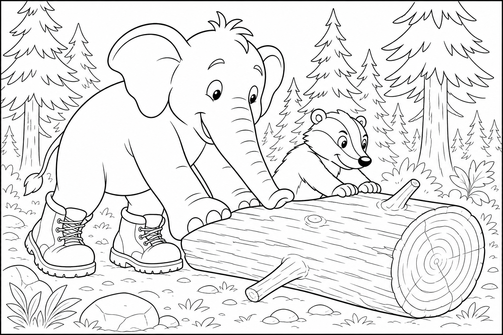
Cerca questa immagine in fondo al libro per colorarla come preferisci. Ricorda: le mele rosse essiccate e la staffa di ferro lucente.
C'era una volta un Elefante di nome Franco, che gli amici chiamavano ... EleFranco. Di cognome faceva Franchini. Abitava nella sua accogliente casa nel paesino di FrancaVilla, un borgo boscoso adagiato tra colline di pini profumati, dove il resina odorava di avventura, i sentieri erano morbidi di aghi caduti e la nebbia del mattino si posava sui tetti come zucchero a velo grigio.
Quella mattina, entrando in cucina, EleFranco vide qualcosa di preoccupante: la mensola sopra il tavolo penzolava da un solo lato, con le tazze che tremavano a ogni passo. «Accipicchia!» esclamò. «Se aspetto ancora, finisce per terra tutto! Devo andare subito da Marco il Falegname a ritirare la staffa riparata.»
Si infilò i suoi stivali giganti da bosco marroni, robusti e con la suola a scarpa da montagna, prese un cestino di vimini e uscì di casa. La pineta risuonava sotto i suoi passi: THUMP THUMP THUMP A metà del sentiero, tra le felci e le rocce muschiose, sentì grugniti affannosi. Dietro un cespuglio di rovi trovò Rufus il Tasso: un tasso corpulento dal muso bianco e nero, con occhietti scuri pieni di paura e zampe potenti che graffiavano invano la corteccia. «EleFranco, aiuto!» grugnì Rufus.
«Stanotte il vento ha fatto cadere questo tronco enorme davanti alla mia tana! I miei cuccioli sono dentro, hanno fame e hanno paura del buio. Ho tutte le mele secche dell'inverno lì sotto, e io sono fuori come un escluso dalla propria festa!» EleFranco guardò il tronco: era grosso quanto una botte, liscio e scivoloso per la pioggia notturna.
Guardò il cestino con la staffa da ritirare. Guardò di nuovo il tronco. «Non preoccuparti, Rufus. Le tue mele non resteranno sole.»
Ma mentre si posizionava per spingere, la mente cominciò a vagare: pensò alla mensola finalmente dritta, alle tazze al sicuro, a quanto sarebbe stato soddisfacente avvitare la staffa nuova con due viti ben larghe... Stava quasi per spingere senza pensare quando da sotto il tronco arrivò un piccolo grugnito flebile, seguito da un altro, e un altro ancora. «Papà! Papà, abbiamo fame!»
Allora l'elefante scosse le grandi orecchie e gridò la sua parola magica: "FOCUS!"«Prima la famiglia, poi la mensola,» decise. «Ma con la testa, non con la fretta.» Si piazzò dietro il tronco e spinse con tutta la forza delle zampe anteriori e della proboscide. Il tronco si mosse — ottimo! — ma invece di rotolare di lato, prese a rotolare giù per il pendio come un barile impazzito.
«Ehi! Fermo! FERMO!» gridò EleFranco, lanciandosi all'inseguimento con tonfi che facevano tremare i funghi. Rufus corse affiancato all'elefante.
Il tronco sfiorò il pollaio di Nonna Pepa — per fortuna si fermò solo contro un vecchio barile da raccolta acqua piovana, che perdeva da una crepa da mesi. Il tonfo sigillò la falla come un tappo naturale, e l'acqua cominciò a riempire il barile con un gorgoglio soddisfatto. Ma nel caos, la staffa nel cestino di EleFranco era volata fuori e aveva colpito un sasso, piegandosi come un uncino stanco. «Oh no,» mormorò EleFranco, tenendola tra le zampe.
«Marco l'aveva appena sistemata...» Rufus, nel frattempo, era tornato di corsa al punto della tana: il tronco, rotolato via, aveva liberato l'ingresso! Tre piccoli tassi con il muso bianco sbucarono fuori e si aggrapparono al papà, sniffando l'aria con gioia. Marco il Falegname, attratto dai tonfi, uscì dalla falegnameria con il grembiule pieno di segatura.
«EleFranco! Rufus! Che spettacolo avete combinato!» rise, poi vide la staffa piegata e il barile riparato. «Il tronco ha sistemato quello che io rimandavo da settimane... e la staffa ormai era vecchia.
Ti forgio una nuova, più forte di prima!» Entrò in bottega e tornò pochi minuti dopo con una staffa lucente, decorata con una piccola foglia di quercia intagliata. Rufus, grato, trascinò fuori un sacco di mele rosse essiccate, dolcissime come caramelle al miele, e le versò nel cestino dell'elefante. «Per te e per la tua mensola,» grugnì.
«E per quando passi di nuovo nel bosco.» EleFranco tornò a casa con la staffa nuova, le mele profumate e la mensola finalmente salva. La missione era compiuta, e il barile da pioggia di Nonna Pepa era un regalo in più per tutto il borgo. Si sistemò la staffa con due viti larghe, guardò le tazze ferme e alzò la proboscide al cielo tra i pini.
EleFranco capì allora la morale di quella giornata: A volte bisogna fermarsi e trovare la strada più sicura, non la più veloce. 🛤
Scoppiò nella sua famosa risata: OH... OH... OH...
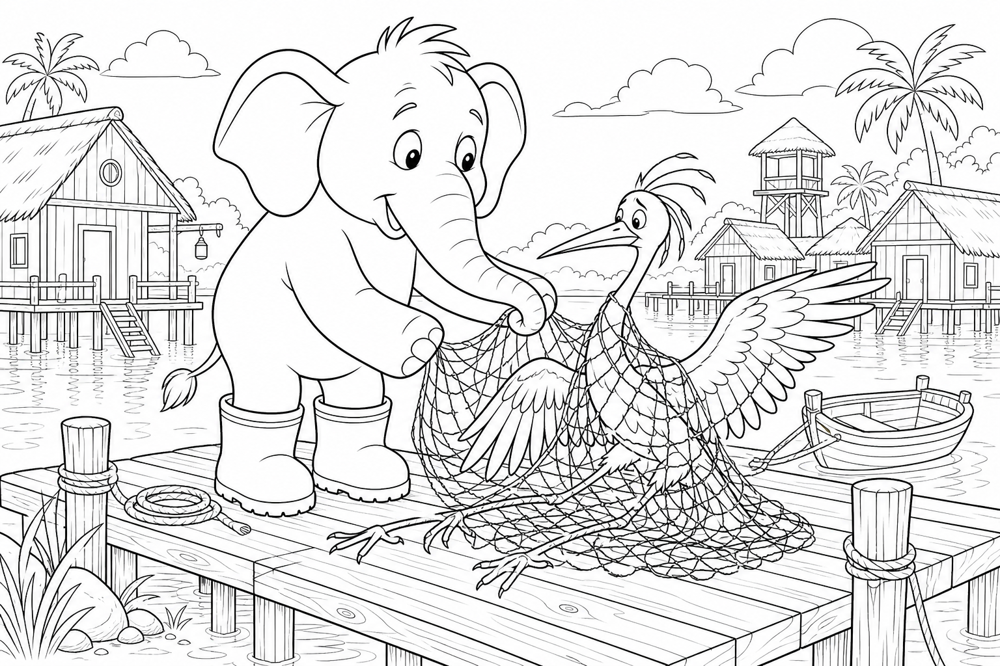
Cerca questa immagine in fondo al libro per colorarla come preferisci. Ricorda: il riso bianco ammucchiato e la farina profumata del mulino.
C'era una volta un Elefante di nome Franco, che gli amici chiamavano ... EleFranco. Di cognome faceva Franchini. Abitava nella sua accogliente casa nel paesino di FrancaVilla, un borgo marinaro costruito su palafitte leggere, dove le case oscillavano dolcemente con la marea, i gabbiani cantavano la sveglia al posto dei galli e l'aria sapeva sempre di salsedine e pane appena sfornato.
Era un mattino limpido e EleFranco aveva un compito preciso: «Tommaso il mugnaio mi aspetta con il sacco di riso! Se arrivo tardi, il mulino galleggiante chiude e resto senza farina per la polenta.» Controllò il sacco pesante nell'angolo della cucina, lo issò sulla schiena con un sospiro e uscì di casa. Si infilò i suoi stivali giganti da pescatore gialli, alti fino al ginocchio e lustrati contro gli spruzzi, e si incamminò verso la laguna.
Le passerelle di legno scricchiolavano sotto i suoi passi: THUMP THUMP THUMP A metà del ponte lungo che portava al mulino, vide una figura lunghissima e grigia, immobile come una statua del vento. Era Esau la Gru: un uccello elegante dal collo sottile, dalle zampe rosee sottili come steli e dagli occhi scuri pieni di paura. Una zampa era completamente avvolta in una rete da pesca abbandonata, e il vento le sbatteva le ali contro i pali della passerella con un suono triste, flap-flap-flap. «EleFranco...» sussurrò Esau con voce rotta.
«Non riesco a muovermi. Questa rete mi stringe le zampe e più mi dimeno, più mi leggo. Ho paura di cadere in acqua.» EleFranco posò il sacco di riso con cura, si avvicinò piano piano — sapeva che le gru si spaventano facilmente — e disse: «Non ti muovere, Esau.
Respiro con me. Inspiro... espiro... Io ti libero.» Ma mentre cominciava a sciogliere il primo nodo con la punta della proboscide, la mente cominciò a vagare: pensò al mulino che girava, alla farina bianca che cadeva, alla polenta fumante con un filo d'olio...
Stava quasi per tirare un filo troppo forte quando Esau gemette: «EleFranco, fa male! Piano, per favore!» Allora l'elefante scosse le grandi orecchie e gridò la sua parola magica: "FOCUS!"«Un filo alla volta,» mormorò. «Come si srotola un regalo, non come si strappa un nodo.»
Lavorò con pazienza infinita: nodo dopo nodo, filo dopo filo, la rete cedeva millimetro per millimetro. Esau chiudeva gli occhi e ripeteva: «Grazie... grazie...» Finalmente l'ultimo groviglio si sciolse. Esau alzò la zampa libera, stiracchiò il collo lungo come un telescopio e sospirò di sollievo.
Ma la rete elastica, scattata all'indietro, volò come un elastico gigante e si avvolse intorno a EleFranco: gli attorcigliò le zanne, le zampe anteriori e parte del pancione in un abbraccio di corda imprevisto. «Ops!» fece EleFranco, cercando di muoversi e facendo solo peggio. Nel trambusto, il sacco di riso — appoggiato troppo vicino al bordo — si rovesciò. Migliaia di chicchi bianchi rotolarono sulla passerella come una valanga di piccole perle, scivolando verso le fessure del legno e verso l'acqua scura sotto.
«Il riso! Il riso di Tommaso!» gridò EleFranco, impotente nella rete. Esau, libera e leggiera, non fuggì. Pieggò le ali, guardò i chicchi sparsi e cominciò a muoversi con una grazia che sembrava una danza antica: un passo lento, un giro del collo, un battito d'ala misurato.
I chicchi, sollevati dalla corrente d'aria, volarono in cerchio e si depositarono in un mucchietto perfetto al centro della passerella, come se qualcuno li avesse contati uno per uno. «Esau, sei magica!» esclamò EleFranco. La gru, con il becco lungo e preciso, tagliò i fili della rete che ancora imprigionavano l'elefante. «Tu mi hai liberata filo dopo filo,» disse Esau.
«Io raccolgo chicco dopo chicco. È la stessa gentilezza.» Tommaso il mugnaio, che dalla finestra del mulino galleggiante aveva visto tutta la scena, spinse la porta e gridò: «EleFranco! Esau!
Aspettate!» Scese lungo la scala di corda con un sacco già macinato e una sporta di farina fresca profumata. «Per l'elefante che non ha mollato la rete,» disse, «e per la gru che ha insegnato a raccogliere con le ali. Il riso che è rimasto basta per tutti, e la polenta è già pronta in pentola!»
EleFranco guardò il mucchietto ordinato, la farina profumata e Esau che faceva un inchino elegante prima di volare verso l'orizzonte rosa. La missione era compiuta, e il mulino aveva macinato più di semplice riso. Tante avventure erano diventate ricordi nel cuore di FrancaVilla: la gentilezza, anche piccola, sa aprire strade meravigliose. Si liberò dall'ultimo filo, prese la sporta e alzò la proboscide al cielo sopra la laguna.
EleFranco capì allora la morale di quella giornata: Chi aiuta con leggiadria impara a volare anche senza ali. 🕊
Scoppiò nella sua famosa risata: OH... OH... OH...

Cerca questa immagine in fondo al libro per colorarla come preferisci. Ricorda: l'erba blu all'ombra del ruscello e il fiocco azzurro di Renatiella.
C'era una volta un Elefante di nome Franco, che gli amici chiamavano ... EleFranco. Di cognome faceva Franchini. Abitava nella sua accogliente casa nel paesino di FrancaVilla, un borgo di alpeggio dolce dove le campane delle mucche suonavano la sveglia, i prati profumavano di rugiada e i tetti di legno fumavano sempre un filo di latte caldo verso il cielo rosa del mattino.
Era un'alba fresca e EleFranco aveva una fame da elefante in gamba: «Oggi voglio il mio porridge, quello con il cucchiaio di miele e il latte appena munto!» Controllò la dispensa: il thermos era vuoto. «Devo correre da Ada all'alpeggio, prima che chiuda la mungitura.» Si infilò i suoi stivali giganti gialli da rugiada, alti e lucidi come due girasoli, prese un secchio pulito con il manico intrecciato e uscì di casa.
Il sentiero del pascolo tremava piano sotto i suoi passi: THUMP THUMP THUMP Arrivato al recinto bianco, sentì un piccolo mugolio triste. In un angolo, seduta sulle zampe posteriori come una bambina capricciosa, c'era Renatiella la Vitella: una vitellina dal pelo bianco e nero, con le orecchie morbide che le penzolavano e gli occhi lucidi come due gocce di rugiada. «Buongiorno, Renatiella,» disse EleFranco con voce calda. «Perché quella faccina lunga?»
La vitella sbuffò. «La mia colazione è finita! Io mangio solo l'erba blu, quella buona, quella dolce. Il fieno è giallo e noioso, il grano è secco, l'erba verde del recinto è sbagliata.
Voglio la mia erba blu!» Ada la mungitrice, donna robusta con il grembiule a quadri, si avvicinò sospirando. «EleFranco, da tre giorni è così. L'erba all'ombra del ruscello l'ha mangiata tutta.
Se non mangia, resta debole e il latte di sua madre Bianchina si fa poco.» EleFranco guardò il prato: tutto verde, uniforme, splendente di rugiada. Guardò il secchio vuoto. Guardò Renatiella che piangeva.
«Non preoccuparti, piccola. L'erba blu la troviamo.» Ma mentre si metteva a cercare, la mente cominciò a vagare: pensò al porridge fumante, al miele che cola lento, a quanto sarebbe stato bello sedersi sul tavolo con il thermos tra le zampe... Stava quasi per arrendersi quando Renatiella gemette: «Ho fame!
Voglio la mia colazione!» Allora l'elefante scosse le grandi orecchie e disse ad alta voce la sua parola magica: "FOCUS!"«Se Renatiella vuole erba blu, io la cerco davvero,» decise. Ricordò che nel bosco crescevano mirtilli: con la proboscide raccolse le baccie più scure, le schiacciò in una pozza di legno e ottenne un succo viola intenso. Poi spruzzò quel succo sull'erba del recinto, filo dopo filo, con cura da giardiniere.
«Ecco! Erba blu!» annunciò, orgoglioso. Renatiella si avvicinò, annusò e arretrò. «No!
Non è la mia! È viola e puzza di bosco! La mia erba blu sa di mattino e di acqua fresca!» EleFranco guardò le zampe gialle macchiate di viola, le orecchie imbrattate, il secchio con una riga blu sul bordo.
Si sentì le gambe pesanti. «Ho rovinato tutto...» Proprio allora arrivò la Dott.ssa Lina, la veterinaria di FrancaVilla, con la sua borsa di stoffa e un sorriso tranquillo. Si inginocchiò accanto alla vitella e le accarezzò il muso.
«Renatiella non è capricciosa,» spiegò dolcemente. «È daltonica. Per lei certi verdi e certi rossi sembrano lo stesso colore. L'«erba blu» che ama è il prato tenero all'ombra del ruscello: lì la luce è fredda, l'erba le sembra azzurra, ed è la più morbida di tutto il pascolo.»
EleFranco spalancò gli occhi. «Quindi non cercava un colore inventato... cercava il suo angolo speciale!» «Esatto,» disse Ada. «Ma quell'angolo ormai è stato mangiato fino al suolo.»
La dottoressa prese un nastro di raso blu dalla borsa. «Segniamo il punto giusto, così tutti lo rispettiamo. E intanto le prepariamo un po' di fieno verde misto a erba trifoglio: per lei non è «verde», è un grigio buono.» EleFranco, con delicatezza, legò il fiocco blu a un paletto vicino al ruscello, dove l'erba stava già ricrescendo sottile e tenera.
Renatiella mangiò subito, con piccoli morsi felici, e Bianchina la mucca muggì contenta dalla stalla. Ada riempì il secchio di latte schiumoso e gli porse un thermos già pronto di porridge caldo con miele. «Per l'elefante che ha imparato a vedere con gli occhi degli altri.» EleFranco sedette sul prato — lontano dal fiocco blu, per non calpestare l'erba nuova — e gustò la colazione.
La missione era compiuta, Renatiella aveva ritrovato la sua colazione e FrancaVilla aveva imparato che ogni amico guarda il mondo con una luce diversa.
EleFranco capì allora la morale di quella giornata: Ognuno vede il mondo a modo suo, e ogni modo è prezioso. 🌈
Alzò la proboscide al sole del mattino e scoppiò nella sua famosa risata: OH... OH... OH...
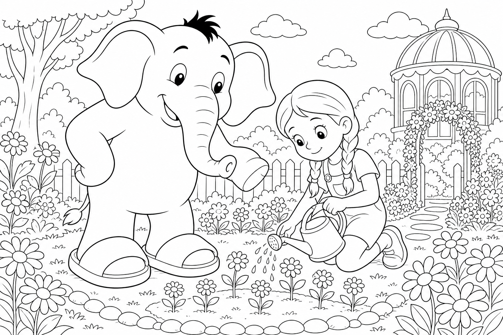
Cerca questa immagine in fondo al libro per colorarla come preferisci. Ricorda: il miele dorato nel barattolo e il nastro giallo di Iris.
C'era una volta un Elefante di nome Franco, che gli amici chiamavano ... EleFranco. Di cognome faceva Franchini. Abitava nella sua accogliente casa nel paesino di FrancaVilla, un borgo fiorito dove i balconi traboccavano di gerani rossi, i vicoli profumavano di lavanda appena colta e ogni mattina il sole sembrava posarsi con cura sulle foglie, come per non svegliare nessuno troppo presto.
Era un pomeriggio di domenica tranquillo e EleFranco aveva una voglia dolcissima in testa: «Stasera voglio il mio tè con un cucchiaino di miele d'acacia, quello che sa di primavera!» Controllò la dispensa: il barattolo era vuoto. «Bene, vado da Beppe l'apicoltore, prima che chiuda il banco del giardino comunitario.» Si infilò le sue ciabatte giganti bianche domenicali, morbide come nuvole appena lavate, prese un cestino di vimini e un barattolo vuoto con il coperchio ben avvitato, e uscì di casa.
Lungo il viale dei gelsomini la terra tremava piano: THUMP THUMP THUMP Arrivato all'angolo dei vasi colorati, vide una bambina seduta su un piccolo sgabello di legno, con le ginocchia sporche di terra buona e le lacrime che le rigavano le guance rosee. Era Iris, la bambina gentile di FrancaVilla: tutti la conoscevano perché salutava sempre per prima, condividea i fiori del suo davanzale e aiutava i vicini a portare la spesa senza chiedere nulla in cambio. «Oh, EleFranco...» singhiozzò Iris, mostrando un annaffiatoio di latta spaccato in due. «Stavo dando da bere alle margheritine nuove, quelle che la nonna ha piantato ieri!
Senza acqua si piegano tutte, e il mio annaffiatoio si è rotto proprio adesso. Ho paura che muoiano prima che torni a casa.» EleFranco posò il cestino e si chinò con la dolcezza di una collina che si abbassa al vento. «Non piangere, piccola Iris.
I germogli hanno ancora bisogno di te, e adesso ci sono anche io.» Ma mentre riempiva l'annaffiatoio rotto alla fontanella — tenendolo fermo con una zampa e versando con la proboscide — la sua mente cominciò a vagare. Pensò al miele dorato che avrebbe trovato da Beppe, a quanto sarebbe stato buono nel tè, al cucchiaino che gocciolava lentamente sul bordo della tazza... Stava quasi per dimenticare i vasi quando una margheritina si abbassò come un piccolo ombrello stanco.
«EleFranco, guarda! Sta morendo di sete!» gridò Iris. Allora l'elefante scosse le grandi orecchie e disse ad alta voce la sua parola magica: "FOCUS!"«Uno alla volta, con calma,» mormorò. «I fiori non hanno fretta: hanno bisogno di gentilezza.»
Innaffiò ogni vasilino con getti leggeri e precisi, come pioggia di primavera. Iris lo seguiva, ripetendo i nomi delle piantine: «Questa è Stella, questa è Luna, questa è Sole...» EleFranco sorrideva a ogni nome. Ma nell'entusiasmo di salvare l'ultimo filare, spruzzò un po' troppo forte.
L'acqua si riversò sul sentiero polveroso, mescolò la terra e creò un ruscello improvviso che scivolò verso il basso. Le ciabatte bianche di EleFranco si riempirono di fango, il cestino oscillò pericolosamente e il barattolo vuoto rotolò fino a un'aiuola, fermandosi solo perché Iris lo afferrò con agilità. «Ops!» fece EleFranco, guardando il sentiero trasformato in piscina. «Ora come faccio ad arrivare da Beppe?
E le mie ciabatte domenicali... sembrano due panettoni al cioccolato!» Iris non si lamentò. Prese un rametto e disegnò una piccola diga di terra per deviare l'acqua verso un canale di scolo. «Così i fiori non annegano,» disse.
«E tu aspetta un attimo.» Proprio in quel momento, un ronzio armonioso riempì l'aria. Le api dell'arnia vicina — quelle che Beppe curava con tanto amore — uscirono in fila ordinata e volarono basso sopra i fiori appena salvati, come per ringraziare. Poi, con un movimento che sembrava studiato, sfiorarono il sentiero e indicarono un viottolo laterale coperto di trifoglio, asciutto e ombreggiato, che EleFranco non aveva mai notato.
«Ci guidano loro!» esclamò Iris, battendo le mani. EleFranco seguì la scorta delle api fino al banco di Beppe, che aveva visto tutto dal fondo del giardino. «Ho sentito il tuo cuore generoso da qui, amico mio,» disse l'apicoltore, riempiendo non uno ma due barattoli di miele d'acacia. «Uno per il tuo tè, uno per la bambina che salva le margheritine.»
Tagliò anche una fetta di favo a forma di stella e la pose nelle mani di Iris, che le legò un nastro giallo sul barattolo dell'elefante e sussurrò: «Per il più gentile amico di FrancaVilla.» EleFranco tornò a casa con i piedi fangosi ma il cuore leggero. La missione era compiuta, i fiori erano salvi e il tè serale avrebbe profumato di miele e di primavera.
EleFranco capì allora la morale di quella giornata: Chi cura i piccoli germogli fa crescere la gentilezza nel mondo, un goccio alla volta. 💛
Alzò la proboscide al cielo rosa del tramonto e scoppiò nella sua famosa risata: OH... OH... OH...
Iris Edition — Stagione 2
Per Iris, con tutto l'amore del mondo 🐘💛


Cerca questa immagine in fondo al libro per colorarla come preferisci. Ricorda: la farina bianca sulla proboscide e i filoni dorati del forno.
C'era una volta un Elefante di nome Franco, che gli amici chiamavano ... EleFranco. Di cognome faceva Franchini. Abitava nella sua accogliente casa nel paesino di FrancaVilla, un borgo profumato di lievito e legna arsa, dove i tetti avevano comignoli a forma di spiga, le finestre della panetteria si appannavano di vapore dolce al mattino e ogni vicolo sembrava uscire da un libro di ricette illustrate.
Era un mattino di sole tiepido e EleFranco aveva una fame da lupi: «Devo andare subito da Berto il Fornaio a prendere un filone integrale croccante, prima che spenga il fuoco del forno!» Controllò la dispensa: solo briciole. «Senza pane, la colazione non è colazione.» Si infilò le sue ciabatte giganti da fornaio, con la suola antiscivolo color cannella, prese un canovaccio pulito e uscì di casa.
Lungo la strada del profumo il selciato tremava piano: THUMP THUMP THUMP Arrivato all'angolo del forno a legna, vide una nuvoletta bianca che usciva da terra e, in mezzo, una volpe rossa con il muso imbiancato e le zampe che scivolavano come su pattini. Era Nora la Volpe, vivace e onesta, ma quella mattina era al limite delle lacrime. «EleFranco, che disastro!» gemette. «Portavo a casa il sacco di farina del mulino e — CRAC! — si è rotto sul bordo del marciapiede!
Ora la strada è un campo di neve farinosa, scivolo a ogni passo e il fornaio Berto sta per aprire: se vede tutto questo casino, penserà che l'ho fatto apposta!» EleFranco posò il canovaccio e guardò la strada bianca. Poi guardò il forno fumante. Poi di nuovo la farina.
«Non ti preoccupare, Nora. Insieme sistemiamo tutto.» Ma mentre cominciava a radunare la farina con la proboscide, la mente cominciò a vagare: pensò al filone caldo, al burro che si scioglie, a quante fette avrebbe tagliato — spesse o sottili? — e se avrebbe messo anche un po' di miele. Stava quasi per perdere il controllo quando Nora gridò: «EleFranco, sto scivolando verso il canale!»
Allora l'elefante scosse le grandi orecchie e disse ad alta voce la sua parola magica: "FOCUS!"«Piano, Nora. La farina non ha fretta: noi sì, ma con calma.» Cominciò a spazzare con movimenti circolari, riunendo la polvere in piccoli mucchietti ordinati. Nora, appoggiata al muro, gli passava una pala di legno e incoraggiava: «Bravo!
Ancora un po' a sinistra!» Ma EleFranco, entusiasta del progresso, diede un soffio per spazzare via l'ultimo velo di farina dal marciapiede. Fu un soffio troppo generoso: una nuvola bianca esplose verso l'alto, coprendo l'elefante da capo a piedi, imbiancando le finestre del forno e depositando uno strato finissimo su tutta la piazzetta. EleFranco starnutì.
«ETCIÙ! Ops... ora sembro un pandoro ambulante.» Nora si tappò la bocca per non ridere, poi si fece seria: «E il fornaio sta aprendo il cancello!» Proprio in quel momento, Berto il Fornaio spinse la porta del forno e uscì con un grembiule infarinato e un sorriso largo.
Vide la scena — l'elefante bianco, la volpe rossa, la strada quasi pulita — e invece di arrabbiarsi alzò le sopracciglia per la sorpresa. «Ma che magia è questa?» mormorò, guardando i tavoli dove l'impasto era appena steso. La corrente calda uscita dal forno aveva incontrato la farina umida caduta per caso sui pani in lievitazione: si era formata una crosta dorata, uniforme e splendente, come se un artista avesse spolverato oro commestibile su ogni filone. «Non l'ho mai ottenuta così perfetta!» esclamò Berto.
«EleFranco, Nora, siete due geni del pane!» Nora arrossì sotto la farina. «Noi volevamo solo ripulire...» Berto rise e riempì un cesto di filoni caldi, croccanti fuori e morbidi dentro.
Ne pose uno nelle zampe di Nora con un sacco di farina nuovo legato con un fiocco arancione. «Per la volpe onesta che non è scappata dal pasticcio.» Poi porse il cesto a EleFranco. «E per l'elefante che ha trasformato un disastro in colazione.»
La missione era compiuta senza nemmeno entrare in coda: il pane era lì, profumato e gratis, e la strada era di nuovo sicura. EleFranco si stropicciò il ciuffo bianco, guardò Nora che salutava felice e alzò la proboscide al cielo azzurro del mattino.
EleFranco capì allora la morale di quella giornata: L'ordine nasce con calma, non con fretta. 🧹
Scoppiò nella sua famosa risata: OH... OH... OH...

Cerca questa immagine in fondo al libro per colorarla come preferisci. Ricorda: le foglie verdi del platano e la mozzarella bianca lucente.
C'era una volta un Elefante di nome Franco, che gli amici chiamavano ... EleFranco. Di cognome faceva Franchini. Abitava nella sua accogliente casa nel paesino di FrancaVilla, un borgo di pietra chiara costruito a ridosso di un fiume tranquillo, dove i ponti di legno scricchiolavano sotto i passi mattutini, l'aria sapeva di erba tagliata e dalle finestre del caseificio usciva sempre un filo di vapore bianco e dolce.
Era mezzogiorno inoltrato e EleFranco aveva fame di qualcosa di fresco: «Devo andare da Gina al caseificio a prendere una mozzarella morbida per la mia insalata! Se arrivo tardi, chiude il banco del latte.» Aprì il frigorifero: solo lattuga solitaria. «Senza mozzarella, l'insalata è triste.»
Si infilò le sue scarpe giganti impermeabili color verde muschio, prese un cestino di vimini e uscì verso il sentiero del fiume. Ogni passo faceva vibrare le assi del ponticello: THUMP THUMP THUMP A metà strada sentì un piccolo sibilo di frustrazione. Sulla riva c'erano due secchi di latte ancora freddi e, accovacciata su una pietra, Leda la Lontra — lucida, veloce di zampa, ma con gli occhi pieni di paura. «EleFranco!» chiamò.
«Il mio scivolo è diventato un toboga! Stanotte ha piovuto e il muschio è cresciuto come un tappeto scivoloso. Devo portare il latte a Gina prima che si cagli, ma se ci provo finisco nel fiume!» EleFranco guardò lo scivolo di legno che scendeva verso il caseificio.
Poi guardò il cestino vuoto. Poi di nuovo il muschio lucido. «Non ti preoccupare, Leda. Lo rendiamo sicuro.»
Ma mentre cercava le foglie più larghe lungo la riva, la mente cominciò a vagare: quante fette di mozzarella avrebbe messo sull'insalata? Con pomodori o senza? E se Gina avesse anche del basilico profumato? Stava quasi per dimenticare dove fosse quando Leda gridò: «EleFranco, il latte trema nel secchio!»
Allora l'elefante scosse le grandi orecchie e disse ad alta voce la sua parola magica: "FOCUS!"«Piano, Leda. Una foglia alla volta.» Raccoglieva foglie di platano, grandi come parasoli, e le stendeva sullo scivolo per asciugare il muschio. Leda gli passava rametti secchi da infilare tra le fessure.
«Brava idea! Così non scivolano!» incoraggiava. Ma EleFranco, entusiasta, decise che più foglie significava più sicurezza. Ne prese un'intera pila dalla riva e — SWOOSH! — le sparse tutte insieme sul sentiero.
Una valanga verde coprì lo scivolo, il marciapiede e metà della strada verso il caseificio. «Ops,» disse EleFranco, con una foglia enorme appoggiata sulla testa come un cappello da chef. Leda rise, poi si fece seria: «Ora sembri un'insalata ambulante. E il sentiero è ancora più ingombro!»
EleFranco non si arrese. «Le foglie bagnate sono pesanti. Se le calpestiamo con calma, si compattano.» Camminò piano sul tappeto verde, Leda lo imitò con i secchi, e sotto i loro passi le foglie si schiacciarono formando uno strato compatto e antiscivolo.
Dove prima c'era solo muschio pericoloso, ora c'era un ponticello naturale che attraversava il ruscello come un tappeto di foresta. Gina la Casaria uscì dalla porta del caseificio proprio mentre Leda depositava l'ultimo secchio sul banco. «Ma che meraviglia avete costruito!» esclamò, guardando il sentiero rinnovato. «Da anni volevo sistemare quello scivolo!»
Gina prese una mozzarella appena formata, bianca e lucente come una piccola luna, e la pose nel cestino di EleFranco. A Leda regalò un secchio nuovo con il manico arancione. «Per la lontra che non ha mollato il latte.» La missione era compiuta: insalata salvata, sentiero sicuro, amicizia rafforzata.
EleFranco capì allora la morale di quella giornata: Chi rende sicuro il cammino degli altri trova la propria strada. 🛤
EleFranco salutò Leda con un cenno della proboscide e scoppiò nella sua famosa risata: OH... OH... OH...

Cerca questa immagine in fondo al libro per colorarla come preferisci. Ricorda: il palloncino rosso gonfio e il biglietto dorato della prima fila.
C'era una volta un Elefante di nome Franco, che gli amici chiamavano ... EleFranco. Di cognome faceva Franchini. Abitava nella sua accogliente casa nel paesino di FrancaVilla, che quella settimana aveva trasformato la piazza centrale in un villaggio circense: tende a strisce rosse e gialle, funi tese tra i lampioni, profumo di zucchero filato nell'aria e un cartello gigante che annunciava «Stasera — Spettacolo Meraviglioso!».
Era un pomeriggio luminoso e EleFranco non vedeva l'ora: «Devo comprare il biglietto per lo spettacolo prima che finiscano i posti in prima fila! Ho sentito che c'è un acrobata che cammina sulla corda tesa come se fosse un sentiero di nuvole.» Controllò il portafoglio: tutto in ordine. «Andiamo!»
Si infilò le sue ciabatte giganti a pois colorati, perfette per una festa, e uscì verso la piazza. Il selciato tremava di eccitazione: THUMP THUMP THUMP Arrivato davanti alla biglietteria, notò una macchia rossa sul prato — piatta, triste, quasi invisibile. Si chinò e sentì una vocina sottile: «EleFranco... sono io, Pippo. Pippo il Palloncino.»
Era un palloncino rosso dal sorriso dipinto, ma completamente sgonfio, steso sull'erba come un fiore appassito. «Stanotte il vento mi ha abbracciato troppo forte,» sospirò. «Ho perso aria. Domani devo salutare i bambini dall'alto, prima dello spettacolo, ma così sono solo un pezzo di gomma triste.»
EleFranco guardò Pippo. Poi guardò la fila alla biglietteria. Poi di nuovo il palloncino sgonfio. «Non ti preoccupare, Pippo.
Ti ridiamo il volo.» Ma mentre preparava il soffio, la mente cominciò a vagare: dove avrebbe seduto in prima fila? Avrebbe condiviso i popcorn? E se l'acrobata facesse una capriola proprio sopra di lui?
Stava quasi per soffiare senza pensare quando Pippo gemette: «EleFranco, sento che mi stai dimenticando lì sul prato!» Allora l'elefante scosse le grandi orecchie e disse ad alta voce la sua parola magica: "FOCUS!"«Piano, Pippo. Un soffio gentile alla volta.» Si inginocchiò, chiuse gli occhi e soffiò con cura nella valvoletta del palloncino.
Pippo cominciò a gonfiarsi, rosso e lucido, ma EleFranco, entusiasta, non si fermò in tempo. Il soffio divenne un vento generoso — troppo generoso. EleFranco arrossì fino alle orecchie, il ciuffo nero si rizzò a punta come se avesse visto un fantasma, e Pippo balzò verso l'alto oscillando come un pallone impazzito legato a un filo invisibile. «Whee!» gridò Pippo, poi «Aaaah!» mentre zigzagava tra i lampioni.
«Ops,» fece EleFranco, ansimando. «Sembro un peperone gigante.» Proprio in quel momento, la macchina dei popcorn accanto alla biglietteria sputò una nuvola d'aria calda e profumata di burro. La corrente dolce incontrò Pippo a mezz'aria: il palloncino si gonfiò alla perfezione, rotondo e splendente, e una brezza lo sollevò ancora più in alto.
Da lassù, qualcosa di dorato scivolò lungo il filo del vento e atterrò sulla proboscide di EleFranco: un biglietto d'oro con scritto «Prima fila — Ospite d'onore». Il direttore del circo, un gatto dal cilindro elegante, rise dal palco. «Per l'elefante che ha ridato il cielo a Pippo!» Pippo scese danzando, lucido e felice.
«Grazie, EleFranco. Il tuo soffio era forte, ma il tuo cuore era giusto.» La missione era compiuta: biglietto in mano, palloncino in volo, spettacolo assicurato.
EleFranco capì allora la morale di quella giornata: Anche i piccoli possono rialzarsi con un soffio d'incoraggiamento. 🎈
EleFranco guardò il cielo colorato della tenda e scoppiò nella sua famosa risata: OH... OH... OH...

Cerca questa immagine in fondo al libro per colorarla come preferisci. Ricorda: la polvere dorata delle falene e la costellazione luminosa del Cigno.
C'era una volta un Elefante di nome Franco, che gli amici chiamavano ... EleFranco. Di cognome faceva Franchini. Abitava nella sua accogliente casa nel paesino di FrancaVilla, un borgo arroccato su una collina dolce dove le case salivano a gradoni verso l'osservatorio, le finestre si illuminavano di lampioni a olio e la sera l'intero paese sembrava sospeso tra terra e cielo come un nido di stelle.
Era il tramonto e EleFranco aveva un piccolo problema: «La mia lampada notturna si è rotta! Devo andare dalla bottega in cima alla collina a prenderne una nuova, prima che cali il buio pesto.» Guardò fuori: il cielo era già indaco. «Senza luce, inciampo nelle ciabatte.»
Si infilò le sue stivali giganti morbidi color notte, con suole che non scricchiolavano, prese un sacco di tela e salì per il sentiero. La collina rispondeva piano: THUMP THUMP THUMP Arrivato all'osservatorio, trovò Otis il Gufo Astronomo seduto su un trespolo, con le grandi ali strette al petto e gli occhi dorati pieni di preoccupazione. «EleFranco, che notte difficile!» sussurrò. «Il vento ha strappato la mia mappa delle stelle — pezzi di carta sparsi ovunque!
Stasera arrivano i bambini per guardare la costellazione del Cigno, ma senza mappa e senza lampioni accesi non trovano la cupola.» EleFranco guardò i frammenti di carta che volteggiavano nel crepuscolo. Poi guardò il sentiero buio. Poi di nuovo Otis.
«Non ti preoccupare, Otis. Troviamo una strada.» Ma mentre cercava di ricordare dove fosse la bottega, la mente cominciò a vagare: che colore avrebbe scelto per la lampada? Giallo caldo o arancio?
E se avesse comprato anche una coperta morbida? Stava quasi per perdersi nel buio quando Otis gridò: «EleFranco, sento passi confusi laggiù! I bambini stanno arrivando!» Allora l'elefante scosse le grandi orecchie e disse ad alta voce la sua parola magica: "FOCUS!"«Piano, Otis.
Una stella alla volta.» Sollevò la proboscide verso il cielo, riflettendo la luce dell'ultimo tramonto, e illuminò il sentiero come un faro gentile. «Seguite la luce!» chiamò ai bambini che salivano. Ma la luce calda attirò anche una falena polverosa, piena di scaglie dorate che brillavano come polvere di stelle.
La falena danzò intorno alla proboscide, poi intorno a Otis, poi verso il muro bianco dell'osservatorio. «Ops,» disse EleFranco, coperto di polvere scintillante. «Sembro un cielo stellato ambulante.» Otis però non si lamentò.
Guardò il muro dove la falena — e altre amiche attratte dalla luce — avevano lasciato tracce dorate. I punti luminosi formavano proprio la forma del Cigno, con le ali spiegate e il collo elegante. «È la mia mappa!» esclamò il gufo. «La natura l'ha ridisegnata!»
I bambini giunsero in cima, meravigliati. «È più bella della carta!» dissero in coro. Otis aprì la cupola. Le stelle vere brillavano sopra, e il disegno dorato sul muro indicava esattamente dove guardare.
La bottega poteva aspettare: EleFranco non aveva più bisogno della lampada. La missione era compiuta: notte illuminata, stelle trovate, bambini felici.
EleFranco capì allora la morale di quella giornata: Per non perdersi basta guardare una stella alla volta. ⭐
EleFranco guardò il cielo e scoppiò nella sua famosa risata: OH... OH... OH...
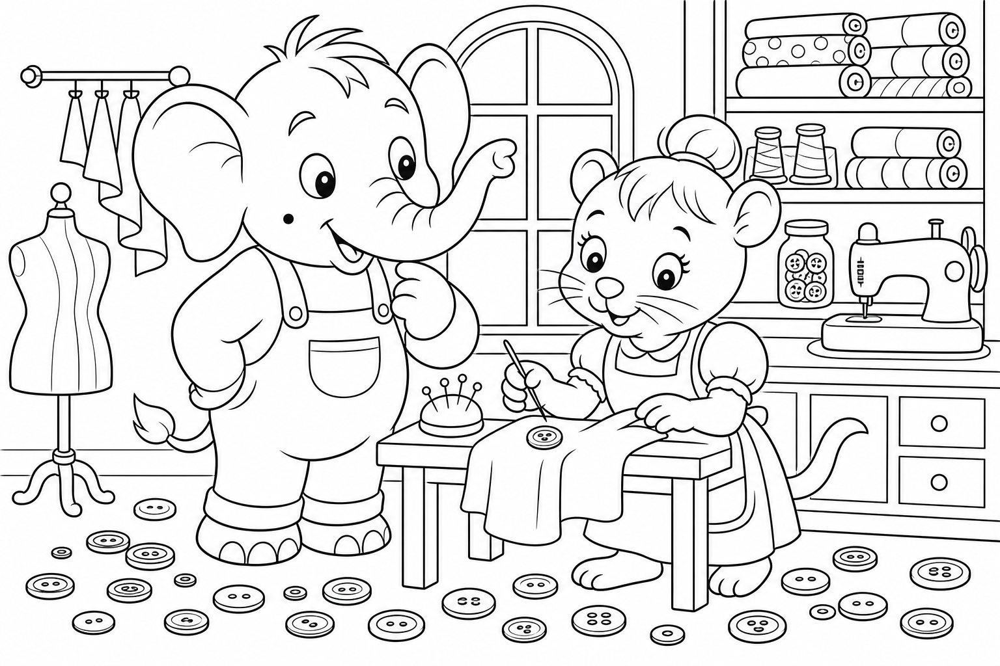
Cerca questa immagine in fondo al libro per colorarla come preferisci. Ricorda: i bottoni a forma di stella dorati e il filo blu della mantella.
C'era una volta un Elefante di nome Franco, che gli amici chiamavano ... EleFranco. Di cognome faceva Franchini. Abitava nella sua accogliente casa nel paesino di FrancaVilla, un borgo sartoriale dove le vetrine esponevano gomitoli colorati come confetti, i marciapiedi odoravano di stoffa nuova e sotto le case correvano piccoli tunnel che collegavano le botteghe degli artigiani come fili invisibili.
Era una mattina ventosa e EleFranco aveva un compito urgente: «La mantella del vento ha strappato un lembo! Devo andare dal merciaio a prendere un rotolo di filo blu prima che la sera diventi fredda.» Toccò il tessuto svolazzante alla finestra. «Senza riparazione, entra il freddo.»
Si infilò le sue scarpe giganti morbide color lana grigia, prese il pezzo di mantella strappato e scese verso la bottega. Il selciato tremava piano: THUMP THUMP THUMP Davanti all'ingresso arrotondato della merceria sotterranea, sentì un piccolo lamento. Tina la Talpa Sarta — con il grembiule a quadri e le unghie curate da sarta — sedeva accanto a una buca buia, con gli occhiali appoggiati sulla testa. «EleFranco, che disastro!» sospirò.
«I bottoni per l'abito della festa sono caduti nella buca del laboratorio. Sono tutti rovesciati, mescolati con spilli e sabbia fine. Io senza occhiali non vedo nulla laggiù, e l'abito deve essere pronto per domani!» EleFranco guardò la buca.
Poi guardò il pezzo di mantella. Poi di nuovo Tina. «Non ti preoccupare, Tina. Mettiamo ordine.»
Ma mentre si chinava, la mente cominciò a vagare: quanti punti avrebbe fatto sulla mantella? A punto croce o a maglia? E se il merciaio avesse anche un filo argentato? Stava quasi per affondare la zampa nella buca senza piano quando Tina gridò: «EleFranco, attento agli spilli!»
Allora l'elefante scosse le grandi orecchie e disse ad alta voce la sua parola magica: "FOCUS!"«Piano, Tina. Un mucchietto alla volta.» Provò a separare i bottoni con la punta della proboscide, ma la zampa gigante era troppo larga per la buca stretta. Decise di estrarre tutto in una volta — bottoni, spilli, gomitoli caduti — e sistemarli sul pavimento.
Fu un errore buffo: il mucchio divenne un turbine colorato. Bottoni rotolarono verso destra, spilli verso sinistra, gomitoli si srotolarono come serpenti di lana. «Ops,» disse EleFranco, con un bottone blu incastrato nell'orecchio. «Sembro un cuscino decorato.»
Tina non rise. «È peggio di prima!» EleFranco respirò piano. «Hai ragione.
Ordine nel caos: prima i grandi, poi i piccoli.» Con la proboscide, creò tre mucchietti: bottoni da un lato, spilli dall'altro, fili al centro. Tina, con gli occhiali finalmente sul naso, iniziò a riconoscere le forme. Proprio in quel momento, una piccola scossa di terra — dolce come un sospiro — fece tremare la buca.
Dalla sabbia emersero bottoni a forma di stella, dorati e lucenti, che nessuno aveva mai visto prima. «Eccoli!» esclamò Tina. «I bottoni speciali per il colletto!» Con il filo blu comprato in fretta al merciaio, EleFranco riparò la mantella.
Tina cucì le stelle sull'abito: era più bello di quanto avesse immaginato. La missione era compiuta: mantella a posto, abito splendente, bottega in ordine.
EleFranco capì allora la morale di quella giornata: Mettere ordine nel caos è già metà dell'aiuto. 🧺
EleFranco guardò i gomitoli colorati e scoppiò nella sua famosa risata: OH... OH... OH...
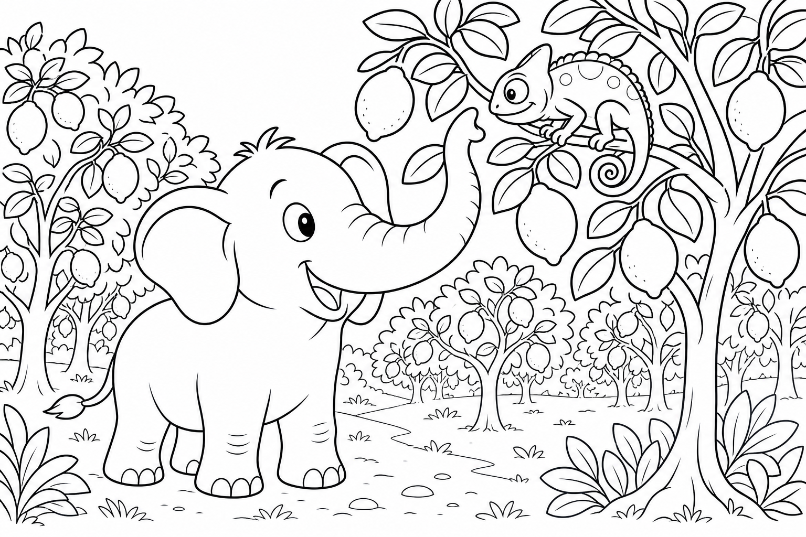
Cerca questa immagine in fondo al libro per colorarla come preferisci. Ricorda: i limoni gialli caduti e il camaleonte verde brillante.
C'era una volta un Elefante di nome Franco, che gli amici chiamavano ... EleFranco. Di cognome faceva Franchini. Abitava nella sua accogliente casa nel paesino di FrancaVilla, un borgo agrumario dove i limoni crescevano dietro muri bianchi come perle, l'aria era sempre profumata di fiori di zagara e i sentieri tra i pergolati sembravano tunnel di sole giallo.
Era un pomeriggio cocente e EleFranco aveva sete: «Devo raccogliere limoni maturi dal limoneto di Lino per fare la mia limonata fresca!» Guardò il barattolo vuoto in cucina. «Senza limoni, l'estate non è estate.» Si infilò le sue ciabatte giganti color giallo limone, prese un cesto grande e uscì verso il limoneto.
Le foglie tremavano al passaggio: THUMP THUMP THUMP Tra i rami più bassi sentì un sussurro appena percettibile: «Psst... EleFranco... sono qui... ma nessuno mi vede.» EleFranco si fermò. Guardò a destra: limone.
A sinistra: limone. Poi notò un limone con due occhietti gentili che lampeggiavano — Ciro il Camaleonte, mimetizzato così bene da sembrare parte della buccia. «La mamma mi cerca da ore,» sussurrò Ciro. «Mi sono nascosto perché avevo paura di un passero rumoroso.
Ora sono invisibile anche a lei. Ho paura di muovermi.» EleFranco guardò il limoneto. Poi il cesto vuoto.
Poi di nuovo Ciro quasi invisibile. «Non ti preoccupare, Ciro. Ti facciamo ritrovare.» Ma mentre cercava di individuare il camaleonte tra i frutti, la mente cominciò a vagare: quanto zucchero avrebbe messo nella limonata?
Con menta o senza? E se Lino avesse anche dei limoni giganti? Stava quasi per afferrare il limone sbagliato quando Ciro sussurrò: «EleFranco, quello è il mio vicino di foglia!» Allora l'elefante scosse le grandi orecchie e disse ad alta voce la sua parola magica: "FOCUS!"«Piano, Ciro.
Ti troviamo con calma.» EleFranco non si arrese. «Piano, Ciro. Annusiamo insieme.»
Si avvicinò agli alberi e annusò piano, limone dopo limone, chiedendo a ogni frutto: «Sei tu, piccolo amico?» Ciro rideva piano quando la proboscide passava vicino ma non abbastanza. Il profumo era intenso — troppo intenso. Uno starnuto enorme scosse tutto il limoneto.
«ETCIÙ!» I limoni maturi caddero come piccole sfere gialle, rotolando su ogni lato, rimbalzando sui vasi, riempiendo il sentiero di una pioggia agrumata. Ciro, spaventato, cambiò colore dal giallo al verde brillante e saltò sul ramo più alto. «Ops,» disse EleFranco, con una foglia di limone sulla testa.
«Sembro un albero in autunno giallo.» «E io sembro un semaforo!» rispose Ciro, arrossendo sotto le squame. Ma proprio quel frastuono fece emergere Ciro: saltò sul ramo, cambiò colore dal giallo al verde brillante, e una vocina felice gridò dall'ingresso del limoneto: «Ciro! Ti ho trovato!»
Era la mamma camaleonte, con le lacrime di gioia negli occhietti. Lino il Contadino arrivò correndo, ridendo. «Ma che raccolta meravigliosa! I limoni sono caduti proprio nella mia cesta del mercato!»
Indicò un carretto già pronto: i limoni rotolati si erano fermati tutti lì, ordinati come per magia. Lino preparò limonata fresca per tutti, con ghiaccio e menta. «Per l'elefante che ha fatto piovere sole.» La missione era compiuta: limonata pronta, Ciro ritrovato, famiglia riunita.
EleFranco capì allora la morale di quella giornata: Essere visti è un regalo quando ci si sente invisibili. 👀
EleFranco alzò il bicchiere e scoppiò nella sua famosa risata: OH... OH... OH...

Cerca questa immagine in fondo al libro per colorarla come preferisci. Ricorda: le ciabatte nuove blu e arancio e l'acqua azzurra della piscina.
C'era una volta un Elefante di nome Franco, che gli amici chiamavano ... EleFranco. Di cognome faceva Franchini. Abitava nella sua accogliente casa nel paesino di FrancaVilla, un borgo estivo con una piscina comunale azzurra al centro, dove le palme di plastica decoravano il cancello, l'aria sapeva di cloro leggero e i bambini portavano asciugamani colorati come bandiere.
Era una mattina di sole e EleFranco guardò le sue ciabatte consumate: «Buche qui, buche là! Devo andare al negozio sportivo vicino alla piscina a comprarne un paio nuovo, prima che mi facciano male i piedoni.» Si infilò le vecchie ciabatte giganti ancora per un ultimo viaggio — squish squash — e uscì verso la piscina. Il marciapiede vibrava: THUMP THUMP THUMP All'ingresso sentì un piccolo «quack» tremolante.
Nella vasca dei puliti, un paperino giallo con il piumaggio ancora soffice girava in tondo, senza uscire. Intorno, le mamme papa si rasciugavano le ali e chiamavano i piccoli — tutti tranne uno. «EleFranco...» sussurrò. «Sono Dodo.
Ho provato a seguire la mamma, ma il bordo è scivoloso e ho paura. Se esco, scivolo. Se resto, mi manca la mamma.» EleFranco guardò la vasca.
Poi il negozio sportivo. Poi di nuovo Dodo. «Non ti preoccupare, Dodo. La pulizia con amore non fa paura.»
Ma mentre pensava a come rincuorarlo, la mente cominciò a vagare: che colore avrebbero le ciabatte nuove? Blu o arancio? E se avessero le stelle? Stava quasi per ignorare il paperino quando Dodo gridò: «EleFranco, sento la mamma che chiama fuori!»
Allora l'elefante scosse le grandi orecchie e disse ad alta voce la sua parola magica: "FOCUS!"«Piano, Dodo. Ti aiuto io.» Si avvicinò alla vasca e fece una doccia gentile con la proboscide, un getto morbido e caldo che rincuorò Dodo. Ma EleFranco, volendo essere generoso, aprì un po' troppo il rubinetto.
Uno spruzzo abbondante inondò il vestibolo: pavimento lucido, panche bagnate, specchi pieni di gocce che riflettevano l'arcobaleno della luce. Un bambino che passava rise: «Papà, piove dentro!» «Ops,» disse EleFranco, con una goccia sul ciuffo. «Sembro un elefante appena uscito dalla doccia.»
Ma l'acqua calda sciolse qualcosa nel tubo intasato: lo scarico si aprì con un gorgoglio felice, e il pavimento si asciugò più in fretta del previsto. Dodo, rincuorato, uscì piano sul bordo ora sicuro, facendo il primo «quack» deciso della sua vita da paperino coraggioso. La mamma papera arrivò di corsa e lo strinse tra le ali. «Grazie, EleFranco.
La doccia non fa paura quando c'è un amico grande.» Il negoziante sportivo, un tasso con il cappello da baseball, rise dal bancone. «Per l'elefante che ha lavato la paura e anche il vestibolo!» Da un vassoio galleggiante nella vasca dei puliti — dove l'acqua ora scorreva perfetta — arrivarono le ciabatte nuove, blu e arancio, fino ai piedi di EleFranco.
«Misura perfetta!» disse il negoziante. «Come se fossero nate lì.» EleFranco le provò: morbide, antiscivolo, pronte per mille avventure. La missione era compiuta: ciabatte nuove, Dodo salvo, piscina splendente.
EleFranco capì allora la morale di quella giornata: La pulizia con amore non fa mai paura. 💦
EleFranco indossò le ciabatte e scoppiò nella sua famosa risata: OH... OH... OH...
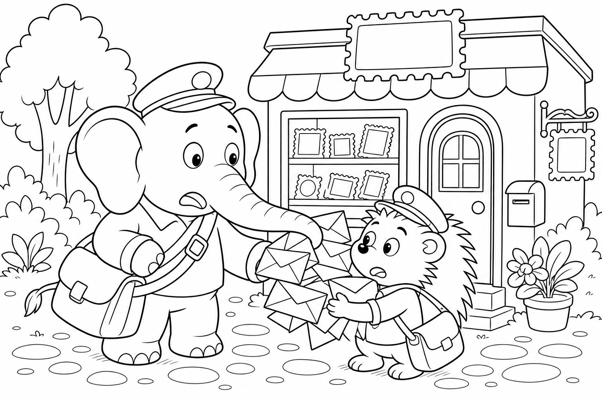
Cerca questa immagine in fondo al libro per colorarla come preferisci. Ricorda: i timbri colorati disposti a cuore e il francobollo dorato.
C'era una volta un Elefante di nome Franco, che gli amici chiamavano ... EleFranco. Di cognome faceva Franchini. Abitava nella sua accogliente casa nel paesino di FrancaVilla, un borgo epistolare dove la piccola piazza aveva un ufficio posta con la campanella d'ottone, le finestre erano piene di cartoline colorate e ogni mattina qualcuno aspettava una lettera come si aspetta un amico.
Era un mattino umido e EleFranco teneva in mano una lettera scritta con cura: «Devo comprare un francobollo speciale per la zia lontana, prima che chiuda l'ufficio posta!» La lettera parlava di FrancaVilla, di amici e di avventure. «Senza francobollo, il viaggio non comincia.» Si infilò le sue scarpe giganti eleganti color bordeaux, prese la busta e uscì verso la filatelia.
I passi risuonavano sulla piazza: THUMP THUMP THUMP Davanti alla vetrina piena di timbri rari, trovò Elio il Riccio Postino seduto su una pila di buste, con le spine leggermente abbassate dallo stress. «EleFranco, che mattina!» sospirò. «L'umidità ha incollato tutte le buste del mattino l'una all'altra! Se le strappo, rovino i timbri.
Se non le separo, la posta non parte e il paese resta in silenzio.» EleFranco guardò la pila appiccicosa. Poi la sua lettera. Poi di nuovo Elio.
«Non ti preoccupare, Elio. Con calma le separiamo.» Ma mentre inumidiva piano i bordi con un fazzoletto, la mente cominciò a vagare: che francobollo avrebbe scelto? Con fiori o con farfalle?
E se la zia avesse risposto presto? Stava quasi per tirare troppo forte quando Elio gridò: «EleFranco, quel timbro è del 1920!» Allora l'elefante scosse le grandi orecchie e disse ad alta voce la sua parola magica: "FOCUS!"«Piano, Elio. Un dettaglio alla volta.»
Con la proboscide, sollevò ogni busta millimetro per millimetro. Funzionava: le lettere si separavano senza strappi. Una busta parlava di una Festa lontana, un'altra di un invito alla Festa in piazza, una terza di un «ti voglio bene» scritto con lettere storte. Ma proprio quando l'ultimo mucchio era ordinato, un vento improvviso attraversò la piazza.
I timbri colorati — appena liberati — volarono come piccole farfalle di carta, sparpagliandosi sul marciapiede. «Ops,» disse EleFranco, inseguendo un timbro con la zampa. «Sembro un collezionista impazzito.» Elio si afflosciò.
«È finita...» Ma EleFranco non mollò. «Guarda dove sono atterrati.» Inseguì i timbri con calma, senza calpestare quelli più fragili.
Elio lo aiutava indicando i colori: «Quello rosso va a sinistra del cuore! Quello verde sotto!» I timbri si posarono sul selciato formando un cuore perfetto, rosso e verde e blu, come se qualcuno avesse disegnato un messaggio d'amore per tutto il paese. I passanti si fermarono, sorridenti.
«Che bello!» dissero. La postina capo, una civetta dagli occhiali rotondi, uscì dall'ufficio. «Per l'elefante che ha messo ordine nel caos! La posta di oggi viaggia gratis — e questo francobollo speciale,» porse un timbro dorato a EleFranco, «è per la tua lettera alla zia.»
La missione era compiuta: lettera affrancata, posta salvata, paese unito.
EleFranco capì allora la morale di quella giornata: La cura nei dettagli tiene unita la comunità. 💌
EleFranco guardò il cuore di timbri e scoppiò nella sua famosa risata: OH... OH... OH...

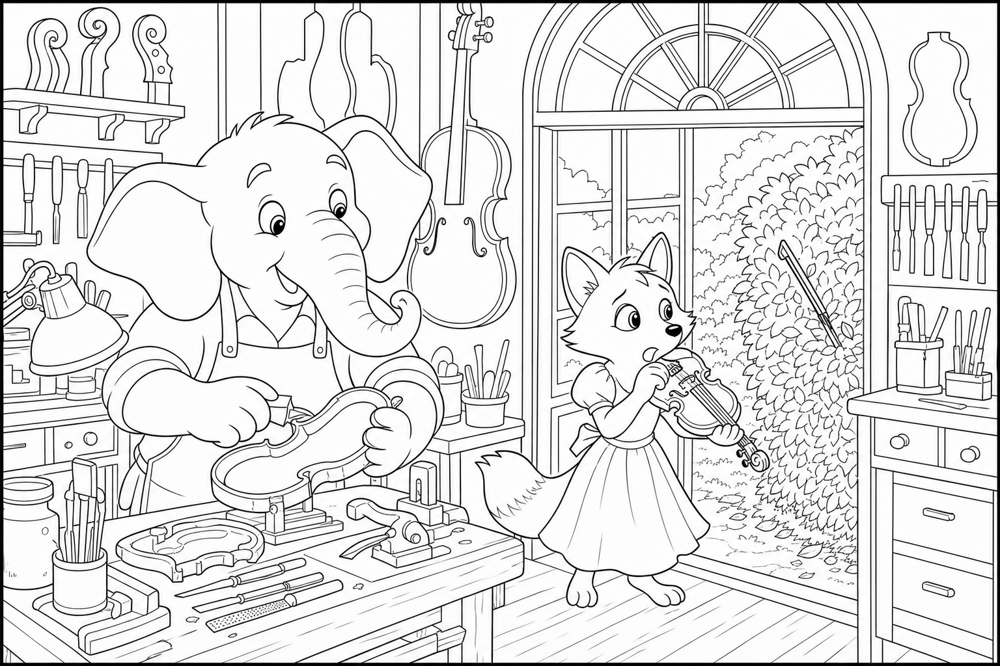
Cerca questa immagine in fondo al libro per colorarla come preferisci. Ricorda: le foglie verdi che vibrano come arpa e le corde nuove della campanella.
C'era una volta un Elefante di nome Franco, che gli amici chiamavano ... EleFranco. Di cognome faceva Franchini. Abitava nella sua accogliente casa nel paesino di FrancaVilla, un borgo musicale dove dalle botteghe uscivano note di violino al mattino, i vicoli odoravano di legno di cedro e ogni casa aveva una campanella a vento che salutava il vento con un tintinnio gentile.
Era un pomeriggio ventilato e EleFranco ascoltò il silenzio del giardino: «La mia campanella a vento non suona più! Devo andare dal liutaio a prendere corde di ricambio.» Toccò il metallo muto. «Senza musica, il giardino è triste.»
Si infilò le sue stivali giganti color mogano, prese la campanella rotta e uscì verso il laboratorio. La strada risuonava di passi: THUMP THUMP THUMP Davanti alla porta del liutaio, sentì un lamento melodioso. Viola la Volpe Rossa — elegante, con un fiocco viola all'orecchio — tirava un ramo ma senza successo. «EleFranco!
Il mio archetto è incastrato nella siepe! Stasera c'è il concerto in piazza e senza archetto non posso suonare. Ho tirato troppo forte e ora la siepe non molla!» EleFranco guardò la siepe.
Poi la campanella. Poi di nuovo Viola. «Non ti preoccupare, Viola. Lo liberiamo.»
Ma mentre afferrava i rami, la mente cominciò a vagare: che suono avrebbe fatto la campanella nuova? Acuto o grave? E se il liutaio avesse anche un arpa miniatura? Stava quasi per tirare con tutte le sue forze quando Viola gridò: «EleFranco, l'archetto si piega!»
Allora l'elefante scosse le grandi orecchie e disse ad alta voce la sua parola magica: "FOCUS!"«Piano, Viola. La musica nasce con dolcezza, non con forza.» Invece di strappare, EleFranco piegò piano i rami uno alla volta con la proboscide. Viola contava i secondi: «Uno... due... piano...»
Ma un ramo secco si staccò e, tirandolo, scosse tutta la siepe. Una pioggia di foglie verdi cadde sulla strada, sui tetti, sul cappello del liutaio che usciva in quel momento. «Ops,» disse EleFranco, con una foglia sulla proboscide. «Sembro un albero che cammina.»
Viola si fermò e ascoltò. «Aspetta... senti?» Il vento tra le foglie cadute vibrava sul selciato come corde di un'arpa improvvisata, producendo un suono chiaro e dolce che indicava esattamente dove l'archetto era nascosto. «Sentite?» sussurrò il liutaio, uscendo dalla porta.
«La siepe ci sta guidando.» Seguirono la melodia del vento fino a un cespuglio basso: l'archetto era lì, solo un po' graffiato ma salvo. Viola lo baciò come fosse un tesoro. «Prometto di non tirare più troppo forte,» disse, con gli occhi lucidi.
Il liutaio riparò la campanella di EleFranco con corde nuove e regalò un set di ricambio a Viola. «Per la volpe che ha imparato a non tirare troppo forte.» Quella sera, in piazza, il concerto suonò più dolce del solito — e la campanella nel giardino di EleFranco rispose al vento con un tintinnio felice, come se applaudisse dal balcone. La missione era compiuta: campanella che suona, concerto salvato, siepe perdonata.
EleFranco capì allora la morale di quella giornata: La musica nasce quando smettiamo di tirare troppo forte. 🎵
EleFranco ascoltò il tintinnio e scoppiò nella sua famosa risata: OH... OH... OH...
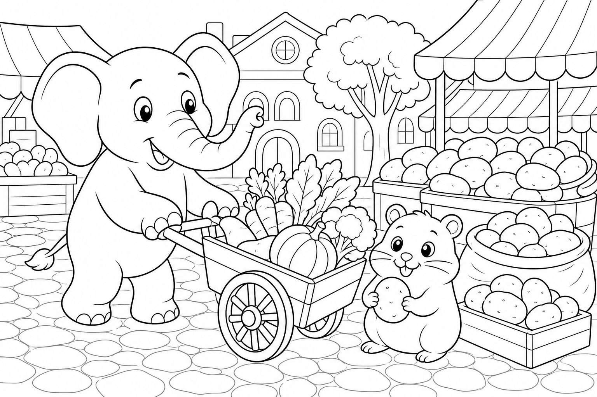
Cerca questa immagine in fondo al libro per colorarla come preferisci. Ricorda: le patate marroni grosse e la ruota del carretto nel fango.
C'era una volta un Elefante di nome Franco, che gli amici chiamavano ... EleFranco. Di cognome faceva Franchini. Abitava nella sua accogliente casa nel paesino di FrancaVilla, un borgo di mercato dove la piazza si riempiva ogni domenica di banchi colorati, l'aria profumava di pane e terra fresca e i contadini chiamavano i prezzi con voci allegre come campanelli.
Era domenica mattina e EleFranco aveva fame di minestra: «Devo comprare patate grosse al mercato per il pranzo domenicale!» Guardò la pentola vuota. «Senza patate, la minestra non è minestra.» Si infilò le sue scarpe giganti da mercato, con la suola robusta, prese un sacco di juta e uscì verso la piazza.
Il selciato tremava di vita: THUMP THUMP THUMP Al banco delle verdure, trovò Patata il Marmorino — un criceto dal pelo dorato e dalle guance piene — che spingeva un carretto traballante senza successo. «EleFranco!» ansimò. «La ruota è incastrata nella buca! Ho patate per tutto il paese ma non arrivo al banco!
Se non consegno, la minestra domenicale di tanti vicini resta senza ingrediente.» EleFranco guardò la ruota bloccata. Poi il sacco vuoto. Poi di nuovo Patata.
«Non ti preoccupare, Patata. Spingiamo insieme.» Ma mentre metteva le zampe al carretto, la mente cominciò a vagare: quante patate avrebbe comprato? Con la buccia o pelate?
E se ci fosse anche del prezzemolo? Stava quasi per spingere a tutta velocità quando Patata gridò: «EleFranco, la ruota geme!» Allora l'elefante scosse le grandi orecchie e disse ad alta voce la sua parola magica: "FOCUS!"«Piano, Patata. Spingere gli altri richiede anche saper fermarsi.»
Cominciò a spingere con ritmo costante, non troppo forte. Patata guidava: «A destra... fermo... ancora un po'!» Il carretto avanzò — ma la ruota vecchia, stanca, cedette all'improvviso e si staccò, rotolando giù per la strada come un cerchio impazzito. «Ops,» disse EleFranco, fermo a metà strada.
«Sembro un carretto senza ruote.» Patata si sedette, sconsolato. «Ora non ho né ruota né speranza.» Ma EleFranco non mollò: inseguì la ruota con passi misurati, senza correre troppo, chiamando: «Fermati, ruota gentile!
Abbiamo una buca da riparare!» La ruota rotolò fino a una buca profonda nel selciato — proprio quella che aveva bloccato il carretto — e vi si incastrò perfettamente, tappando il buco come un tappo di sughero. Il mercante di patate, un capibara dal grembiule a righe, arrivò applaudendo. «Quella buca dava fastidio da settimane!
Ogni carretto faceva bump-bump!» Sollevò la ruota — ora libera — e la sostituì con un'asse nuova sul carretto di Patata. Poi riempì il sacco di EleFranco con le patate più grosse del banco, rotonde come piccole lune. «Per l'elefante che sa fermarsi al momento giusto.»
Patata ripartì con il carretto rinnovato, fischiando una melodia. «La minestra domenicale di tutti è salva!» gridò ai clienti, che risposero con un coro di grazie dal mercato intero. La missione era compiuta: minestra assicurata, strada riparata, carretto rinnovato.
EleFranco capì allora la morale di quella giornata: Spingere gli altri richiede anche saper fermarsi. 🛑
EleFranco sollevò il sacco e scoppiò nella sua famosa risata: OH... OH... OH... Il mercato intero rise con lui, e domenica sapeva di patate e di amicizia.

Cerca questa immagine in fondo al libro per colorarla come preferisci. Ricorda: le macchie arcobaleno luminose sul ciuffo e sulle scale bagnate.
C'era una volta un Elefante di nome Franco, che gli amici chiamavano ... EleFranco. Di cognome faceva Franchini. Abitava nella sua accogliente casa nel paesino di FrancaVilla, un borgo dopo-temporale dove le pozzanghere riflettevano il cielo come specchi rotti, l'aria era fresca e pulita e ogni vicolo sembrava lavato da una mano gigante e gentile.
Era il pomeriggio dopo un acquazzone e EleFranco guardò l'ombrello storto nell'angolo: «L'ombrello è rotto! Devo portarlo dal riparatore prima che arrivi un altro acquazzone.» Guardò le nuvole che si aprivano. «Senza ombrello, finisco fradicio.»
Si infilò le sue ciabatte giganti antiscivolo, prese l'ombrello piegato e uscì per le scale del vicolo. L'acqua scrosciava ancora nelle grondaie: THUMP THUMP THUMP Sulle scale di pietra, lucide come vetro, c'era una piccola lucertola dai colori dell'arcobaleno — rosso, arancio, giallo, verde, blu — che tentava di salire ma scivolava a ogni passo. «EleFranco...» sussurrò. «Sono Iris Arcobaleno.
Dopo il temporale le scale sono un toboga! La mia tana è in cima, dove il muro riflette l'arcobaleno, ma non ci arrivo.» EleFranco guardò le scale scivolose. Poi l'ombrello rotto.
Poi di nuovo Iris. «Non ti preoccupare, Iris. Ti aiuto a salire.» Ma mentre stendeva un telo grande per asciugare i gradini, la mente cominciò a vagare: quanto costava riparare l'ombrello?
Con manico di legno o pieghevole? E se il sole fosse uscito per sempre? Stava quasi per scivolare lui stesso quando Iris gridò: «EleFranco, attento al terzo gradino!» Allora l'elefante scosse le grandi orecchie e disse ad alta voce la sua parola magica: "FOCUS!"«Piano, Iris.
Un gradino alla volta.» Asciugò le scale con il telo, spingendo via l'acqua gradino per gradino. Iris lo incoraggiava: «Ancora due! Poi vedo la mia porta!»
Ma le pozzanghere residue catturarono la luce del sole che usciva dalle nuvole, e riflessi arcobaleno salirono lungo le gambe di EleFranco, colorarono la proboscide e gli posero macchie luminose sul ciuffo nero. «Ops,» disse EleFranco, guardandosi. «Sembro un arcobaleno ambulante.» Iris però rise — un piccolo suono cristallino.
«Sei bellissimo! Guarda il tuo ciuffo!» I bambini del vicolo si affacciarono alle finestre. «Un arcobaleno che cammina!» gridarono, battendo le mani.
Le gocce rimaste sul ciuffo di EleFranco, illuminate dal sole, creavano un mini-arcobaleno perfetto nell'aria — un ponte di luce che andava dalle scale fino al muro in cima. Iris lo seguì, passo dopo passo, lungo il ponte di gocce, fino alla tana calda dietro il riflesso colorato. «Qui sento l'arcobaleno anche con gli occhi chiusi,» sussurrò. Il riparatore, un gatto anziano con gli occhiali, uscì dal laboratorio e rise.
«Con un arcobaleno così, chi ha bisogno di ombrello?» Restituì l'ombrello — riparato gratis — ma EleFranco lo tenne chiuso: il cielo era sereno e Iris era a casa. «Per la prossima pioggia,» disse, «ma oggi bastano le gocce sul ciuffo e il sorriso degli amici.» La missione era compiuta: amica al sicuro, arcobaleno nel cielo, ombrello pronto per la prossima pioggia.
EleFranco capì allora la morale di quella giornata: Dopo la pioggia c'è sempre un motivo per sorridere. 🌦
EleFranco guardò il mini-arcobaleno e scoppiò nella sua famosa risata: OH... OH... OH...
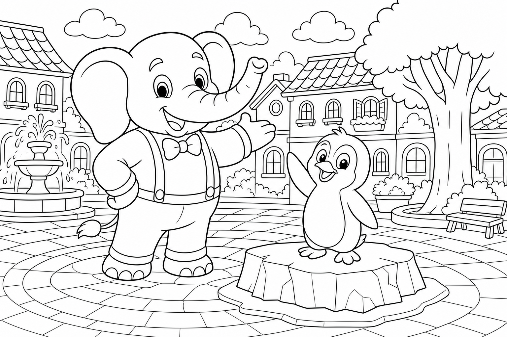
Cerca questa immagine in fondo al libro per colorarla come preferisci. Ricorda: il ghiaccio scolpito a forma di EleFranco e i cubetti nel secchio.
C'era una volta un Elefante di nome Franco, che gli amici chiamavano ... EleFranco. Di cognome faceva Franchini. Abitava nella sua accogliente casa nel paesino di FrancaVilla, un borgo estivo con una ghiacciaia di pietra grigia in piazza, dove il vapore freddo usciva ogni mattina come nebbia leggera e i bambini si fermavano a guardare i blocchi lucenti come diamanti.
Era un pomeriggio caldo e EleFranco aveva sete di qualcosa di gelato: «Devo andare alla ghiacciaia a prendere cubetti per il mio frullato, prima che si sciolgano al sole!» Guardò il termometro. «Senza ghiaccio, il frullato è zuppa tiepida.» Si infilò le sue scarpe giganti estive, prese un secchio termico e uscì verso la piazza.
Il calore tremolava sull'asfalto: THUMP THUMP THUMP Davanti alla ghiacciaia, trovò Ping il Pinguino Viaggiatore — con il piccolo zaino e la sciarpa a righe — che scivolava sul selciato senza controllo. «EleFranco!» chiamò, agitando le ali corte. «Sono in visita da paesi lontani! Il circo del nord mi ha lasciato qui per sbaglio e mi piace tantissimo, ma un blocco di ghiaccio è caduto dal carretto e si è incollato al pavimento.
Ogni volta che provo a camminare, scivolo!» EleFranco guardò il blocco lucente. Poi il secchio. Poi di nuovo Ping.
«Non ti preoccupare, Ping. Ti diamo il benvenuto.» Ma mentre si chinava sul ghiaccio, la mente cominciò a vagare: che frullato avrebbe fatto? Fragola o pesca?
E se Ping volesse restare a FrancaVilla? Stava quasi per soffiare troppo forte quando Ping gridò: «EleFranco, sto andando verso la fontana!» Allora l'elefante scosse le grandi orecchie e disse ad alta voce la sua parola magica: "FOCUS!"«Piano, Ping. L'accoglienza scalda più di qualsiasi stufa.»
Soffiò con un alito gentile sul bordo del ghiaccio per staccarlo dal selciato. Il blocco si mosse — ma l'acqua scioltasi creò uno specchio di ghiaccio sulla piazza. EleFranco fece un passo e scivolò. Un altro passo, ancora scivolò.
«Ops,» disse, con le zampe all'aria. «Sembro un pattinatore alle prime armi.» Ping rise, ma era ancora bloccato. «Non lasciarmi, EleFranco!»
Allora EleFranco si fermò — ricordando la lezione di fermarsi al momento giusto — e si sedette piano, distribuendo il peso. Il ghiaccio sotto di lui, riscaldato con calma, iniziò a modellarsi come argilla fredda. Quando il ghiacciaio uscì con il grembiale, trovò un blocco scolpito a forma di EleFranco — piccolo monumento di ghiaccio — e Ping libero accanto, che faceva un inchino goffo. «Per il pinguino in visita e l'elefante accogliente!» esclamò.
Riempì il secchio di cubetti e preparò due frullati freschi, uno per EleFranco e uno per Ping, con menta dal vaso sul davanzale. Ping alzò il bicchiere. «A FrancaVilla — il paese dove anche il ghiaccio diventa amico!» E il ghiacciaio annuì, già pronto a ospitarlo ancora, con una stanza fresca e un piatto di pesce immaginario.
La missione era compiuta: frullato gelato, Ping libero, scultura di ghiaccio che splendeva al sole.
EleFranco capì allora la morale di quella giornata: L'accoglienza scalda più di qualsiasi stufa. 🏠
EleFranco brindò con Ping e scoppiò nella sua famosa risata: OH... OH... OH... Il cubetto scolpito brillò un ultimo momento al sole, come un saluto ghiacciato.
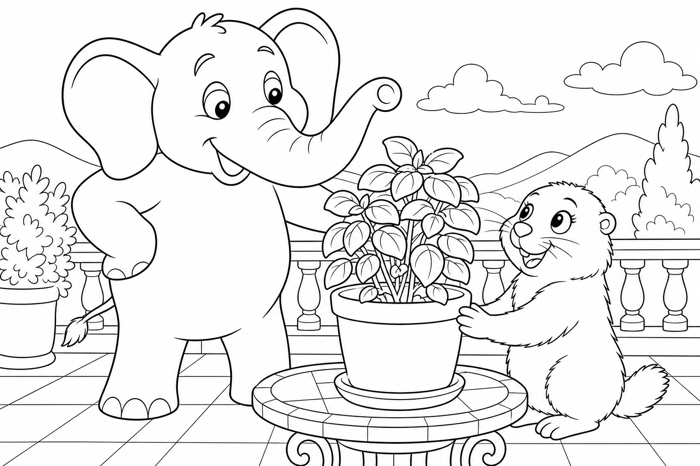
Cerca questa immagine in fondo al libro per colorarla come preferisci. Ricorda: il basilico verde profumato e la terra marrone fertile.
C'era una volta un Elefante di nome Franco, che gli amici chiamavano ... EleFranco. Di cognome faceva Franchini. Abitava nella sua accogliente casa nel paesino di FrancaVilla, un borgo verde con terrazze piene di vasi, dove le scale esterne saliva verso un vivaio profumato di terra umida e foglie fresche, e ogni mattina qualcuno annaffiava piante come se fossero amici silenziosi.
Era una mattina luminosa e EleFranco voleva profumo in cucina: «Devo comprare un vaso di basilico per il mio terrazzo, prima che chiuda il vivaio!» Annusò l'aria. «Senza basilico, la pasta è senza sorriso.» Si infilò le sue ciabatte giganti da giardino, con la suola che non sporca, prese un guanto di lana e salì le scale esterne.
I gradini tremavano piano: THUMP THUMP THUMP Sul terrazzo del vivaio, trovò Mirta la Marmotta — con il grembiule verde e le unghie sporche di terra buona — in piedi accanto a una fioriera penzolante. «EleFranco, che mattina complicata!» sospirò. «Il mio tunnel sotto il vaso grande ha fatto cedere il bordo del terrazzo. La fioriera è pericolosa: se cade, va sul marciapiede dove passano i bambini!
Ho bisogno di reggere il vaso mentre sistemo il supporto, ma è troppo pesante per le mie zampe.» EleFranco guardò la fioriera instabile. Poi il vivaio. Poi di nuovo Mirta.
«Non ti preoccupare, Mirta. Condividiamo il lavoro.» Ma mentre sollevava il vaso, la mente cominciò a vagare: quanto basilico avrebbe colto? Per pesto o per insalata?
E se il vivaio avesse anche del timo profumato? Stava quasi per distogliere lo sguardo quando Mirta gridò: «EleFranco, il vaso pende a sinistra!» Allora l'elefante scosse le grandi orecchie e disse ad alta voce la sua parola magica: "FOCUS!"«Piano, Mirta. Chi condivide il proprio spazio fa crescere l'amicizia.»
Reggeva il vaso pesante con la proboscide, fermo come una colonna. Mirta, sotto, rinforzava il supporto di legno e aggiustava il tunnel con pietre piatte, mormorando: «Così non crolla più, piccoli amici sotto terra.» Ma un po' di terra — quella buona, scura, fertile — caddde dal bordo e atterrò sul marciapiede sotto, formando un mucchio marrone improvviso. «Ops,» disse EleFranco, senza muoversi.
«Sembro un giardiniere che ha sputato terra.» Mirta rise sotto il vaso. «Terra non sprecata! Guarda laggiù.»
Sotto il terrazzo, una famiglia di passeri osservava il mucchio. «È perfetto per il nostro nido!» cinguettarono. Il mucchio era caduto proprio in una buca del marciapiede che dava fastidio da mesi. La terra fertile la riempì come un cuscino naturale.
Terminato il lavoro, la fioriera era sicura. Il vaso di basilico — raddoppiato di foglie per la gratitudine, o forse per il sole — profumava intensamente. Il vivaista, una lontra anziana con il cappello di paglia, regalò un secondo vaso a EleFranco. «Uno per il pesto, uno per l'amicizia.»
Mirta gli strinse la zampa. «Vieni a vedere i germogli quando crescono. Il terrazzo è anche tuo.» La missione era compiuta: terrazzo profumato, fioriera sicura, buca riempita.
EleFranco capì allora la morale di quella giornata: Chi condivide il proprio spazio fa crescere l'amicizia. 🪴
EleFranco annusò il basilico e scoppiò nella sua famosa risata: OH... OH... OH...
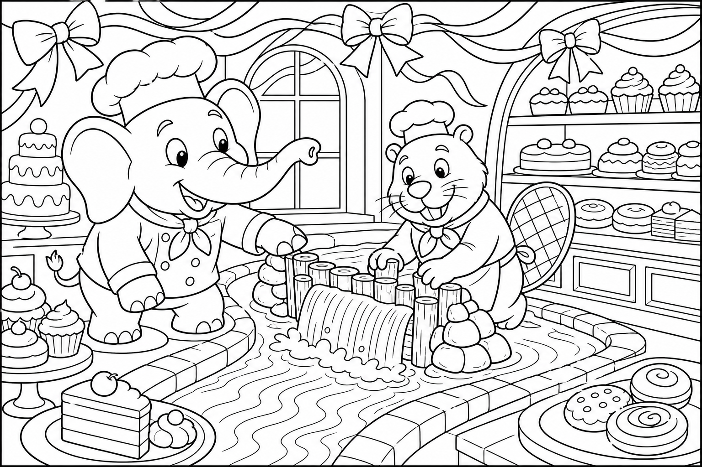
Cerca questa immagine in fondo al libro per colorarla come preferisci. Ricorda: i festoni colorati e la nebbiolina dolce del forno.
C'era una volta un Elefante di nome Franco, che gli amici chiamavano ... EleFranco. Di cognome faceva Franchini. Abitava nella sua accogliente casa nel paesino di FrancaVilla, un borgo profumato di vaniglia e burro fuso, dove i tetti sembravano coperti di zucchero filato, le finestre delle botteghe dolci brillavano come vetrine di caramelle e ogni vicolo sapeva di croissant appena sfornati.
Era un mattino di sole dorato e EleFranco aveva un impegno importante: «Devo andare subito da Clara la Pasticciera a prendere festoni e nastri per la Grande Festa di FrancaVilla! Senza decorazioni, la piazza resterebbe triste.» Si calzò le sue scarpe giganti da chef, bianche e con la suola antiscivolo color crema, prese un sacco di carta e uscì di casa. Lungo la strada dei profumi il selciato tremava piano: THUMP THUMP THUMP Arrivato all'angolo della pasticceria, sentì un piccolo SPLASH e vide un castoro dalla pelliccia lucida correre avanti e indietro con un grembiule di farina.
Era Bruno il Castoro — lo stesso amico che una volta si chiamava Fred, il più bravo costruttore di dighe di tutta FrancaVilla. «EleFranco, che disastro!» gemette. «Volevo deviare un filo d'acqua per pulire i tronchi del laboratorio, ma la mia mini diga ha ceduto! Se l'acqua entra nell'impastatrice, Clara non potrà fare i dolci per la Festa!»
EleFranco posò il sacco e guardò il canale stretto accanto al forno. «Non ti preoccupare, Bruno. Insieme la sistemiamo.» Ma mentre cominciava a tappare la falla con rametti e fango, la mente cominciò a vagare: pensò ai festoni rossi o dorati, ai nastri a pois, a quanti pasticcini avrebbe assaggiato per «controllare la qualità».
Stava quasi per perdere il controllo quando Bruno gridò: «EleFranco, l'acqua sta entrando nel forno!» Allora l'elefante scosse le grandi orecchie e disse ad alta voce la sua parola magica: "FOCUS!"«Piano, Bruno. Una diga si costruisce un pezzo alla volta.» Spinse il fango con cura, ma — ops — fu un po' troppo zelante: l'acqua deviò di colpo verso la vasca dell'impastatrice, traboccò sul pavimento bianco e formò una piccola pozza zuccherina ai piedi dell'elefante.
«Ora sembro un elefante in pantofole di glassa!» disse EleFranco, scivolando leggermente. Proprio in quel momento Clara la Pasticciera spalancò la porta del forno. Invece di arrabbiarsi, alzò le mani per la meraviglia: il vapore caldo uscito dal forno aveva incontrato l'umidità della vasca, creando una nebbiolina profumata che avvolgeva i dolci in lievitazione e li faceva gonfiare dorati e perfetti, come piccole nuvole di Festa. «Non l'ho mai ottenuta così!» esclamò Clara.
«Bruno, EleFranco, siete due maghi del forno!» Lei riempì le zampe di Bruno con festoni di carta colorata e nastri arancioni, e porse a EleFranco una scatola di pasticcini caldi legata con un fiocco. «Per la Grande Festa — e per l'amico che torna sempre quando serve.» Bruno sorrise mostrando i denti color avorio.
«Ti ricordi la diga sul fiume, EleFranco? Oggi è una mini diga, ma il cuore è lo stesso.» La missione era compiuta senza nemmeno aprire il portafoglio: i festoni erano lì, profumati e gratis, e la pasticceria era di nuovo sicura.
EleFranco capì allora la morale di quella giornata: Rivedere un amico è come ritrovare casa. 🤝
EleFranco abbracciò con la proboscide il vecchio amico castoro e scoppiò nella sua famosa risata: OH... OH... OH...

Cerca questa immagine in fondo al libro per colorarla come preferisci. Ricorda: le uova chiare nel cesto e il calore dorato del tramonto.
C'era una volta un Elefante di nome Franco, che gli amici chiamavano ... EleFranco. Di cognome faceva Franchini. Abitava nella sua accogliente casa nel paesino di FrancaVilla, un borgo arroccato su colline morbide, dove i sentieri salivano a spirale come chioccioline di luce, le case avevano tetti a punta che sfioravano le nuvole basse e la sera profumava di timo e stelle non ancora accese.
Era un pomeriggio ventoso e EleFranco aveva un impegno preciso: «Devo restituire il binocolo al signor Orso l'Astronomo prima che il sentiero di collina diventi un buio pesto!» Si infilò i suoi stivali giganti da escursionista, con la suola a nubecita antiscivolo, avvolse il binocolo in un fazzoletto e uscì di casa. La collina tremava piano sotto i passi generosi: THUMP THUMP THUMP A metà salita, un piccolo fischio triste lo fermò. Sotto un cespuglio di rosmarino c'era Stella la Civetta, giovane e coraggiosa, ma con le piume arruffate dal panico.
Accanto a lei, un cesto di vimini era rovesciato e tre uova chiare tremavano nel freddo del vento. «EleFranco, aiuto!» sussurrò. «Papà sta cercando un ramo nuovo, ma il nido è volato via con la raffica e le uova si raffreddano! Se non le scaldo, non sentirò mai il piccolo che fa pip-pip!»
EleFranco posò il binocolo e guardò le uova. «Non ti preoccupare, Stella. Le teniamo al caldo.» Ma mentre apriva le orecchie grandi come due tende morbide per coprire il cesto, la mente cominciò a vagare: pensò al binocolo in ritardo, al tè caldo che lo aspettava a casa, a quante stelle avrebbe contato quella notte.
Stava quasi per sbadigliare quando una uova rotolò di un millimetro: Stella gemette. Allora l'elefante scosse le grandi orecchie — piano, per non spaventare le uova — e disse ad alta voce la sua parola magica: "FOCUS!"«Silenzio, Stella. Il calore passa anche attraverso le orecchie che ascoltano.» Rimase immobile, coperta vivente sul cesto.
Il vento cantava, il sole scendeva, e il caldo delle orecchie avvolse le uova come una coperta di lana. Ma era così silenzioso, così caldo, così profumato di timo che le palpebre di EleFranco diventarono pesanti come sassi di fiume. «Zzz... solo un occhio chiuso...» mormorò, sbandando leggermente verso destra. Stella lo sostenne con un'ala: «Non mollare, EleFranco!
Mancano pochi minuti!» Proprio in quel momento, un raggio dell'alba — no, era ancora tramonto — anzi, il sole stava tornando sopra il crinale in un ultimo saluto arancione. Il calore rafforzò le uova sotto le orecchie, e un piccolo crepitio felice rispose dal cesto. Papà Civetta arrivò con un nido nuovo già intrecciato su un ramo basso e sicuro.
«Le hai salvate!» esclamò. EleFranco, svegliandosi di soprassalto, fece cadere il binocolo che rotolò fino a puntare dritto verso il ramo nuovo: dentro si vedevano già le uova al sicuro, coperte di piume morbide. La missione era compiuta senza nemmeno salire fino all'osservatorio: il binocolo era stato «restituito» mostrando la famiglia salva, e Orso l'Astronomo, arrivato di corsa, rise e disse che era la restituzione più bella del mondo.
EleFranco capì allora la morale di quella giornata: Proteggere la vita fragile chiede silenzio e pazienza. 🥚
EleFranco guardò Stella che faceva l'occhiolino e scoppiò nella sua famosa risata: OH... OH... OH...
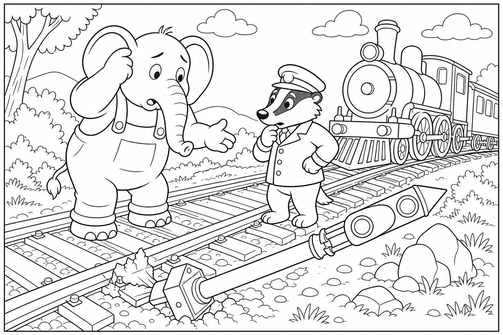
Cerca questa immagine in fondo al libro per colorarla come preferisci. Ricorda: il segnale rosso e il biglietto d'oro timbrato.
C'era una volta un Elefante di nome Franco, che gli amici chiamavano ... EleFranco. Di cognome faceva Franchini. Abitava nella sua accogliente casa nel paesino di FrancaVilla, un borgo con una piccola stazione di mattoni rossi, dove il vapore dei treni disegnava nuvole bianche sopra i binari lucenti, i cartelli di legno scricchiolavano al vento e l'aria sapeva di carbone caldo e biglietti di carta spessa.
Era un tardo pomeriggio e EleFranco aveva un treno da non perdere: «Devo comprare il biglietto per andare dalla zia fuori paese! Se parto tardi, mi perdo la torta di mele che mi prepara ogni volta.» Si calzò i suoi stivali giganti da viaggiatore, marroni e con la fibbia lucida, prese la borsa e uscì di casa. Il marciapiede della stazione tremava piano: THUMP THUMP THUMP Appena arrivato sotto la pensilina, vide un tasso piccolo ma determinato correre lungo i binari con un cappello da capostazione troppo grande per la testa.
Era Treno il Tasso Ferroviere, il più ordinato di tutti i controllori di FrancaVilla, e quella sera era bianco in viso. «EleFranco, ferma tutto!» gridò. «Il segnale rosso è caduto sui binari e il tabellone non si accende! Se non sistemiamo la linea, nessun treno può partire — neanche il tuo!»
EleFranco posò la borsa e guardò il segnale pesante di metallo. «Non ti preoccupare, Treno. Lo rimetiamo dritto.» Ma mentre avvicinava la proboscide al palo, la mente cominciò a vagare: pensò alla zia, al biglietto da timbrare, al fischio del treno che annuncia la partenza — quel fischio così emozionante!
Stava quasi per tirare il segnale senza guardare sotto quando Treno urlò: «Attento, c'è qualcosa che non va nel binario!» Allora l'elefante scosse le grandi orecchie e disse ad alta voce la sua parola magica: "FOCUS!"«Prima guardo, poi sollevo.» Con un movimento lento sollevò il segnale rosso e lo riappoggiò nel suo posto. Ma la proboscide, sfiorando il cordino del fischio di prova, tirò per sbaglio: FIEEEEEEEE!
Un suono assordante rimbombò in stazione. I viaggiatori saltarono, un gatto d'attico si arrampicò su un lampione e persino le valigie sembrarono tremare. «Ops,» disse EleFranco coprendosi le orecchie con le zampe. «Quello sì che era un fischio!»
Treno però non rise subito: guardava a terra, dove l'ombra del segnale appena rialzato aveva rivelato una traversina allentata e un chiodo storto che nessuno aveva visto prima. «Ecco il vero problema!» esclamò. «Se il treno fosse passato così, avrebbe tremato tutto!» Operai e viaggiatori si misero al lavoro.
Treno passò a EleFranco un martello piccolo e un chiodo nuovo; un coniglietto viaggiatore tenne la luce, una mamma anatra allontanò i pulcini dal binario. In pochi minuti la traversina fu salda, il tabellone si accese con il nome della stazione della zia e il bigliettero porse a EleFranco un biglietto d'oro senza fila: «Per chi sistema la strada agli altri, il viaggio è in regalo.» Treno raddrizzò il cappello da capostazione e sussurrò: «Grazie, EleFranco. Ogni viaggio comincia così: con un aiuto.»
La missione era compiuta senza nemmeno aprire il portafoglio: il biglietto era lì, timbrato e gratis, e la linea era di nuovo sicura.
EleFranco capì allora la morale di quella giornata: Ogni viaggio comincia sistemando la strada agli altri. 🚂
EleFranco salutò Treno col cappello storto e scoppiò nella sua famosa risata: OH... OH... OH...


Cerca questa immagine in fondo al libro per colorarla come preferisci. Ricorda: le alghe verdi sotto i tronchi e il cesto nuovo di salice.
C'era una volta un Elefante di nome Franco, che gli amici chiamavano ... EleFranco. Di cognome faceva Franchini. Abitava nella sua accogliente casa nel paesino di FrancaVilla, un borgo ai margini di un bosco profumato di muschio e pinoli, dove i funghi crescevano come ombrellini gentili sotto le felci, i ruscelli cantavano basso tra le radici e la nebbia mattutina sembrava vapore di zuppa calda.
Era una mattina umida e EleFranco aveva una commissione semplice: «Devo andare dal cestaio a prendere un cesto nuovo per raccogliere i funghi! Il vecchio ha le stecche storte e la pioggia di stanotte l'ha lasciato molle.» Si calzò i suoi stivali giganti da bosco, verdi e con la suola a rilievi di foglia, prese il vecchio cesto malconcio e uscì di casa. Il sentiero di terra morbida tremava piano: THUMP THUMP THUMP Arrivato al ruscello che tagliava il bosco, vide un capibara rotondo e pacifico seduto sulla riva con le zampe in acqua.
Era Fungo il Capibara, calmo come una pietra liscia, ma quella mattina sospirava forte. «EleFranco, che pasticcio,» mormorò. «Il ponte di tronchi è allagato e scivoloso. Devo portare le erbe aromatiche dall'altra parte per la minestra del bosco, ma ogni volta scivolo e finisco con le quattro zampe in aria!»
EleFranco posò il cesto e guardò i tronchi galleggianti. «Non ti preoccupare, Fungo. Attraverso io per primo e ti faccio vedere dove mettere i piedi.» Ma mentre metteva un piede sul primo tronco, la mente cominciò a vagare: pensò ai funghi porcini, al cesto nuovo intrecciato, al profumo di zuppa che avrebbe riempito la casa.
Stava quasi per fare un passo lungo quando il tronco scricchiolò sinistro. Allora l'elefante scosse le grandi orecchie e disse ad alta voce la sua parola magica: "FOCUS!"«Piano, EleFranco. Un ponte si prova un passo alla volta.» Si spostò con cura, ma era pesante e generoso: i tronchi affondarono, l'acqua salì e un getto di fango gentile spruzzò su entrambe le rive, imbrattando foglie, muso del capibara e persino il ciuffo nero dell'elefante.
«Ops,» disse EleFranco. «Ora sembriamo due pan di spagna al cacao.» Fungo però notò qualcosa: delle alghe verdi, staccate dal fondo, erano rimaste appese alle zanne dell'elefante e galleggiavano ora sotto i tronchi come piccoli cuscini antiscivolo. «Guarda!» esclamò.
«Hai creato dei salvagente naturali!» Uno dopo l'altro, gli animali del bosco attraversarono sulle alghe morbide: prima un rosso pettirosso con un ramoscello, poi due ricci con le mele, poi Fungo stesso con le erbe aromatiche in equilibrio perfetto sulla schiena rotonda. Il cestaio, arrivato di corsa con un ombrello di foglie, regalò a EleFranco un cesto nuovo impermeabile intrecciato con salice lucido, grande abbastanza per cento funghi e profumato di resina. «Per chi rende sicuro il cammino degli altri,» disse, «il cesto è in regalo.
E guarda: il fango sul tuo ciuffo sembra un cappello da raccoglitore professionista!» La missione era compiuta senza nemmeno contare le monete: il cesto era lì, profumato di bosco e gratis, e il ponte era di nuovo sicuro.
EleFranco capì allora la morale di quella giornata: Chi va piano sul ponte lo rende sicuro per tutti. 🌉
EleFranco raccolse un fungo rosso come regalo per Fungo, se lo mise nel cesto nuovo e scoppiò nella sua famosa risata: OH... OH... OH...
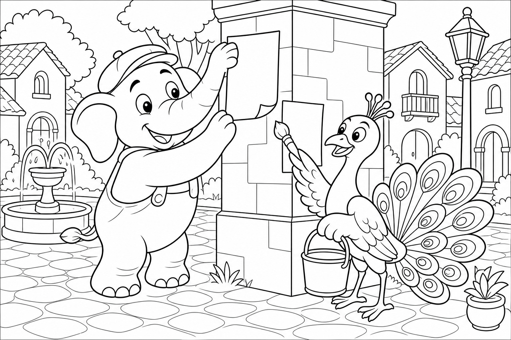
Cerca questa immagine in fondo al libro per colorarla come preferisci. Ricorda: le macchie di vernice rossa, gialla e blu sul selciato.
C'era una volta un Elefante di nome Franco, che gli amici chiamavano ... EleFranco. Di cognome faceva Franchini. Abitava nella sua accogliente casa nel paesino di FrancaVilla, un borgo vivace di piazza grande, dove le botteghe avevano insegne dipinte a mano, le fontane gocciolavano ritmo lento sui ciottoli e l'aria sapeva di tempera fresca e carta appena stampata.
Era un mattino di sole e EleFranco aveva fretta: «Devo andare in tipografia a ritirare i manifesti per la Festa di FrancaVilla! Se chiudono le botteghe, resteremo senza inviti.» Si calzò le sue ciabatte giganti da artista, macchiate di colori pastello ma comode, prese una cartella e uscì di casa. La piazza tremava piano sotto i passi generosi: THUMP THUMP THUMP In mezzo alla piazza, un pavone dalle piume splendenti tentava di tirare la coda fuori da un secchio di vernice.
Era Pennello il Pavone, il più creativo di FrancaVilla, e quella mattina era arruffato come un pennello usato troppo. «EleFranco, aiuto!» gridò. «Stavo preparando gli striscioni per la Festa e le mie piume sono incollate nella vernice! Se non le libero, la piazza resterà senza colori!»
EleFranco posò la cartella e guardò il secchio. «Non ti preoccupare, Pennello. Mescoliamo la vernice e ti liberiamo.» Ma mentre girava la vernice con la proboscide per renderla più liquida, la mente cominciò a vagare: pensò ai manifesti da piegare, ai manifesti da appendere, a quanti colori avrebbe visto sulla carta stampata.
Stava quasi per mescolare troppo forte quando Pennello gridò: «Attento, sta per volare!» Allora l'elefante scosse le grandi orecchie e disse ad alta voce la sua parola magica: "FOCUS!"«Piano, Pennello. I colori si sciolgono con gentilezza.» Diede un colpo di proboscide un po' troppo entusiasta: la vernice rossa, gialla e blu schizzò in archi felici sui ciottoli, sulle scale della tipografia e persino sulla base della fontana centrale.
«Ops,» disse EleFranco guardando la piazza macchiata. «Ora sembra un tappeto di confetti giganti.» Ma i bambini del paese, usciti dalle botteghe, cominciarono a saltare da una macchia all'altra gridando: «Guardate! Forma un elefante!»
E avevano ragione: le macchie sul selciato, viste dall'alto del campanile, disegnavano un murale gigante di EleFranco sorridente con la proboscide alzata. Pennello, finalmente libero, spiegò le piume color vernice e le passò sulla carta: i colori si fusero in un manifesto ancora più bello del previsto. Il tipografo uscì con una pila di manifesti stampati — uno per ogni amico del paese — e li porse gratis: «Per l'artista che ha dipinto la piazza senza volerlo.» Pennello spiegò le piume ancora macchiate di rosso e blu e le passò sulla carta come pennelli viventi: ogni manifesto uscì diverso, unico, con una striatura iridescente che nessuna macchina avrebbe saputo copiare.
I commercianti della piazza portarono sedie e limonata; i bambini disegnarono contorni intorno al murale con gesso bianco. FrancaVilla sembrava un libro aperto di colori. La missione era compiuta senza nemmeno aprire la cartella: i manifesti erano lì, colorati e gratis, e la Festa aveva la decorazione più bella del mondo.
EleFranco capì allora la morale di quella giornata: L'arte è condivisa quando non importa essere perfetti. 🎨
EleFranco guardò il murale sotto i piedi, sollevò la proboscide come un pennello e scoppiò nella sua famosa risata: OH... OH... OH...
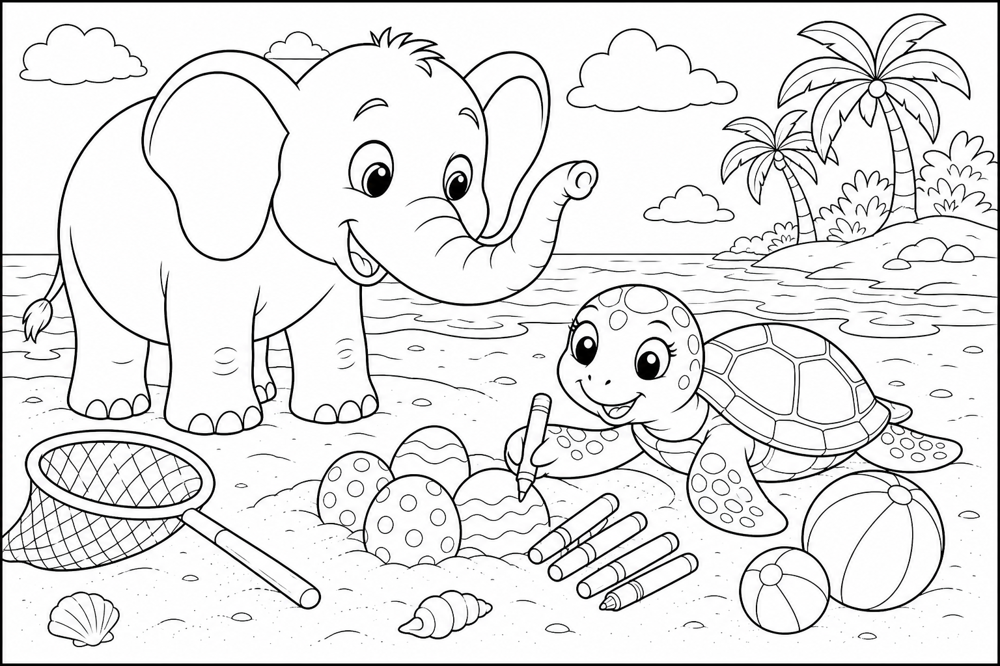
Cerca questa immagine in fondo al libro per colorarla come preferisci. Ricorda: le bandierine colorate intorno al nido e la sabbia dorata disegnata.
C'era una volta un Elefante di nome Franco, che gli amici chiamavano ... EleFranco. Di cognome faceva Franchini. Abitava nella sua accogliente casa nel paesino di FrancaVilla, un borgo marinaro con la spiaggia a due passi, dove le conchiglie brillavano come bottoni di madreperla, le onde scrivevano righe bianche sulla sabbia e l'aria sapeva di sale caldo e alghe dolci.
Era un mattino di brezza leggera e EleFranco aveva una commissione sportiva: «Devo andare al negozio di mare a prendere una rete per i palloni da portare al campo giochi della Festa! Senza rete, i palloni voleranno via.» Si calzò i suoi stivali giganti da spiaggia, gialli e con la suola a onde, prese un sacco e uscì di casa. La passerella di legno tremava piano: THUMP THUMP THUMP Sulla sabbia morbida, una tartaruga marina dal guscio scuro e dagli occhi gentili spostava con cura dei sassi.
Era Sabrina la Tartaruga Marina, lenta ma attenta, e quella mattina aveva le lacrime salate agli angoli degli occhi. «EleFranco, per favore!» sussurrò. «Ho segnato il nido di uova sotto la sabbia, ma la marea ha cancellato metà dei segnali. Se i bagnanti corrono per la Festa, calpesteranno le uova senza saperlo!»
EleFranco posò il sacco e guardò la spiaggia liscia. «Non ti preoccupare, Sabrina. Segniamo bene il perimetro.» Ma mentre cominciava a disegnare con la zampa nella sabbia, la mente cominciò a vagare: pensò alla rete da comprare, ai palloni colorati, al campo giochi gonfiato di risate.
Stava quasi per disegnare troppo in fretta quando Sabrina gemette: «No, lì c'è il nido vero!» Allora l'elefante scosse le grandi orecchie e disse ad alta voce la sua parola magica: "FOCUS!"«Piano, Sabrina. Segniamo con amore, non con fretta.» Disegnò frecce, cerchi e stelle nella sanda — ma era un elefante generoso: il disegno diventò enorme, un labirinto confuso di frecce giganti che puntavano a destra, sinistra e verso il mare.
«Ops,» disse EleFranco. «Ora sembra una mappa del tesoro scritta da un gambero.» I bagnanti però si fermarono curiosi. I guardiani volontari della spiaggia arrivarono con pale e bandierine: «Cos'è questo disegno?» chiesero.
Sabrina, con pazienza, indicò il punto vero sotto una duna bassa. Intorno al nido si formò un cordone di corda e bandierine colorate. Il negoziante di mare, commosso, porse a EleFranco la rete per i palloni senza chiedere monete: «Per chi protegge ciò che non può parlare.» Un bambino del paese chiese: «Ma il disegno serve anche a noi?»
Sabrina annuì piano: «Sì. Ci ricorda di camminare piano vicino alla sabbia calda.» EleFranco aiutò a piantare le bandierine, coprì il nido con un ombrellone leggero di canna e lasciò accanto una conchiglia segnata con una stella — il segno che tutti in FrancaVilla riconoscevano come «qui c'è vita da proteggere». La missione era compiuta senza nemmeno aprire il sacco: la rete era lì, leggera e gratis, e le uova erano di nuovo al sicuro.
EleFranco capì allora la morale di quella giornata: Segnare con amore protegge ciò che non può parlare. 🐢
EleFranco guardò Sabrina che tornava verso il mare con passo lento e felice e scoppiò nella sua famosa risata: OH... OH... OH...

Cerca questa immagine in fondo al libro per colorarla come preferisci. Ricorda: le bolle di sapone iridescenti e la schiuma sul ciuffo.
C'era una volta un Elefante di nome Franco, che gli amici chiamavano ... EleFranco. Di cognome faceva Franchini. Abitava nella sua accogliente casa nel paesino di FrancaVilla, un borgo con un lavatoio comune di pietra grigia, dove l'acqua corrente cantava tra i vasche, le tovaglie stese sventolavano come vele piccole e l'aria sapeva di sapone di Marsiglia e bucato al sole.
Era un mattino luminoso e EleFranco aveva una commissione profumata: «Devo andare al mercato del lavatoio a comprare una saponetta di Marsiglia! Le tovaglie della Festa devono profumare di pulito.» Controllò il canestro: vuoto, pronto per riempirsi di profumo e di risate. Si calzò i suoi stivali giganti da fioraio, blu e con la suola a pois bianchi, prese un canestro e uscì di casa.
I ciottoli bagnati tremavano piano: THUMP THUMP THUMP Al lavatoio, una rana verde brillante saltava disperata tra le vasche. Era Rina la Rana, vivace e rumorosa, ma quella mattina era rossa in viso per lo sforzo. «EleFranco, che disastro!» gracchiò. «Ho fatto troppo schiuma per le tovaglie della Festa e ora il pavimento è un patino!
Gli amici cadono uno dopo l'altro con le gabbie del bucato!» EleFranco posò il canestro e guardò le bolle che galleggiavano ovunque. «Non ti preoccupare, Rina. Raccolgo le bolle e liberiamo la strada.»
Ma mentre aspirava le bolle con la proboscide, la mente cominciò a vagare: pensò alla saponetta quadrata, al profumo di olivo, a quante tovaglie piegare per la Festa. Stava quasi per perdere l'equilibrio quando un'anatra urlò: «Attento, EleFranco!» Allora l'elefante scosse le grandi orecchie e disse ad alta voce la sua parola magica: "FOCUS!"«Piano, Rina. Le bolle volano, noi no.»
Raccolse un mucchio di schiuma, ma il pavimento era scivoloso come vetro: un passo, due passi — SPLASH! — finì seduto in mezzo alle tovaglie bagnate, con le bolle che gli coprivano il ciuffo come un cappello di spuma. «Ops,» disse EleFranco. «Ora sembro un dolce alla panna montata.» Invece di piangere, Rina scoppiò a ridere.
Poi ridde l'anatra. Poi tutti al lavatoio. Il coraggio di ridere del proprio slittamento sciolse la paura, e ognuno aiutò l'altro ad alzarsi. Le bolle rimaste, sollevate dal vento, si posarono sulla facciata del mercato e riflessero un arcobaleno perfetto.
La saponiera uscì con una saponetta profumata e un pacco di tovaglie già stirate: «Per chi lava il paese con il sorriso.» Rina pulì il pavimento con un ramo di salvia; l'anatra passò le tovaglie bagnate di EleFranco al filo più alto, dove il vento le avrebbe asciugate in un battito di ali. Perfino le bolle residue danzavano come palloncini trasparenti sopra la vasca, senza far cadere nessuno. «Ridere insieme,» disse Rina, «è il sapone più forte che conosco.»
EleFranco annuì, ancora seduto nella pozza di schiuma: «Allora oggi facciamo il bucato del coraggio — e profuma di Festa.» La missione era compiuta senza nemmeno aprire il portafoglio: il sapone era lì, profumato e gratis, e il lavatoio era di nuovo sicuro.
EleFranco capì allora la morale di quella giornata: Ridere insieme del proprio slittamento è coraggio. 🫧
EleFranco scosse la schiuma dal ciuffo, aiutò a piegare l'ultima tovaglia e scoppiò nella sua famosa risata: OH... OH... OH...

Cerca questa immagine in fondo al libro per colorarla come preferisci. Ricorda: il fieno dorato che cade sul campo e i semi nel sacchetto.
C'era una volta un Elefante di nome Franco, che gli amici chiamavano ... EleFranco. Di cognome faceva Franchini. Abitava nella sua accogliente casa nel paesino di FrancaVilla, un borgo agricolo di campi dorati, dove i girasoli alzavano la testa verso il sole, i carretti di legno scricchiolavano sulle zolle e l'aria sapeva di fieno tagliato e terra calda.
Era un pomeriggio ventoso e EleFranco aveva una commissione verde: «Devo andare al seminaio a comprare un sacchetto di semi per l'aiuola della Festa! Se il vento li spazza, resteremo senza fiori.» Guardò l'aiuola vuota davanti a casa: «Domani qui ci sarà un prato di colori.» Si calzò i suoi stivali giganti da contadino, marroni e con la suola a righe di aratura, prese una pala piccola e uscì di casa.
Il sentiero tra i campi tremava piano: THUMP THUMP THUMP In mezzo al campo, un asino grigio e testardo tirava con tutte le forze un carretto pieno di fieno. Era Girasole l'Asino — così chiamato per la criniera chiara come petali — e quella sera aveva le orecchie basse per la stanchezza. «EleFranco, aiuto!» ronzò. «Il carretto è incastrato in una buca e devo portare il fieno al recinto prima che gli agnellini abbiano fame!
Ma da solo non ce la faccio.» EleFranco posò la pala e guardò la ruota incastrata. «Non ti preoccupare, Girasole. Tiro io.»
Ma mentre agganciava la proboscide al carretto, la mente cominciò a vagare: pensò ai semi da seminare, ai fiori per la Festa, al profumo di erba fresca. Stava quasi per tirare senza chiedere quando Girasole gridò: «Aspetta, la ruota va sollevata prima!» Allora l'elefante scosse le grandi orecchie e disse ad alta voce la sua parola magica: "FOCUS!"«Hai ragione, Girasole. La forza vera chiede anche un consiglio.»
Tirò con decisione, ma il carretto uscì di scatto: il fieno volò in una pioggia dorata su tutto il campo, coprendo le zolle come una coperta soffice. «Ops,» disse EleFranco. «Ora sembra neve di fieno.» Il seminaio però rise: il vento aveva appena spazzolato semi sul campo, ma il fieno caduto li fermò uniformemente, come una semina perfetta fatta dal cielo.
Girasole raggiunse il recinto con il carretto vuoto ma felice; gli agnellini saltarono intorno all'asino grato e mangiarono il fieno caduto come se fosse una Festa improvvisa. «Vedi?» disse Girasole. «A volte chiedere aiuto regala più fieno di quanto ne avremmo messo sul carretto. E più amici sul sentiero.»
Il seminaio porse a EleFranco un sacchetto extra di semi — girasoli, margherite e un filo di lavanda per l'aiuola della Festa: «Per chi sa chiedere aiuto e seminare bontà.» EleFranco guardò il campo coperto di fieno dorato e sorrise: «Domani qui ci sarà un prato che canta — e ogni fiore ricorderà a qualcuno di sorridere.» La missione era compiuta senza nemmeno aprire la pala: i semi erano lì, profumati di terra e gratis, e il campo era di nuovo rigoglioso.
EleFranco capì allora la morale di quella giornata: La forza vera sa anche chiedere aiuto. 🌾
EleFranco guardò Girasole che sgranocchiava un fiore e scoppiò nella sua famosa risata: OH... OH... OH...

Cerca questa immagine in fondo al libro per colorarla come preferisci. Ricorda: il nastro arcobaleno aggrovigliato e il fiocco gigante sulla bottega.
C'era una volta un Elefante di nome Franco, che gli amici chiamavano ... EleFranco. Di cognome faceva Franchini. Abitava nella sua accogliente casa nel paesino di FrancaVilla, un borgo di botteghe accoglienti, dove le vetrine brillavano di fiocchi colorati, i pacchi impilati profumavano di carta nuova e l'aria sapeva di nastro appena tagliato e sorpresa imminente.
Era un pomeriggio di fretta e EleFranco aveva una commissione festosa: «Devo andare in bottega a comprare carta da regalo per i doni della Festa! Se chiudono per preparare la piazza, resteremo con le mani vuote.» Aveva già in mente fiocchi arancioni e carta a stelle: «Un bel pacco fa sorridere prima ancora di aprirlo.» Si calzò i suoi stivali giganti da festa, rossi e con la punta lucida, prese una lista e uscì di casa.
Il marciapiede tremava piano: THUMP THUMP THUMP Dentro la bottega, un ricciolo piccolo e preciso era intrappolato in un groviglio di nastri. Era Regalo il Ricciolo, il più ordinato dei confezionatori, e quella sera piangeva aculei lucidi. «EleFranco, che pasticcio!» singhiozzò. «I nastri si sono aggrovigliati in un groviglio infinito!
Nessun pacco può uscire per la Festa e i bambini aspettano i doni!» EleFranco posò la lista e guardò la matassa colorata. «Non ti preoccupare, Regalo. Districhiamo insieme.»
Ma mentre usava la punta sensibile della proboscide per sciogliere un nodo, la mente cominciò a vagare: pensò alla carta a stelle, alla carta a righe, a quanti pacchi incartare prima della Festa. Stava quasi per tirare un nodo quando Regalo gridò: «No, quello va sciolto piano!» Allora l'elefante scosse le grandi orecchie e disse ad alta voce la sua parola magica: "FOCUS!"«Un regalo ben fatto vale più della fretta.» Sciolse un nodo, poi un altro, ma un nastro elastico si srotolò con un BOING! e avvolse scaffali, lampadario e persino la proboscide dell'elefante in una matassa arcobaleno.
«Ops,» disse EleFranco. «Ora sembro un pacco vivente.» Regalo però notò che il nastro, teso dalla porta alla vetrina, formava un fiocco gigante visibile da tutta la piazza. I passanti si fermarono ad applaudire: «Che decorazione meravigliosa per la Festa!»
Il padrone della bottega tagliò il nastro con un sorriso e porse a EleFranco rotoli di carta da regalo e pacchi già incartati: «Per chi avvolge il paese di gentilezza.» Regalo, finalmente libero, incartò in tre minuti un pacco perfetto con un fiocco minuscolo e preciso. «Un regalo ben fatto,» sussurrò, «vale più dell'oggetto dentro — ma dentro c'è comunque una sorpresa bellissima.» I bambini della piazza bussarono per vedere il fiocco gigante; la bottega divenne la vetrina più visitata di FrancaVilla quella sera.
EleFranco guardò i pacchi impilati e mormorò: «Ogni regalo racconta una storia — e oggi la storia è condivisa.» La missione era compiuta senza nemmeno leggere la lista: la carta era lì, profumata e gratis, e la bottega era la più bella di FrancaVilla.
EleFranco capì allora la morale di quella giornata: Un regalo ben fatto vale più dell'oggetto dentro. 🎀
EleFranco sciolse l'ultimo giro di nastro dal ciuffo, aiutò Regalo a chiudere l'ultimo pacco e scoppiò nella sua famosa risata: OH... OH... OH...
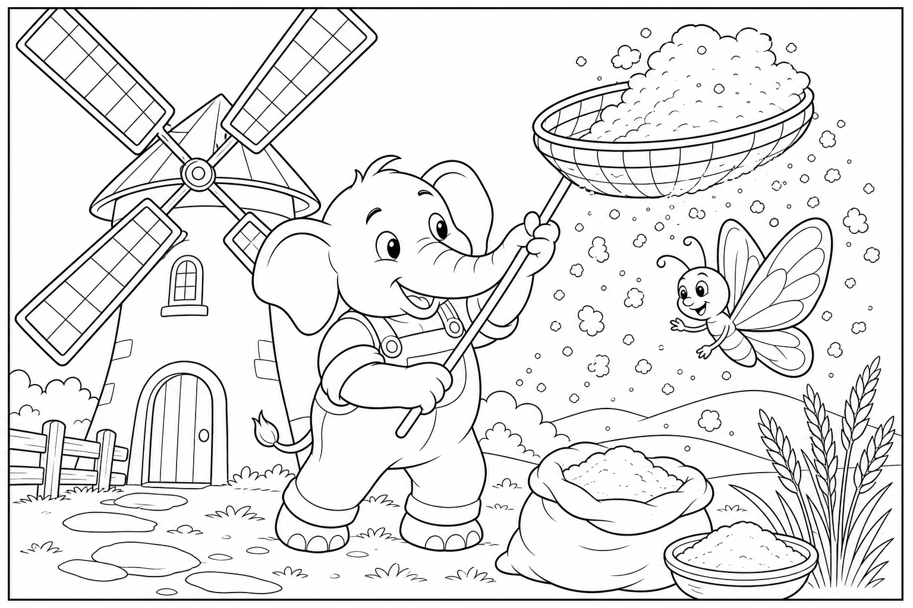
Cerca questa immagine in fondo al libro per colorarla come preferisci. Ricorda: la farina bianca come neve e le ali blu elettriche della farfalla.
C'era una volta un Elefante di nome Franco, che gli amici chiamavano ... EleFranco. Di cognome faceva Franchini. Abitava nella sua accogliente casa nel paesino di FrancaVilla, un borgo con un mulino bianco sul colle, dove la ruota girava lenta nel ruscello, i sacchi di grano profumavano di campi estivi e l'aria sapeva di farina fresca e vento che suona tra le pale.
Era un pomeriggio di brezza e EleFranco aveva una commissione golosa: «Devo andare al mulino a comprare un sacco di farina integrale per le torte della Festa! Se la macina si ferma, resteremo senza dolci.» Si leccò le labbra pensando al profumo del grano appena macinato. Si calzò i suoi stivali giganti da mugnaio, beige e con la suola a spiga, prese un telo e uscì di casa.
Il ponte di legno tremava piano: THUMP THUMP THUMP Sul sentiero del mulino, una farfalla blu elettrico batteva le ali impigliate in una rete di essiccazione. Era Vento la Farfalla Blu, leggera come un sospiro, e quella sera tremava di paura. «EleFranco, aiuto!» sussurrò. «Le mie ali sono incastrate nella rete del grano!
Se non volo via, non posso portare al mulinaio il messaggio che la farina integrale è pronta nel magazzino giusto!» EleFranco posò il telo e guardò la rete. «Non ti preoccupare, Vento. Ti libero con cura.»
Ma mentre tagliava un lembo di rete con un coltellino di legno tenuto nella proboscide, la mente cominciò a vagare: pensò alle torte da impastare, al sacco da caricare, al profumo di grano tostato. Stava quasi per tagliare troppo in fretta quando Vento gridò: «Attento, sopra c'è il sacco!» Allora l'elefante scosse le grandi orecchie e disse ad alta voce la sua parola magica: "FOCUS!"«Piano, Vento. Il vento giusto non ha fretta.»
Liberò un'ala, poi l'altra, ma la rete cadendo aprì un sacco di farina: una neve bianca soffice coprì il sentiero, il ciuffo nero di EleFranco e persino le antenne di Vento. «Ops,» disse EleFranco starnutendo. «ETCIÙ! Ora sembriamo due fantasma di panettone.»
Proprio in quel momento, una corrente gentile — la stessa che faceva girare la ruota del mulino — prese la farina caduta e la guidò lungo un tubo di legno fino al magazzino giusto. Vento, libera, volò sopra il mulino gridando il messaggio al mugnaio. Il mugnaio uscì con un sacco integrale già legato e una piccola torta di prova ancora calda: «Per chi lascia guidare dal vento giusto.» Vento planò un giro di ringraziamento sopra la ruota del mulino, lasciando una scia blu nel cielo del pomeriggio.
Le pale girarono più contente, il ruscello cantò più forte e persino la farina rimasta sul sentiero sembrava polvere di stelle nel sole. «Domani è la Grande Festa,» disse il mugnaio. «Questa farina farà le torte più soffici di tutta FrancaVilla.» La missione era compiuta senza nemmeno aprire il telo: la farina era lì, profumata e gratis, e la farfalla era di nuovo libera.
EleFranco capì allora la morale di quella giornata: Lasciarsi guidare dal vento giusto porta lontano. 🍃
EleFranco scosse la farina dal ciuffo, salutò Vento con la proboscide e scoppiò nella sua famosa risata: OH... OH... OH...

Cerca questa immagine in fondo al libro per colorarla come preferisci. Ricorda: i coriandoli colorati e il nastro arancione di Franca.
C'era una volta un Elefante di nome Franco, che gli amici chiamavano ... EleFranco. Di cognome faceva Franchini. Abitava nella sua accogliente casa nel paesino di FrancaVilla, un borgo che oggi profumava di marzapane e attesa, dove i tetti sembravano fatti di zucchero filato, i camini sbuffavano nuvole a forma di stella e l'aria sapeva di Festa imminente e amicizia ritrovata.
Era un pomeriggio speciale e EleFranco aveva un appuntamento nel cuore: «Devo andare a casa di Franca ad aiutarla a preparare la Grande Festa di FrancaVilla! Tovaglie, tazze, decorazioni — tutto deve essere pronto.» Si calzò i suoi stivali giganti di cuoio marrone, lucidati come quella prima volta che corse a comprare festoni per lei, prese un sacco di coriandoli di riserva e uscì di casa. La strada sterrata tremava piano: THUMP THUMP THUMP Alla casa gialla di Franca — l'amica di sempre, con i capelli raccolti e il grembiule a pois — il tavolo pieghevole traballava sotto piatto, tazze e rotoli di nastri.
Franca rise e pianse insieme: «EleFranco! Sei arrivato! Ma guarda: il tavolo è troppo piccolo per i festoni!» «Non ti preoccupare, Franca.
Lo reggo io.» Ma mentre sorreggeva il tavolo con la proboscide per far appendere a Franca una ghirlanda di carta, la mente cominciò a vagare: pensò alla prima Festa, ai nastri regalati dagli scoiattoli, a quanti amici avrebbero bussato quella sera. Stava quasi per distrarsi quando il tavolo scricchiolò sinistro. Allora l'elefante scosse le grandi orecchie e disse ad alta voce la sua parola magica: "FOCUS!"«Piano, Franca.
Le amicizie vere si costruiscono un festone alla volta.» Franca annnodò un nastro arancione, ma un colpo di vento dalla finestra aperta entrò nella stanza: WHOOOSH! Coriandoli, nastri e fogli di carta volarono in ogni angolo, appiccicandosi al lampadario, alla gatta del camino e al ciuffo nero di EleFranco. «Ops,» disse EleFranco.
«Ora sembriamo una pinata gigante.» Franca scoppiò a ridere — la stessa risata di quando erano bambini — e proprio in quel momento bussarono alla porta. Nora la Volpe arrivò con un cesto di pane. Bruno il Castoro portava dolci da Clara la Pasticciera.
Renatolo lo Scoiattolo reggeva nastri colorati. Jack il Geco, Raffa la Giraffa, Mietta la Scimmietta e tanti altri amici della Stagione 1 e 2 entrarono con striscioni, tazze extra e tovaglie piegate. «Per la Grande Festa!» gridarono in coro. In un attimo la casa di Franca diventò il cuore caldo del paese: tavoli uniti, decorazioni appese, profumo di dolci e risate ovunque.
Bruno sistemò una ghirlanda sullo stipite; Nora dispiegò tovaglie bianche come nuvole; Renatolo agganciò un festone al lampadario con un salto acrobatico. Franca strinse la mano di EleFranco — la stessa mano che tanti capitoli fa aveva corso a comprare i primi nastri per lei — e sussurrò: «Grazie per essere sempre arrivato.» La missione era compiuta senza nemmeno usare i coriandoli di riserva: la Festa era lì, nel sorriso di Franca e nel braccio degli amici, pronta per domani.
EleFranco capì allora la morale di quella giornata: Le amicizie vere restano anche dopo tanto tempo. ❤
EleFranco abbracciò Franca con la proboscide e scoppiò nella sua famosa risata: OH... OH... OH...

Cerca questa immagine in fondo al libro per colorarla come preferisci. Ricorda: i fuochi d'artificio dolci profumati e il festone centrale fiorito.
C'era una volta un Elefante di nome Franco, che gli amici chiamavano ... EleFranco. Di cognome faceva Franchini. Abitava nella sua accogliente casa nel paesino di FrancaVilla, un borgo che oggi brillava come un cielo di lanterne, dove ogni vicolo portava a un ricordo di aiuto dato e ricevuto, le bandierine sventolavano sui tetti di ogni variante mai vista — marzapane, mulino, spiaggia, bosco — e l'aria sapeva di Festa, cannella e famiglia.
Era il giorno della Grande Festa e EleFranco aveva l'ultima missione: «Devo appendere il festone centrale in piazza prima che suoni la campana! Senza quello, la Festa non è completa.» Si calzò i suoi stivali giganti da Festa, dorati e con la suola che lasciava impronte a forma di stella, prese scale, martello gentile e un sacco di coriandoli e uscì di casa. Tutta FrancaVilla tremava piano di gioia: THUMP THUMP THUMP In piazza c'era già tutta la famiglia del cuore: Franca sorrideva accanto al tavolo dei dolci; Bruno il Castoro aggiustava una bandierina; Nora la Volpe sistemava i bicchieri; Renatolo lo Scoiattolo, Jack il Geco, Raffa la Giraffa, Mietta la Scimmietta, Leda la Lontra, Otis il Gufo, Iris la bambina del giardino e tanti altri amici della Stagione 1 e 2 correvano con nastri e palloncini.
«EleFranco!» gridò Franca. «Manca il festone centrale! E guarda il cielo: sembra aspettare qualcosa!» EleFranco posò il sacco e guardò la piazza.
«Non vi preoccupate. Lo appendo io.» Ma mentre correva dalla scala al palco, dal palco all'asta del campanile, la mente cominciò a vagare: pensò a ogni avventura, a ogni amico aiutato, a quante risate aveva seminato lungo le strade di FrancaVilla. Stava quasi per inciampare quando un palloncino di Pippo il Palloncino gli sfiorò l'orecchio.
Allora l'elefante scosse le grandi orecchie e disse ad alta voce la sua parola magica: "FOCUS!"«Una Festa si fa insieme, un festone alla volta!» Salì sulla scala, scese, risalì — ma i coriandoli nel sacco si rovesciarono dentro i suoi stivali giganti, uscirono a ogni passo e i festoni si aggrovigliarono in un abbraccio colorato attorno al palco centrale. «Ops,» disse EleFranco. «Ora sembro un elefante confetti ambulante.»
Tutti risero. E proprio in quel momento, la campana della piazza emise un rintocco dolce: DONG! I coriandoli rimasti, sollevati dal vento gentile di Vento la Farfalla Blu, esplosero in alto in una pioggia di fuochi d'artificio dolci e profumati — non rumore, ma luce di zucchero filato, stelle di cannella e scintille di miele che scesero sulla piazza senza spaventare nessuno. Il festone centrale, aggrovigliato per caso dagli amici, si aprì come un fiore gigante sopra la testa di EleFranco.
Franca gli passò un lembo del nastro arancione. Bruno il Castoro gli strinse una zampa. Nora gli sistemò il ciuffo. Iris gli disse: «Grazie per ogni avventura.»
La missione era compiuta senza nemmeno usare il martello: la Festa era lì, nel cielo profumato e negli abbracci di tutta FrancaVilla, la famiglia intera riunita sotto un festone di amicizia.
EleFranco capì allora la morale di quella giornata: Chi semina bontà raccoglie una famiglia intera. 🏡
EleFranco alzò la proboscide al cielo scintillante e scoppiò nella sua famosa risata, la risata che aveva attraversato due stagioni di avventure: OH... OH... OH...

🖍 Colora qui (iPad) · 📄 Scarica PDF disegni
Sull'iPad apri «Colora qui», scegli l'episodio e usa dito o Apple Pencil. Il PDF va bene per Freeform e GoodNotes.